Document class novel - documentation. V. 1.46.4f, 2017/12/11
For enchanced navigation of this file, turn on JavaScript.
The novel document class provides an integrated method for creating original works of fiction, such as a novel or collection of short stories. It may also be used for popular non-fiction, using design similar to that seen for fiction. It does not provide support for academic or mathematical works.
LuaLaTeX and utf-8 are used exclusively. Dimensions and fonts are pre-configured for a popular American size of print-on-demand softcover fiction. Simple commands allow you to easily change settings. Necessary component packages are pre-loaded and pre-configured. PDF/X capability is included.
Only printed (to paper) books are supported. E-books are not supported, and never will be.
1. Overview
1.1. Description
If you are ready to typeset your great detective novel, or your collection of sci-fi short stories, then novel is for you. And, if you are unfamiliar with the terminology of commercial book publishing, have no fear! This documentation is here to help you.
1.1.1. Installation
A. Requires TeXLive 2016 or later (including current MikTeX).
B. Some Linux (such as Ubuntu 16.04 LTS Xenial) contains TeXLive 2015 or earlier (too old). Work-around: Remove the old TeXLive, and install newer version to your home directory, from tug.org.
C. To use novel, you must also install the libertinus package. This is not automatic.
D. Once you have TeX installed and running, then install novel and libertinus via your TeX package manager. On MiKTeX, they will be listed among available packages. On other TeXLive, try this command (use sudo if TeXLive is installed to system, instead of home directory):
tlmgr install novel libertinus
E. Test your installation: In this documentation folder, there is an extras subfolder. Inside is file novel-example.tex. Copy this file to your home directory, or other location with read/write privileges. You may open it in the TeXWorks editor (if installed), and compile from there. The editor will automatically detect the compiler (LuaLaTeX) and encoding (utf-8). Or, from command line:
lualatex novel-example.tex
E. If novel-example.tex does not compile, the problem is (almost certainly) with your installation. Note that TeX editor software, other than TeXWorks, may or may not recognize the lualatex and utf-8 directives.
F. When it compiles: Inspect the PDF for fonts. It must contain Libertinus Serif and NovelDeco fonts, but not contain Computer Modern or Latin Modern fonts.
If the fonts are incorrect: Did you install libertinus? Did you update the file name database? In some cases, you must clear the contents of any existing luatex-cache folder.
G. If you have Adobe Acrobat Pro software (not the free Adobe Reader): Pre-flight the PDF as PDF/X-1a:2001. It should pass without problem. Be sure that this is the standard you test (not any other PDF/X).
1.1.2. Licensing
A. The novel document class, including software, examples, documentation and supporting images, is distributed under the terms of the LaTeX Project Public License, version 1.3c, or (at your option) any later version.
B. Exception: The included font NovelDeco.otf is distributed under terms of the SIL Open Font License, v.1.1.
C. To ensure that your book may be sold commercially, be careful to use only fonts that allow commercial usage. That may exclude some of the fonts in the LaTeX font catalog. See Appendix C.
1.1.3. Credits
A. Within the TeX code files, you will find places where small or large pieces of code are the work of someone else. Names or organizations are credited in-place within the TeX code, according to license.
B. Various clipart graphics were obtained from openclipart.org.
C. Font NovelDeco.otf was created using FontForge. The font is partly derived from Libertinus Serif, which in turn is derived from Linux Libertine O.
D. In places, I offer opinions or make suggestions regarding design. These are largely based on my own inspection of popular fiction books, at my local public library. In some cases, I follow the Chicago Manual of Style (CMoS), hardcover 16th edition. However, please do not regard my opinions and suggestions as authoritative.
1.1.4. Success Stories
A. ☺ In August 2017, an original novel using this document class was published. The text block used nearly all the default settings, and was electronically submitted as PDF/X-1a:2001.
The color cover image was designed in RGB using Inkscape and GIMP, coverted to CMYK at 240% ink limit using GraphicsMagick and the methods described in this documentation, then finally converted to PDF/X-1a:2001 using this document class.
Both files were automatically reviewed and accepted on first attempt, with the actual printed books for sale within a few days of file submission.
B. ☺ In October 2017, another author published a novel using this document class, again with color cover artwork.
C. ☺ As of November 2017, I am informed that a third author (not writing in English) is in the process of writing a novel with this document class, and has experienced success with preliminary (draft) versions.
D. ☺ An example novel, text and cover, can be found at the GitHub project page, in the other folder.
1.2. Important Behavior
There are several ways that novel is very different from other TeX document classes. Before you wonder why your document doesn't work, you need to understand the differences. All of these are features, not bugs. They are done with the intent of making novel best for its intended purpose.
At the top of your *.tex main document, place these lines:
% !TeX TS-program = LuaLaTeX
% !TeX encoding = UTF-8
Those instructions are read and understood by many TeX editors, and also serve as a reminder to yourself. However, they do nothing when the document is processed by command line.
1.2.1. Always Use UTF-8
A. You must create your document in utf-8 encoding. No OT1, no T1, no LY1, or other TeX font encoding that pre-dates cell phones. Do not call for fontenc in your Preamble, because utf-8 is pre-configured.
B. If you use a plain text editor, or TeXWorks, or export plain text from a word processor, be sure that your text is encoded as utf-8, without byte order mark (BOM).
C. Instead of typing TeX codes such as \`{e} you can simply paste è from a Unicode character map. Other alphabets such as Greek and Cyrillic are directly supported, as long as you choose fonts that support those character sets.
D. If you are on Windows, do not use Notepad! The free Notepad++ (also Portable version) is a suitable plain text editor. Configure it as specified, with utf-8 but without BOM. Does not matter whether UNIX or DOS line endings, as long as you are consistent.
1.2.1.1. Polyglossia Language Support
A. The pre-loaded polyglossia package (not babel) provides language support. By default, novel is configured for American English.
B. If your document's language is something else, or if you will be writing in multiple languages, see the polyglossia package documentation regarding \setdefaultlanguage and other commands.
1.2.2. Do Not Load Fonts via \usepackage or \RequirePackage
The method for loading fonts is described in section 4.2. Be sure you read that! For example, you cannot load a font with \usepackage{fontname} in this document class.
1.2.3. Use LuaLaTeX and Open Type fonts
 A. Novel, uses only the LuaLaTeX compiler. No other! You do not need to understand Lua code.
A. Novel, uses only the LuaLaTeX compiler. No other! You do not need to understand Lua code.
B. The built-in fontspec package requires utf-8 encoding. It is able to load Open Type fonts, and access their internal feature sets. Forget Type 1 fonts and special encodings! If you wish to use Greek or Cyrillic, all you need are compatible fonts.
C. If you accept the pre-configured fonts (from libertinus), then you do not need to know anything about fontspec. But if you wish to configure your own fonts, Appendix E reviews the most important parts of fontspec syntax.
1.2.4. Disabled standard text size commands
A. Standard text size commands, such as \small or \LARGE, will be ignored. The text will appear at its normal size, just as if the commands did not exist.
B. Novel provides its own capability to size text, using different commands.
C. The novel-specific size commands maintain text line grid, where possible. This is important for printed fiction.
1.2.5. Disabled academic-purpose commands
 A. Commands such as
A. Commands such as \section, \chapter, \abstract, \index, \tableofcontents, \maketitle, and many other structural commands will not work with novel. This is intentional.
B. The float and table environments are ineffective. This is intentional. In novel there are specific ways to place images or construct a table of contents.
C. Novel has chapter-related commands specifically created for the needs of fictional works.
D. Novel is focused on doing one thing well, rather than many things poorly. That is why so many "academic" commands have been discarded. They are not necessary in popular fiction.
1.2.6. Images must be raster png or jpg
A. You may use raster images in png or jpg format.
B. Images must be processed to specifications, and placed using special commands.
C. Do not use vector formats such as eps, svg, or pdf.
D. Why only raster images? Since novel is for printed books, there is no advantage to scalable vector artwork. However, there is a disadvantage: Vector artwork often has technical errors that you cannot detect, but a commercial printer can detect.
1.2.7. Beware of $, %, and Other TeX Special Characters
A. This is standard TeX behavior. Just a reminder!
B. TeX has a number of special characters. If you type them in a document, they will not appear as an ordinary printed character, but will do something else. These are:
$ % # _ ^ & ~ \ { } and sometimes [ ]
C. In some cases, an incorrect usage will provide an error message that can be easily deciphered.
D. Incorrect use of the dollar sign may either place your text in math mode (not your intent) or produce a baffling error message that points to an innocent package.
E. The percent symbol normally produces no error, since it is a comment character. But then, whatever text follows on that line will be missing from your PDF. Unless you carefully review the PDF, you might not notice that text is missing.
F. Special characters, other than the backslash, are escaped by placing a backslash in front, thus: \$ for the dollar sign, \% for percent. If you must print a backslash, \string\ does it.
G. To avoid unforeseen problems, you should review your document in a text editor, prior to compiling. Search for any instances of special characters, particularly dollar and percent. Backslash them as needed.
1.2.8. Avoid TeX Editors and IDEs
A. Many TeX editors assume that you are using a standard TeX document class. They may attempt to insert code that does not work in novel class. Or, they may not understand the commands specific to novel. Do not use those editors.
B. The TeXWorks editor is satisfactory. Be sure that you do not run scripts that change the content of your document.
1.2.9. Suggestion: Write Using a Word Processor
A. Write your book first. Code TeX later.
B. A good word processor has advanced spell checking, and may also be able to detect some grammatical errors. I use LibreOffice (also Portable), version 5.3 or later.
C. Remember that styles and formats from a word processor do not translate to TeX styles and formats.
D. Since your document uses utf-8 encoding, you may allow a word processor to automatically substitute curly quotes, curly apostrophe, and emdash. Beware of incorrect direction of apostrophe, in expressions such as Give ’em hell.
E. Export plain text as utf-8 (without BOM).
F. For the editing and proofreading phase, in a word processor, I use a special font CPmodified.otf. This is my custom derivative of the Courier Prime regular font.
CPmodified can be found in the documentation extras folder. It is released under the SIL Open Font License v.1.1. To use this font in a word processor, install it in your operating system, not TeX.
The font includes Latin-1 and ANSI characters, and a few others. It is not quite monospaced (the em dash and ellipsis are longer). Punctuation is highly exaggerated, so you can see it more easily. My own experience is that most errors in the nearly-finished document involve punctuation. Sample, using a word processor:
1.2.10. Paragraph Layout
A. In novel, inter-line spacing is fixed. There is no padding between paragraphs. No plus/minus "flexible glue." This is standard for printed fiction.
B. When TeX processes a document on a paragraph-by-paragraph basis, it chooses the layout that has the least total "penalty." Penalties are assessed based on factors such as word spacing, hyphenation, widows, and orphans (clubs). Novel applies a moderately strong penalty to hyphens; they are allowed, but discouraged. Widows and orphans are penalized very little. Word spacing, and even the spacing and characters within words, are controlled by moderate settings of the built-in microtype package.
C. You are likely to find widows and orphans on many pages. If you wish to remove them, you must edit your text. This choice was made for several reasons: First, attention to widows and orphans would reduce the effectiveness of the other, more important, layout penalties. Second, fiction often has numerous short paragraphs (especially with dialogue), and it is very difficult for software to deal with all of them. Third, a great deal of contemporary fiction allows widows and orphans, when they are not distracting.
2. Document Class Options
A. As with other LaTeX classes, novel is called this way:
\documentclass[options,separated,by,commas]{novel}
B. You do NOT use class options to choose paper size, font size, or any other dimensions. The settings are described in section 4.
C. Default sizes are appropriate for most print-on-demand, softcover fiction.
2.1. draft
A. May NOT be used for final, print-ready PDF.
B. The word DRAFT will appear at the upper left of each page.
C. When text cannot be precisely wrapped, a small black bar (overflow rule) appears at right. These locations are reported in the log file as "overfull hbox" warnings. Example:

D. Some class options are only effective when used with draft option.
E. PDF/X compliance is turned off. This over-rides any PDF/X setting.
F. Some packages take note of whether or not the document is in draft mode, and change their behavior accordingly. However, the included microtype package will always be in final mode, and the included hyperref package will always be in draft mode.
2.2. graytext
A. May be used for final, print-ready PDF. Only use when necessary.
B. Allows text in grayscale. Otherwise, text is always black, regardless of color command.

C. Does not affect images.
D. Uses methods of the pre-loaded xcolor package.
E. Gray text is printed using a pattern of black dots, not "gray ink." Fine details may be lost. It is best to limit gray text to special items, such as chapter titles and decorations.
F. You may place darker text over a lighter background. But lighter text over darker background is unlikely to print as intended, even if it looks correct in the PDF. See section 7.3.3.
2.3. shademargins
 A. Only effective with draft option. May NOT be used for final, print-ready PDF.
A. Only effective with draft option. May NOT be used for final, print-ready PDF.
B. Helps to visualize and detect possible layout problems.
C. Does not require graytext option.
D. Applies dark gray shade to unsafe areas (if set). Applies medium gray shade to margin areas. Applies light gray shade to header/footer areas.
E. Margins include areas inside and outside the unsafe zones.
F. Header and Footer, if any, are within the rectangle bounded by the margins.
G. If Media Size exceeds Trim Size, the area outside the Trim Size will not be gray, because it is not part of the finished book. See sections 4.1.1 and 4.1.2.
F. Technical Info: During page shipout, adds the gray as background color, with a white box above it, then text (and images, if any) on top.
2.4. cropmarks (do not use unless required)
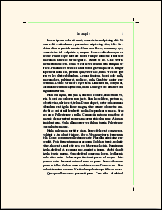A. May be used with or without draft option.
B. Ignored if Trim Size is same as Media Size.
C. Do not load any package that provides other cropmarks.
D. Most print-on-demand services do NOT want crop marks (also known as trim marks). Do not use this option unless you are certain that you need crop marks!
E. Whether or not you use cropmarks option: In PDF/X, the file contains invisible information (TrimBox) that is understood by automatic print/cut machines.
F. If Trim Size is placed off-center in Media Size, then you will not see all four pairs of crop marks.
G. The crop marks are very basic. There is only one setting, which may be used in the Preamble:

\SetCropmarkGap{length}
In the accompanying diagram, the invisible TrimBox is shown as a green line. The cropmark gap is the distance from there to the black crop marks. Default is 0.125in (commonly used in the U.S.A.). In all cases, the far end of the crop marks is 0.5in from the TrimBox.
2.5. cropview
 A. Only effective with draft option. May NOT be used for final, print-ready PDF.
A. Only effective with draft option. May NOT be used for final, print-ready PDF.
B. Ignored if Trim Size is same as Media Size.
C. Instructs PDF viewer: Only display Trim Size on screen.
D. Helps to visualize trimmed book size, when Media Size is larger than Trim Size.
E. Technical Info: Normally, the PDF CropBox is equal to the MediaBox. This option sets the CropBox equal to the TrimBox.
2.6. closecrop
A. Only effective with draft option.
B. Minimizes white space surrounding the text/header/footer, so that the result may be viewed on a hand-held device at largest practical text size.
C. Purpose: Helps you to visualize your own book, while traveling, before you make final edits.
D. This is NOT an e-book. It does not meet e-book standards, and cannot be changed to meet e-book standards.
E. Technical Info: First, the live area (text plus head/foot) is calculated from the original settings. Then, small margins are added, and the Trim Size is reduced to fit. So, the closecrop PDF size is not the same as in the print-ready PDF, although the page layout is the same.
2.7. xml
A. May NOT be used in draft mode. Only effective with PDF/X.
B. Copies internal XMP Metadata to a separate jobname-XMPasXML.xml file.
C. Not necessary. Only informative. Does not affect structure or content of PDF.
D. Technical Info: XMP packet may be isolated by editing the *.xml file, in a plain text editor (requires utf-8). Necessary edits are obvious.
2.8. coverart
This option is only used for cover artwork. See section 7.4.
2.9. Other Options (primarily for developers)
A. unblock Allows blocked, known-incompatible packages to load.
B. mtoff The microtype package will not be loaded.
C. polyoff The polyglossia package will not be loaded.
D. test Only used with file novel-testsuite.tex.
E. debug OBSOLETE. Experimental in version 1.38. Now ignored.
3. Metadata, File Data, and PDF/X
A. The commands described on this page are used only in the Preamble.
B. These commands write non-printing information to the PDF file. Some of the information is used to identify and classify the file. Other information is read by the printer, to assist it with printing choices.
C. Some of the terms have different meanings, depending on whether they are used in the context of printing, book distribution, or ebooks. To avoid confusion within this documentation I will use different terms when they mean different things. When you are communicating with your printing and distribution service, take care to ensure that your understanding of terminology is what they really mean.
3.1. Definition of Terms
This section is more detailed than it needs to be, because my review of various online forums (unrelated to TeX) shows a lot of user confusion.
3.1.1. ISBN Metadata
A. When you obtain the ISBN for your book, either directly through the issuing agency or via your chosen print service, you will enter ISBN Metadata in an online form.
B. This metadata goes into a database, and identifies your printed book in distribution and sales channels. It neither knows nor cares about PDF. (If you were marketing a PDF ebook, instead of print, that would be a different story.)
C. ISBN Metadata includes title, author(s), subtitle if any, ISBN, and other identifying information. Once the book is released, this information (normally) cannot be changed.
D. You may also enter a description, genre classification, and other information that will help people find your book by browsing, and help to sell your book. This information can usually be changed at a later date.
E. The ISBN refers to your printed book, not to the PDF file. You are not selling copies of the PDF.
3.1.2. Printed Metadata
A. Printed Metadata refers to the information that can be seen on paper, in expected places: the book cover, the title page, and the copyright page.
B. Whether your book was printed from a PDF file, or by some other method, is not relevant.
C. Your print service will insist that the title, subtitle (if any), author, and ISBN in these places exactly match what appears in the ISBN database. Of course, you can (and usually will) use styling or images to make the Printed Metadata more attractive than the plain-text ISBN Metadata.
D. Some print services may object to artwork that is too fancy, on the grounds that it is difficult to discern the title and author. Although this is very unlikely, it is better to ask before committing resources.
3.1.3. File Data (PDF Metadata)
A. Your PDF has internal metadata, which can been seen by PDF reader software.
B. To avoid confusion, this documentation uses the term File Data to mean this internal PDF Metadata.
C. You can see some of the File Data when you open the PDF in any reader, and go to File>Properties. To see all of it, you need professional software (such as Adobe Acrobat Pro).
D. Be sure to read the rules for File Data, below. Some of it is generic, and some is particular to TeX or to the novel class.
3.2. Rules for File Data
File Data must conform to several specifications, in terms of what you may or may not write. Some of the limitations are imposed by the book distribution industry, which stores information in its databases a certain way.
What File Data do you need, if any? Ask your print service.
3.2.1. Required, Prohibited, Optional?
A. If PDF/X compliance is required, then you must at least set the title in File Data, using the \SetTitle command. Note that this title is not styled in any way.
B. Some print services require a minimum amount of file data, particularly title and author, which must match the printed metadata and ISBN metadata for these fields.
C. Other services may require that the book's ISBN number, with something like _text added, be used in place of the title. Remember that underscore is a special character in LaTeX, so it must be preceded by a backslash.
D. Many print services do not care about File Data, one way or the other. Your PDF is passed through production according to its file name, not its internals. In such a case, assume that title and author are required.
E. Be sure that any included images are stripped of their own image metadata. The procedure is described in section 7.2.
3.2.2. Limited to Latin-1?
A. At least in the USA, your print service may require that File Data be limited to characters in the Latin-1 set. This is because their production and distribution software uses Latin-1 for the database.
B. Latin-1 does not include curly quotes or em dash. You will still be using utf-8 encoding in your document files, but your choice of characters is restricted.
C. Novel allows the title, and other File Data, to be in alphabets such as Greek or Cyrillic. If you are limited to Latin-1, the limitation has nothing to do with TeX or PDF.
D. If your book has File Data using quotes, then use the special commands \straightquote{} and \straightdblquote{}. Be sure to use the braces, so that you don't have to worry about gobbled space. When you use these commands, you eliminate the risk that your software will automatically convert them to the forbidden curly quotes. Example:
\SetTitle{That\straightquote{}s Amore} % That's Amore
E. If you are limited to Latin-1 in File Data, you can still use curly quotes and em dash on the cover and title page, and in headings.
F. There is no \maketitle command in novel. You may (and should) apply styling to the printed title, even though the File Data title cannot be styled.
3.2.3. TeX escapes
A. In File Data, you must obey the same TeX rules that apply everywhere: Certain characters have special meaning, and must be preceded by a backslash, if you wish to use them as ordinary characters.
B. The list of special characters:
# $ % & (hash, dollar, percent, ampersand)
Example: The title Doing 9% & Gone is coded:
\SetTitle{Doing 9\% \& Gone}
C. The above characters are rarely needed in File Data. Sometimes they must be spelled out, in order to agree with your book's ISBN Metadata. For example, you may need to write "and" rather than the ampersand, "dollar" rather than the dollar symbol, and "percent" or "per-cent" rather than the percent symbol.
3.2.4. Forbidden Characters
A. Do not use the backslash \ except as described above.
B. Do not use the tilde ~ or the circumflex ^.
C. Do not use TeX code, such as \`e for e with grave; instead paste è directly from a character map.
D. Do not use styling, such as {\small text} or \textit{text}.
E. If necessary, use \straightquote{} and \straightdblquote{}. Do not use TeX code for apostrophe or quote.
F. Do not use multiple hyphens to create longer dashes. Do not use em dash or en dash.
3.3. File Data Commands
Now that you understand what File Data means, and how it may be written, you can use commands to write it.
3.3.1. \SetTitle{text}
Default title has changed from version 1.46.1. See News NI.5
A. The novel document class does not have \maketitle. The title is not automatically transferred to a title page, because there is no automatic title page.
B. The title can be retrieved as \theTitle anywhere in your document.
C. In certain page layouts, the title is used as default text in recto page headings. You may over-ride this behavior. See section 4.3.4.6.
D. You may set the title as empty (or blank space). In very rare cases, that is useful. However, if you do that, then you must follow \SetTitle{} with \SetPDFX{off}, or an error will result. This is because PDF/X standards require a real title.
3.3.2. \SetAuthor{text}
A. The default author is empty (no author).
B. In certain page layouts, the author is used as default text in verso page headings. You may over-ride this behavior. See section 4.3.4.6.
C. The author can be retrieved as \theAuthor anywhere in your document.
D. Use the name as it is spoken. Correct: Mary Smith. Incorrect: Smith, Mary. Possibly correct, if true: Mary Smith, Ph. D.
E. Your PDF file is not seen by a public database. Instead, the public database contains the information you entered, when you obtained the ISBN. See section 3.1.1. So, if you have multiple authors or minor contributors, that is the place to provide search information.
F. Ask your print service about how to enter multiple authors, and how to display them in print.
G. Print-On-Demand services do not like to split royalty payments among multiple authors. Instead, the entire account is the responsibility of one main author or editor.
If anyone else is involved, that is a matter of private contract betwen the one main author/editor, and any other contributors. The print service neither knows nor cares about such agreements, and will do nothing to cooperate.
[DISCLAIMER] Here is my amateur advice: Consider using other contributors on a work-for-hire basis. This involves a written contract, prior payment of a fixed amount that does not depend on sales, and no grant of rights. You also need written assurance that the hired persons have the right to sell you the work they provide. If you need professional advice, then consult a professional.
3.3.3. \SetSubtitle{text}
A. The subtitle can be retrieved as \theSubtitle anywhere in your document.
B. The subtitle does not appear in File Data, and does not appear anywhere in your book, unless you manually write it there (either manually, or via \theSubtitle.
C. If you want the subtitle to appear in File Data, manually include it via \SetTitle. Example:
\SetTitle{Megabarf: The Green Plague of London}
Then, you may need to adjust page headings so that only the main title appears. See section 4.3.4.6.
D. Usually, there is no benefit to including the subtitle in File Data. The search database does not read your PDF. It reads the information you entered as ISBN Metadata, which does have an entry for subtitle.
3.3.4 Advanced: \SetApplication{text} and \SetProducer{text}
A. The Application, also known as CreatorTool, is the program used to create your source document. Text editors, word processors, and page layout programs are the most common Applications (not specific to TeX).
B. The PDF Producer is the program that converts the source document to PDF. In many cases, the Producer is a back-end, directly linked to the Application.
C. These details are automatically created when you compile your document, without any input from you. However, if you have the need to provide a custom text string for the Application or Producer, these commands will do it.
3.4. PDF/X
New in version 1.46.1: Default settings changed. See News NI.5.
A. Commercial printers are very likely to require PDF/X compliance. This ensures that your PDF meets a variety of criteria, by containing those things it must contain, and omitting those things it must not contain.
B. Most perfectly valid PDF files are not PDF/X compliant, simply because they are not intended for commercial printing.
C. To set PDF/X compliance, use this command in Preamble:
\SetPDFX[OutputIntent]{ComplianceStandard} and starred version
D. A non-PDF/X file is not a defective file! It complies with PDF standards, but not PDF/X standards. Some print services insist on PDF/X. Others don't care, as long as the fonts are embedded (which they always are).
E. Some document class options are not used for final print production. When you use these options, PDF/X will be temporarily turned off, regardless of your setting.
3.4.1. Compliance Standards
A. The following choices are available:
X-1a:2001 (default)
X-1a:2003
X-3:2002
X-3:2003
off
B. The first of these is the one that is most widely accepted in commercial printing. Anything meeting X-1a:2001 necessarily meets the other standards.
C. If your book involved complicated color artwork, then the correct choice might be crucial. But for a black and white book block, X-1a:2001 is the preferred choice, unless your print service says otherwise.
3.4.2. Output Intent
A. Output Intent informs the printer that you "intend" your PDF to be printed according to certain technical capabilities, particularly regarding color.
B. If your are using color-managed workflow with a calibrated monitor and color profile, and if the actual printer matches your intent, then you can expect accurate printed colors within the technical limits.
C. If the intended printer does not match the actual printer, there are three possible results: (1) The file will still be printed, but colors may be inaccurate. Home and office printers do this routinely. (2) If the printer is very advanced, it will adjust its properties to emulate the intended printer. (3) The printer may reject the print job, because it knows that it cannot produce the intended results.
D. The above considerations are very important for glossy fashion magazines, somewhat important for color book covers, and unimportant for non-color book text. Nevertheless, an Output Intent is required to meet PDF/X compliance, even when it does not matter.
E. The Output Intent is an optional argument to \SetPDFX, because a default will be used when the Intent is not specified.
3.4.3. Built-in Output Intent Codes
A. There are three pre-defined choices for Output Intent:
CGATS TR 001 (default) (can also use CGATSTR001)
FOGRA39
JC200103
B. The first of these is known as "US Web Coated SWOP v2" in the USA, and is the most commonly-used American print standard for this kind of book.
C. The second is widely used in Europe, the third in Japan.
3.4.4. Other Output Intents
A. If you are required to use an Output Intent that is not one of the above three, then you have to code it yourself.
B. In a place where TeX can find it, create a plain text file with its file name in the following format:
File name begins with novel- (note the hyphen).
No spaces or underscores in file name, no matter what the Intent.
File extension is .clo
C. Example valid file name: novel-YourIntent.clo.
The above file is loaded using \SetPDFX[YourIntent]{compliance}.
D. The file contains (up to) five \gdef commands. The \@OIidentifier is called "reference name" by some authorities. Here is the code used for CGATS TR 001:
\gdef\@OIidentifier{CGATS TR 001}
\gdef\@OIcondition{SWOP (Publication) printing in USA (Printing process definition: ANSI CGATS.6).}
\gdef\@OIinfo{U.S. Web Coated (SWOP) v2}
\gdef\@OIregistry{http://www.color.org}
\gdef\@OIprofile{USWebCoatedSWOP.icc}
E. If the data contains any TeX special characters, such as underscore, percent, ampersand, or number sign, they must be escaped using a backslash.
F. The necessary data may be provided by your print service, or perhaps can be found at resources such as the International Color Consortium. Alas, this source (and others) do not make it easy to discern the data.
G. Another place to look for Output Intent data is in your (texmf)/tex/latex/pdfx folder. This will be in your TeX system if package pdfx is installed (but do not load this package into novel class). Files AdobeColorProfiles.tex and AdobeExternalProfiles.tex contain code prepared by the author of the pdfx package. The macro names are not the same, but they are easy to decode: \@OIidentifer is /OutputConditionIdentifier; \@OIcondition is /ProfileName; \@OIinfo is /OutputCondition; \@OIregistry is /RegistryName; and \@OIprofile follows \setCMYKcolorprofile.
3.4.5. Whether or Not to Embed *.icc
A. Each Output Intent has a color profile, in the form of a file with extension *.icc.
B. You usually do not need the color profile, because the printer knows which profile corresponds with which standard Output Intent code.
C. When you use \SetPDFX in its un-starred form, the *.icc color profile will not be embedded in the PDF. This is the normal situation.
D. If your print service demands that you embed the *.icc color profile, then use \SetPDFX* (with the asterisk). You must have the actual *.icc file available where TeX can find it.
E. Do not embed the *.icc color profile unless specifically requested by your print service. If you embed it when you should not, the result may be worse!
D. If your printer requests "US Web Coated SWOP v2" and, as usual, requests that you not embed the corresponding *.icc color profile, then some software will read the Output Intent as "CGATS TR 001" instead of "US Web Coated SWOP v2". They are identical.
3.4.6. Where to Find *.icc Files
A. You do not need an *.icc color profile unless you choose to embed it.
B. Although many *.icc color profiles are freely available, they usually cannot be distributed within an open-source project. You might already have them in your system, wherever such files are stored. Note that TeX uses forward slash in file paths, not backslash, even if the platform is Windows:
Windows: C:/Windows/System32/spool/drivers/color/
Linux: /usr/share/color or hidden ~/.local/share/icc/ or other places
OSX: /Library/Colorsync/Profiles/ or hidden (username)/Library/Colorsync/Profiles/
C. If you do not have a file you need, look on the Internet here and here. These links also have many other profiles, beyond the basic three.
D. In a few cases, your print service may provide the necessary *.icc file.
E. You want printer profiles, usually CMYK. Don't worry about the files being "for Windows," as they are actually cross-platform.
F. If your system has the necessary *.icc file for your Output Intent, but novel cannot find it, then copy the file to the same folder as your TeX document.
G. Again: Do not embed the color profile unless the printer requests embedding.
4. Book Size, Page Layout, and Fonts
In novel, you do not use class options to set the size or layout of your book, or font size.
4.1. Book Dimensions
4.1.1. Trim Size and TrimBox
Trim Size is globally set in Preamble:
\SetTrimSize{width}{height}
The width and height must have dimensions, such as in or cm.
A. Trim Size is the finished size of your book, width and height (but not thickness). In the case of softcover books, it is the exact size.
In the case of hardcover books, where the cover is slightly larger than the pages, your print service will tell you whether they mean the cover size or the page size.
B. PDF/X internally specifies the Trim Size as a rectangular TrimBox. This provides invisible instructions to an automated cutting machine, when the Trim Size is smaller than the actual paper sheet. You do not set the TrimBox yourself.
C. Your print service has a list of standard trim sizes. For fiction, you probably want "creme" (off-white) paper, which eliminates a few of the choices. Choice of size may also be limited by the distribution channels.
D. If you do not specify the Trim Size, the default is 5.5in wide, 8.5in high. This is a widely-used "trade" size for softcover print-on-demand fiction in the U.S.A. If in doubt, leave the default.
E. If you ever need to retroactively change Trim Size, see Appendix A.
F. Do not request a mass-market paperback Trim Size unless you really, truly, know what you are doing. Since you are not a major writer for a major publishing house, you don't know; so, don't do it.
4.1.2. Media Size and MediaBox
A. In PDF terminology, Media Size is the size of the PDF page. It is internally defined by the MediaBox. By default, it is identical to the Trim Size. Do not set it manually, unless you must.
B. When you print at home, most printers will automatically adjust the Media Size, so that it fits the actual paper in the printer's tray.
Some advanced printers will halt, and inform you that the PDF Media Size does not fit the available paper; then you will be asked whether you wish to proceed.
C. Sheet-fed commercial printers work the same way as your home printer. Usually, the PDF Media Size is automatically adjusted to fit the available paper. Trim Size is unaffected.
Some printers are programmed to halt when they see a Media Size misfit. This is a big nuisance, because commercial printers rely on rapid production. In this case, the print service will demand that you set the PDF Media Size equal to their actual paper sheet size. The TrimBox will float within the MediaBox.
D. At right, the book's Trim Size (green border) is centered in a larger PDF Media Size. The invisible TrimBox is outlined in green. Anything outside the TrimBox does not appear in the finished book.
E. When you request PDF/X compliance, the TrimBox is automatically added. If Trim Size equals Media Size, then the TrimBox is at the outer edges of the PDF.
F. If you are required to float the Trim Size in a larger Media Size, is is globally set in Preamble:
\SetMediaSize[alignment]{width}{height}
By default, the TrimBox is horizontally and vertically centered in the MediaBox. If the optional alignment is set to corner then the TrimBox will be placed at a corner of the MediaBox (verso at upper left, recto at upper right, so they are back-to-back). Do not use corner unless requested by your print service. However, if you are hand-making a sample copy at home, using corner will reduce the amount of cutting.
D. Again: You usually will not set Media Size manually.
4.2. Fonts and Normal Font Size
4.2.1. Parent (Main) Font and Size
A. In novel you do not directly set the main font (also known as roman default). Instead, you set a parent font, from which the main font is derived.
B. The default parent font is Libertinus Serif, which is an up-to-date branch of Linux Libertine O. You must install it as package libertinus. If you do not have this font, then Latin Modern Roman will be used as fallback, but it is not really suitable for use in printed fiction.
C. Choose only Open Type or TrueType fonts, not the ancient Type 1 (PostScript) or Metafonts. The font you choose does not have to be part of any TeX package, because you do not need any *.sty file or TeX metrics. All of that is built into the font itself. This is thanks to LuaLaTeX and the built-in fontspec package.
D. You do not write \usepackage{fontname} or \RequirePackage{fontname}. If you do that, then a warning or error will result, and in any case the font you get won't be the one you were expecting.
4.2.1.1. \SetParentFont[features]{fontname}
A. In novel you set a parent font, which is the ancestor of several pre-defined font styles, including the main font. In Preamble:
\SetParentFont[features]{fontname}
B. The command uses fontspec syntax, which is reviewed in Appendix E, and described in full detail by the fontspec package documentation.
C. Whether you use \SetParentFont or accept the default, the features and fontname are stored as strings in macros \parentfontfeatures and \parentfontname. You may use \parentfontfeatures and \parentfontname as arguments to other font commands.
D. If you have the proper license, you can use a commercial font. For example:
\SetParentFont{Adobe Garamond Pro}
See how easy that is? By default, novel will apply TeX Ligatures and Kerning to the parent font and all its descendants. Common Ligatures and OldStyle numbers will be added for the main font. This is ideal for fiction.
4.2.1.2. \SetFontSize{length}
A. In the novel document class, you do not set point size as a class option. Instead you use \SetFontSize in the Preamble. It applies to the parent (main) font, and is used as the basis for scaling font sizes.
B. The size may be any units TeX understands, including decimal values. So, 12.8bp and 13.1pt are acceptable. This is because you will be using scalable, Open Type and TrueType fonts throughout your document. They do not need TeX metrics.
C. If you insist on using ancient TeX fonts, then you may need to specify a convenient integer font size such as 11pt or 12pt. But why? Forget those fonts! Welcome to the Twenty-First Century.
D. The minimum normal font size is 8pt, and the maximum is 18bp. On a local basis, text may be larger or smaller than this.
E. If you do not use this command, the default font size will be set to 11.4pt more or less. That is, the size is calculated from other layout settings. When there is less available text area, the default size is 11pt. For larger books, the default is 12pt.
F. Once you have set the Trim Size, margins, and parent font, set the font size for readability. Depending on whom you ask, each line of free-running text should average 60 to 66 characters (including spaces). If you use all of the novel default settings, including Libertinus Serif parent font, that's what you will get. But if you change anything, then do a test document to see what font size works best.
G. If you use the \Rework commands (Appendix A), then the font size will be tweaked, whether you use the default size or set it yourself.
4.2.2. Descendant Fonts: main font, chapter font, subch font, head font
A. The descendant fonts are automatically set, as variations of the parent font:

For example, the main font uses the parent font family. It has TeX Ligatures and Kerning (inherited from the parent font), and also Common Ligatures and OldStyle numbers.
B. The main font is not configured directly. Instead, configure the parent font, then the main font (and other descendants) will obey. For example, if you don't want OldStyle numbers:
\SetParentFont[Numbers=Lining]{fontname}
Then, Lining numbers will be used for the main font (and other descendants).
C. If you don't like the defaults, you can set the other descendant fonts directly, in Preamble:
\SetChapterFont[features]{fontname} % see section 5.1.3.1
\SetSubchFont[features]{fontname} % see section 5.1.3.1
\SetHeadFont[features]{fontname} % see section 4.3.4.2
D. You may use \parentfontfeatures and/or \parentfontname as arguments, if you wish.
4.2.3. Advanced: The Deco Font
A. Open Type font NovelDeco.otf is packaged with the novel class. It is a special-purpose font that provides characters for the \decoglyph and \acronym commands.
B. Normally, you do not need to configure this font, as it is automatic. The only reason for changng it is if you are an advanced user, who wishes to use a substitute font with different decorations. However, you may not specify just any font! The substitute must be an edited version of NovelDeco.otf, with a different font name. If you don't know what that means, then don't do it.
\SetDecoFont[features]{fontname} % see section 5.1.3.3
4.2.4. Advanced: Mono, Sans, and Math Fonts
A. There are several pre-defined fonts that do not descend from the parent font. In each case, an appropriate default font is selected. You will probably never need to use them; but TeX being what it is, default fonts are chosen "whether you like it or not."
B. The default sans-serif font will be Libertinus Sans if available. If not, the fallback font is Latin Modern Sans. To choose your own, use this command in Preamble, with fontspec syntax:
\SetSansFont[features]{fontname}
C. The default monospaced font will be Libertinus Mono if available. If not, the fallback font is Latin Modern Mono. To choose your own, use this command in Preamble, with fontspec syntax:
\SetMonoFont[features]{fontname}
D. If you need a math font, then may I gently suggest that maybe novel is not the right document class for you?
Nevertheless, Libertinus Math is loaded if available; otherwise Latin Modern Math.
If neither of those fonts are found, then NovelDeco.otf will be loaded as a fake math font, with no actual math symbols. That allows you to proceed without a real math font. But if you attempt to print math, it will look wrong.
You may choose your own math font using \setmathfont from package unicode-math. See that package documentation for details.
4.2.5. Advanced: Defining New Font Commands
A. You can define new font commands in Preamble. The syntax depends on whether the new font is part of a family (where you might have bold and italic variants), or just a single file (no variants). If part of a family, use \NewFontFamily. If alone, use \NewFontFace.
The \NewFontFamily command (or \NewFontFace) takes three arguments: First, the name you assign to the new font command is required. Second, font features are optional. Third, the font name is required. The fontspec syntax is used in Preamble:
\NewFontFamily\pickaname[features]{fontfamily}
\NewFontFace\pickaname[features]{singlefont}
In the document body, you use the new font command:
{\pickaname Text in the font selected by pickaname command.}
B. If you define a font family when you should have just defined a font face, there will be complaints in the log file, because the font loader cannot find the (nonexistent) other members of the family. But the document will compile.
On the other hand, if you define a font face when you should have defined a font family, then commands for bold or italic will have no effect, since the other family members were not loaded. Again, the document will compile.
C. Example: Suppose your work is science fiction, and one if its characters is a talking robot. You wish to depict its utterances in a robotic-looking font, which will be called using a new \robovoice command. You shop around, and find that the Orbitron font suits your purpose, except that it is too large compared to your main font. So, you scale it.
In the Preamble, you define the new font command:
\NewFontFace\robovoice[Scale=0.8]{Orbitron} % not part of a family
After some experimentation, you realize that the \robovoice letters need to be spread apart a bit. Do not use the standard LaTeX \textls command. Instead, go back and change the font definition like this:
\NewFontFace\robovoice[Scale=0.8,LetterSpace=number]{Orbitron} % pick a number
In the document body:
``Want some oil?'' asked Captain Withens.\par
{\robovoice ``Is it Gamma-42 Special oil?''} asked the robot.\par
``No, I got it on sale at Cosmo-Mart.''\par
{\robovoice ``Forget it. I'm an oil gourmet.''}\par
The result:

D. Caution: If you are using a new font within body text (as above), then it is a bad idea to use Scale greater than 1.0. Reason: An excessively tall font will cause lines to spread apart, and you will lose the line grid.
E. Example: Suppose that you wish to style the title of your book, in a font that is not used for other things such as chapter titles. You purchase a license for the Bernhard Modern Std fonts, in Regular and Italic.
In the Preamble:
\NewFontFamily\booktitlefont{Bernhard Modern Std}
The title page, using \charscale for size:
\thispagestyle{empty}
\vspace*{7\nbs}
\begin{center}
\charscale[3]{\booktitlefont The \textit{Fluffy} Conspiracy}\par
\vspace{6\nbs}
\charscale[2]{Priscilla Milde}\par
\vfill
Nonexistent Publications ⢠Portland, Oregon\par
\end{center}
4.3. Interior Page Layout
Everything is pre-configured, specifically for the purpose of fiction. You only need to write a layout command if you don't like the defaults.
4.3.1. Margins
Margins are globally set in Preamble:
\SetMargins{top}{outer}{bottom}{inner}
Mnemonic for order of margins: "TOBI, or not TOBI, that is the question."
Each of the settings must have dimension, such as in or mm.
A. Margins are required on all four edges of the page. They do not have to be the same width. Generally the margin at the inside edge (spine margin) is wider. The novel class does not provide for marginal notes.
B. In the case of fiction, it is usually the case that the inner margin is the widest. But this is not a rule for all books. All that is required is that each margin be "wide enough" for the printing process.
C. Print services are not used to seeing books with exotic margins (such as bottom margin twice the size of top margin). They may think that there is a mistake in your PDF, or in the print job, if you do that.
D. Normally, your TeX document will be compiled to a PDF that is electronically at the exact Trim Size. And normally, print services want it to be that way. When you view your PDF, the text will shift from side to side as you move through the pages, due to the slightly increased margin at the inside edge.
E. 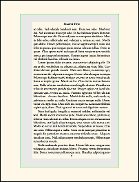Margins are always relative to the Trim Size. If you are using a larger Media Size, the area outside the TrimBox is not counted among the margins; it is simply wasted area. This is illustrated at right, where a smaller Trim Size is floated in a marger Media Size. The margins are shown in gray.
F. If you do not use this command, then margins are pre-configured. The minimum pre-configured margins are 0.5in at top, outside, and bootm, and 0.75in at inside. This meets the requirements of nearly any printing technology, unless your book is extremely thick. If your Trim Size is among the larger ones, then the pre-configured margins are larger than these minimums.
G. If your pages have header/footer, they sit inside the rectangle bounded by the four margins. That is, they do not sit inside the marginal areas.
H. If you ever need to retroactively change margins, see Appendix A.
4.3.1.1. Gutter? Which Gutter?
 Be aware that there is a lot of confusion regarding the word "gutter."
Be aware that there is a lot of confusion regarding the word "gutter."
In the accompanying diagram, the central shaded area is at the spine, where there must be an allowance for the book assembly process. "Gutter" might mean any of A, B, C, or D, depending on who is doing the talking, and which software is in use.
The novel class uses inner margin, also known as spine margin, to mean C. There is no setting for "gutter" as such.
4.3.1.2. Unsafe Zone
Optional global setting, in Preamble:
\SetUnsafeZone{top}{outer}{bottom}{inner}
A. This applies only to interior text block. It does not apply to cover artwork.
B. Printers have a "safe zone," where you are allowed to place text and images. The area outside the safe zone is the "unsafe zone." If anything lies within the unsafe zone, even in part, then the file may print badly, or be rejected by commercial printers.
C. Some printers describe the unsafe zone as "minimum margins." But in most cases, visually appealing margins are wider than the unsafe zone. If so, then there will be an area that lies outside the margins, but inside the safe zone. You may be able to place items there, for special effects.
 D. You do not need to set the unsafe zone. Whether or not you do, and regardless of any values you choose, the result does not affect the finished, final PDF. The zones are not enforced.
D. You do not need to set the unsafe zone. Whether or not you do, and regardless of any values you choose, the result does not affect the finished, final PDF. The zones are not enforced.
E. If you set unsafe zone, then the unsafe area will have a dark gray background, when you use [draft,shademargins] as class options. This allows you to visualize whether anything intrudes into the unsafe zone.
F. Unsafe sone is a sub-area of the margins. That is, the margins include the unsafe zone (if set), and usually some additional area. The accompanying image shows a page with narrow unsafe zone, and wider margins.
4.3.2. Lines Per Page
A. Lines per page refers only to the textblock, and does not include header/footer. Lines are not stretched to fill short pages.
B. By default, a suitable number of lines per page are automatically set, based on other dimensions. You can change the default with this command, in Preamble:
\SetLinesPerPage{integer}
Any non-integer will be rounded. There is no direct command to set the leading, also known as line-to-line spacing or baselineskip. Instead, it is calculated from the textblock height and number of lines.
C. If the calculated leading is less than 1.2x the font size, an error will result. It is difficult for TeX to honor all layout settings with such a small leading, which would normally be unacceptable for fiction in any case. If the calculated leading is at least 1.2x the font size, but less than 1.25x the font size, then the log file will have an Alert message, suggesting that you should consider using fewer lines per page. If the leading exceeds 1.4x the font size, then the log will have an Alert, suggesting more lines per page. The Alert messages are friendly; you do not necessarily have to do anything.
4.3.3. Global Header/Footer Styles
A. Global choice of header/footer style is made in Preamble. Although some individual pages may have no visible header or footer, in reality the header/footer is "still there" in terms of occupying space, but has no content.
B. There are six pre-configured header/footer styles, numbered 1 through 6. These address every style I have seen in fiction. When you choose one of these styles, it reserves space for a header (if any) above the main text, and space for a footer (if any) below the main text. You may not write multi-line headers or footers.
C. The default style is 1, which has header, but no footer. Page numbers appear at the outside. Text (such as author or title) appears centered.
D. Style 0 has no header or footer. This is not used in fiction, but it is available.
E. Throughout the body of your document, you can use local commands to change the content of headers and footers, or blank them. But you may not change the overall header/footer style.
4.3.3.1. List of Header/Footer Style Choices

\SetHeadFootStyle{1}
Only Header.
Page number at outside (left verso, right recto).
Optional emblem adjacent to page number.
Text centered. Default author verso, title recto.
This is the default for the novel document class.

\SetHeadFootStyle{2}
Only Footer.
Page number at outside (left verso, right recto).
Optional emblem adjacent to page number.
\SetHeadFootStyle{3}
Only Footer.
Page number centered.
Disregards emblem, if coded.

\SetHeadFootStyle{4}
Only Header.
Page number at outside (left verso, right recto).
Optional emblem adjacent to page number.
Text towards outside, instead of centered.
Text begins or ends 1em from the emblem.
Default author verso, title recto.

\SetHeadFootStyle{5}
Header and Footer.
Page number centered in footer.
Disregards emblem, if coded.
Text centered in header.
Default author verso, title recto.

\SetHeadFootStyle{6}
Only Header.
Page number at outside (left verso, right recto).
Optional emblem adjacent to page number.
Text towards inside, instead of centered.
Default author verso, title recto.
4.3.3.2. Custom Header/Footer Style
A. Before you think about writing a custom header/footer style, be sure to try the above pre-configured choices. I have looked through a lot of fiction of all kinds. The pre-configured choices include every style I have seen, with the exception of the most highly decorative.
B. If none of the above are satisfactory, then you can write your own headers and footers using the syntax of the fancyhdr package. Strategy:
• In the Preamble, you must use one of the above \SetHeadFootStyle choices to pick a starting point, in terms of whether or not there is a header and/or footer. This is required, so that the layout engine knows how to calculate space. After that, write the fancyhdr code for your custom header/footer in the Preamble. It will over-ride the numerical style in terms of appearance, but occupy the same space.
• You cannot use a header or footer with more than one line. No exceptions.
• See the file novel-HeadFootStyles.sty for how it is done in the pre-configured styles. In the file, the relevant portion follows Look here for the pre-defined styles, for use as models.
• Particularly note that your own style will not automatically use the head font, or add extra space between letters, unless you include the necessary code in your own definition. Do not use the \textls command.
• No cheating! If you choose a numerical style that does not have a header, then do not attempt to write a custom style that includes a header. Same with footer. Also, if you you choose a numerical style with both header and footer, then you cannot only customize one of them; you must customize both.
4.3.4. Tweaking the Global Header/Footer Style
You may customize the appearance, and to some extent the content, of the various parts of the header and footer. These are global settings, in Preamble.
4.3.4.1 Gap Between Header/Footer and Main Text
\SetHeadJump{number}, \SetFootJump{number}
A. These two commands control the separation between the header/footer and the main text. If your style does not have a header and/or footer, then the corresponding setting will be ignored.
B. When you change the "jump," the header or footer remains in the same place. However, the inter-line spacing (baseline skip) of the main text is tweaked to fit, while maintaining the same number of lines per page. Thus, there is no problem with the margins.
C. Note that novel does not use arcane settings such as headsep, footskip, or headheight. Those TeX internals are automatically calculated.
D. The head and/or foot "jump" is a multiple of the normal baseline skip. Each value is a number between 1 and 3, and may be decimal. The jumps do not need to be identical. Default is 1.5 for each. Measurements are from baseline to baseline.

E. The distance from the topmost baseline (whether header or main text), to the top margin, is fixed at 1 normal em. This provides adequate clearance for capital letters with upper diacritical marks. The distance from the lowermost baseline (whether main text or footer), to the lower margin, is fixed at 0.3 normal em. This provides adequate clearance for descenders.
F. When in draft mode, the shademargins option shades the margins in medium gray, and shades the area reserved for header/footer in light gray. This was used in the above image.
G. The head/foot jumps are global, and cannot be changed later in the document.
4.3.4.2. \SetHeadFont[features]{font}
A. The novel pre-configured header/footer styles automatically use the head font, which is pre-defined as a variation of the parent font: scaled to slightly smaller size, using lining numbers (if available), and small caps (if available). This is a general-purpose style, widely used in fiction. It may not be the most artistic, but it is unlikely to cause visual distraction:
B. If you would like to use something else as head font, use \SetHeadFont to define it by its font name and Open Type features.
In the simplest case, you merely pick an Open Type (or TrueType) font, and novel automatically adds some Open Type features, including small caps:
\SetHeadFont{Roboto}
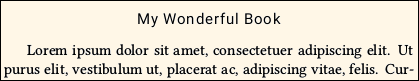
C. The above example is not best if your style has header text, because the head font is too pronounced, compared to the main text. A more complex example uses fontspec syntax to customize the Open Type Features:
\SetHeadFont[Scale=0.75,Numbers=Lining,%
Letters=SmallCaps,%
Letters=UppercaseSmallCaps,%
ItalicFont=Montserrat-ExtraLightItalic.otf]%
{Montserrat-ExtraLight.otf}
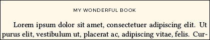
D. If you do not want SmallCaps to be automatically added, use Letters=ResetAll as a feature:
\SetHeadFont[Letters=ResetAll]{\parentfontname}
4.3.4.3. \SetLooseHead{number}
A. This command applies to both headers and footers, but its effect is most noticeable when the style has header text.
B. For best appearance of header text, its characters should be adjusted with a little extra space (tracking) between them, so that they are more easily distinguished from the main text. This is especially true if you are using small caps.

C. The argument of \SetLooseHead is a number from 0 to 200. At 0 there is no extra space between the letters. Values from 50 (default) to 100 are most useful.
D. Page number tracking will be clamped at a maximum of 50, even when a larger (looser) tracking is applied to text.
E. Do not use the \textls command. It is disabled in novel.
4.3.4.4. \SetPageNumberStyle{code using \thepage}
A. By default, the page number is styled using head font, but without small caps (so that page roman xiv does not show as XIV).
B. If you wish to change how the page number is displayed, you can style it using \SetPageNumber with an argument that uses \thepage. Examples:
\SetPageNumberStyle{\textit{\thepage}} % Page number in italics.
\SetPageNumberStyle{-- \thepage{} --} % En-dashes, head/foot style 3 or 5.
C. The head font is applied automatically, unless you over-ride it in your code. For example, suppose you would like the page numbers (but not anything else in header/footer) to be in a different font, which you have defined in Preamble as \yourpnfont using \NewFontFamily or \NewFontFace. Then you could write:
\SetPageNumberStyle{{\yourpnfont\thepage}} % note double braces
D. Avoid over-doing it. If you are tempted to use a macro that counts page numbers backwards, or writes them upside-down, be aware that your print service will likely reject it. Anyway, it has already been done in fiction.
4.3.4.5. \SetEmblems{verso}{recto}
A. If the head/foot style supports it, you may place an "emblem" that appears at a fixed distance (2.5em) from the outer margin. Thus, it will appear to the right of the page number on verso pages, and to the left of the page number on recto pages. In the case of style 4, there will be a clearance of 1em between the emblem and the header text.
B. Emblems are minor decorations that should not distract the eye from the main text. If the style supports emblems but you do not set them, then no emblems are placed.
C.  • Most books do not use an emblem. When they do, it is typically a vertical bar, or a bullet, like this:
• Most books do not use an emblem. When they do, it is typically a vertical bar, or a bullet, like this:
\SetHeadFootStyle{4}
\SetEmblems{|}{|}
D. The font used for emblems will be the same as the head font, unless you specifically code the emblem to use a different font, or unless you use one of the built-in \decoglyph codes.
E. The verso and recto emblems may be different. If you set one side, you must also set the other. Blanks are allowed.
F.  • Emblems may be styled. For example, the header emblems shown at right were produced using the code below. Dingbats from the NovelDeco font were specified, adjusted for size and position.
• Emblems may be styled. For example, the header emblems shown at right were produced using the code below. Dingbats from the NovelDeco font were specified, adjusted for size and position.
\SetEmblems{\charscale{1.1}{\raisebox{-0.05em}{\decoglyph{l9825}}}}%
{\charscale{1.1}{\raisebox{-0.05em}{\decoglyph{l9826}}}}
G. You may also use images, or combined images and text. If you use images, they must be at the exact resolution required by your print service (usually 300dpi for gray, 600dpi for b/w), and at exact size without scaling. The \InlineImage command must be used. See novel's image documentation details. You may find that a vertical offset of \nfs (normal font size) is useful, as this will place the top of the emblem image at the top margin.
\SetHeadFootStyle{4}
\SetEmblems{\InlineImage[0pt,b]{spy.png}}%
{\InlineImage[0pt,b]{spy.png}}
H. At the small size of an emblem, it is difficult to use detailed artwork. A black/white image at 600dpi will print similarly to a font dingbat. Grayscale at 300dpi will probably not be satisfactory unless the emblem is a single shade of gray. For the above example, a character from the Fontawesome font was converted to a png image at mid-gray. It is less distracting than a black character from the font, but hard to discern. Note that "gray ink" will not be used for your book.
Ask your print service whether the presence of a small image in each page header will affect production costs. Probably not, but if there is a different per-page charge when pages have an image... Oops!
I. The layout calculation does not care whether emblems intrude into the margins. You will have to inspect your PDF to determine whether a header emblem is too tall, or a footer emblem too deep, for the allowed top and bottom margin clearance. Class option shademargins (in draft mode only) is helpful.
4.3.4.6. Setting and Changing Header Text
A. If you are using head/foot style 1, 4, 5, or 6, it has text in the header. By default, that text is the author on verso pages, the title on recto pages. That is an accepted design for fiction, but it is not always the appropriate thing to do.
For example, in exotic cases you may use something such as \SetTitle{ISBN9780123456789TEXTBLOCK}, instead of the book's actual title, if required for the printer's database. Obviously you do not want that to appear in page headings!
B. Header text may be changed to whatever you wish (as long as it fits):
\SetVersoHeadText{text}
\SetRectoHeadText{text}
C. These commands can be used both in Preamble and in the document body. Whatever you set will take effect immediately (for pages that have header text) and remain in effect until changed by repeating these commands. For example, you might want to do that for a collection of short stories, or if your book has a Preface.
D. You may use ordinary LaTeX styling commands for the text:
\SetRectoHeadText{The \emph{Bad Boy} Chronicles}
You may also do more complicated things, such as setting certain words in a font other than the head font. This is not advised, because you do not want to distract the reader from the main text; but it can be done.
E. Avoid bold. Avoid underline. Really. Don't do it. No, no, no!
4.3.5. Header/Footer Exceptional Pages
There are a number of cases where a specific page must have a header/footer style that appears to differ from the global style. The key words are "appears to differ." The global header/footer is always there, in terms of vertical space. But either or both may be blank, or have unusual content, on certain pages.
4.3.5.1. \thispagestyle{choice}
A. Command \thispagestyle is used in the document body, not Preamble. It changes the appearance of header/footer, only for the page on which the command appears. Ideally the command is used immediately after \clearpage or \cleartorecto, so that the applicable page is certain.
B. The command will be effective if used anywhere on a page, as long as you are certain which page is current. So, if you know that a particular portion of text runs exactly two pages before \clearpage, you can use \thispagestyle at the beginning and end of the text, so that it applies to both pages.
C. The choice of page style is not one of the numbered global head/foot styles. Instead, choose from the following list. These are more versatile than the choices available in other TeX document classes. They are: fancy, empty, footer, forcenumber, dropfoliobeneath, and dropfolioinside.
\thispagestyle{fancy}
This applies the default (fancy) page style, so it is not normally needed. Only use this command to over-ride some other \thispagestyle command, or to over-ride the \SetChapterStartStyle setting.
\thispagestyle{empty}
Header and footer are both blank.
\thispagestyle{footer}
Ignored if the style has no footer. If it does, then the usual footer appears. Note that this does not cause a page number to appear, when the style has no footer. Header, if any, is blank.
\thispagestyle{forcenumber}
If the style has a footer, then it appears as usual, and the header (if any) is blank. If the style has a header but no footer, then the outside portion of the header (which is presumed to contain the page number and emblem) appears, but the text portion of the header is blank.
• The forcenumber choice is non-standard. Use it only if you must have a page number, and no other choice is suitable.
\thispagestyle{dropfoliobeneath}
In this context, "folio" means page number. The header (if any) is blank. If there is a footer, then it appears as usual. But if there is no footer, this command creates a one-page fake footer, which contains the centered page number. The fake footer is located where the next line of text would be, if the textblock were one line longer than its actual value.
• For the fake footer to be acceptable in print, the bottom margin must be wider than the minimum amount required by your print service. For example, suppose that the minimum bottom margin is 0.5in, but you set the bottom margin to 0.75in. That gives you 0.25in wiggle room, into which the fake footer will probably fit, because typical baselineskip is 0.2in to 0.25in.
• The document class does not know whether or not you have extra space available in the bottom margin. It is your responsibility to know.
\thispagestyle{dropfolioinside}
In this context, "folio" means page number. The header (if any) is blank. If there is a footer, then it appears as usual. But if there is no footer, this commands temporarily reduces the number of lines per page by one. At the bottom, where the last line of text would normally be, the page number is centered. Thus, there is no intrusion into the bottom margin.
• This command may only be used following \clearpage. Thus, it may be used at the start of new chapters, or on pages that do not flow from a previous page. If you use it elsewhere, the print will have incorrect layout, but there will be no error or warning, since the compiler is not sure what you are trying to do.
• If used on a page with ChapterStart environment, you must place \thispagestyle{dropfolioinside} before \begin{ChapterStart}. Reason: The ChapterStart block has a disposable blank line at its top, which is removed when dropfolioinside is used (instead of removing a line from the following text block).
• With this style, the specified height of ChapterStart must be 4 or more. This command will reduce it to 3 or more.
4.3.5.2. \SetChapterStartStyle{choice}
A. The first page of each chapter, or of a section that is styled like a chapter, is usually an exception to the global page style.
B. In Preamble, \SetChapterStartStyle sets the default thispagestyle that will be applied on pages with the ChapterStart environment. You may still over-ride locally.
B. The choices are the same as available for \thispagestyle. Default is footer.
5. Chapters and Chapter-Like Sections
This section describes how chapters are designed. The novel class has commands specifically for this purpose. Do not use the ordinary TeX \chapter command, or any other TeX partitioning such as \section.
This also applies to content that is styled like a chapter, regardless of what it is called or where it appears. For example, if your book's front matter has a Preface, it is probably styled like a chapter. Something such as Acknowledgements might or might not be styled like a chapter, depending on length. Advice can be found in section 8 of this documentation, regarding Book Design.
5.1. Starting a Chapter
Unlike most other TeX document classes, novel does not honor the \chapter command. And, novel does not automatically start chapters on a new page.
5.1.1. \clearpage or \cleartorecto
A. Unless your chapters run continuously without page break, begin a new chapter using \clearpage or \cleartorecto. The first of these provides a new page, which will be verso or recto, without skipping a page. The second forces the chapter to begin on a recto page, if necessary inserting a blank verso.
B. The common modern practice in fiction is to allow new chapters to begin either verso or recto, once you get past Chapter One. The only recent book I've read (from a major publisher), where chapters always started recto, had about 20 blank pages throughout the story. I believe the reason was to pad the book, so that it looked bigger. If you are using an American P.O.D. service, such padding might knock about $0.10 (estimated) from your profit, for each copy sold. So it's up to you to think about the tradeoffs between style, profit per book, and expected sales.
C. Prologue (if any), Chapter One, Epilogue (if any), and other special sections always begin recto.
D. Don't worry about using \clearpage or \cleartorecto twice. The compiler is smart enough to understand that you only meant to do it once, as long as there is no other code in between.
5.1.2. ChapterStart Environment
A. The ChapterStart environment creates a block of white space, with a fixed height (number of normal lines). If you do not place much inside it, or even if you place nothing inside it, the space is the same.
B. If you place too much inside it, the space does not grow. Instead, the excess material overflows the bottom of the environment. There, the excess will underlie the main text. This is usually undesirable, but can sometimes be used for special effects.
5.1.2.1. \SetChapterStartStyle{choice}
A. This command may be used in Preamble. Its default setting is footer.
B. In most cases, a ChapterStart page has a head/foot style that differs from the global default. Instead of writing \thispagestyle commands for every chapter, use \SetChapterStartStyle to pick a style that will be applied wherever ChapterStart is used. The available choices are: fancy, footer, empty, dropfoliobeneath, dropfolioinside, forcenumber.
C. Regardless of this setting, you can over-ride the style on a per-chapter basis, via an optional argument at the beginning of the ChapterStart environment.
5.1.2.2. \SetChapterStartHeight{lines}
A. This command may be used in Preamble. Its default setting is 10.
B. This command sets the default height of the ChapterStart environment, measured as an integer number of normal lines. The smallest value is 3.
C. However, if the chapter also uses dropfolioinside, then the smallest value is 4, because one line is lost when processing the dropfolioinside command.
D. Regardless of this setting, you can over-ride the height on a per-chapter basis, via an optional argument at the beginning of the ChapterStart environment.
5.1.2.3. \begin{ChapterStart}[lines][style]
A. The ChapterStart environment takes up to two optional arguments.
B. The first optional argument over-rides the default height of ChapterStart, for just this chapter. Its smallest value is 3, except that its smalles value is 4 when dropfolioinside is used.
C. The second optional argument over-rides the header/footer style, for just this chapter. If you use the second optional argument, it must be one of the allowed choices for \thispagestyle, namely: fancy, footer, empty, dropfoliobeneath, dropfolioinside, forcenumber.
D. To use the second argument without the first, place an asterisk: [*][style]
E. Whatever you place within ChapterStart will probably be higher on the page than you would like. To move it down, use the \vspace*{length} command (with asterisk) immediately after the environment begins.
As with all environments, this one must be closed using \end{ChapterStart}.
5.1.3. Chapter Title, Subtitle, Deco, Epigraph
You can put anything you like within ChapterStart, including ordinary text and even images. All ChapterStart does is reserve a fixed space. However, there are special commands that make it easy to place a chapter title, chapter subtitle, and decorative element.
5.1.3.1. \SetChapterFont[features]{font}
5.1.3.1 \SetSubchFont[features]{font}
A. These global commands may be used in Preamble. They create font commands \chapterfont and \subchfont that may be used to style text anywhere in your document, like this:
{\chapterfont text}
{\subchfont text}
B. The chapter font is automatically applied to text in \ChapterTitle commands.
C. The subch font is automatically applied to text in chapter subtitles (see below).
D. These fonts are pre-configured, based on the document's parent font. They have TeX ligatures and kerning, and use Lining numbers instead of Old Style. The chapter font is scaled at 1.6, and the subch font is scaled at 1.2, compared to normal font size. Ordinary (common) ligatures are not used, because such ligatures are best avoided with enlarged text.
E. If you don't like the pre-configured fonts, then you may specify your own, using fontspec syntax. Here is what the default codes look like:
\SetChapterFont[Numbers=Lining,Scale=1.6]{\parentfont}
\SetSubchFont[Numbers=Lining,Scale=1.2]{\parentfont}
5.1.3.2. \ChapterTitle[alignment]{text}
5.1.3.2. \ChapterSubtitle[alignment]{text}
A. Text within \ChapterTitle is styled using the chapter font, and text within \ChapterSubtitle is automatically styled using the subch font.
B. You can locally over-ride these fonts, using font commands in the text.
C. The optional alignment controls how the element is horizontally placed. Choices are l, c, r (left, center, right). Default c.
D. You don't have to use either of these commands. Or, you can use either of them more than once! All these commands do is style the text. They do not have any meaning that is controlled by other macros.
E. The styled text is limited to one line (no wrap) per command. If you have a long chapter title or subtitle, then break it into pieces of manageable size, by repeating the command(s). Example:
\begin{ChapterStart}
\vspace{2\nbs}
\ChapterTitle[l]{XV}
\vspace{\nbs}
\ChapterSubtitle[l]{In which Lord Withens, returned from his quest,}
\ChapterSubtitle[l]{encounters an Army of Gnomes at his castle gate.}
\end{\ChapterStart}
Following the dark and stormy night, it was a bright and sunny day. That did nothing to improve the demeanor of Lord Withens, who was still soaked from riding through the rain. ...\par
5.1.3.3. \ChapterDeco[alignment scale]{text}
A. This command is simply a way for you to remember that its content is neither the title nor subtitle of the chapter. Typical usage is to place a decorative element.
B. There is a single command option, which is parsed for a letter and/or a number, with our without comma or space. The alignment letter is one of l, c, r (left, center, right). Default c. The numerical scale (may be decimal) changes the size of the text, and tweaks its vertical position. Default scale is 1.
C. For your convenience, the NovelDeco font (included with novel has a few possibilities. they are accessed via the \decoglyph command. The list of available decorations, and codes to access them, are in the file NovelDeco-glyphs.pdf, which is in the extras folder within this documentation. Note that the decorations can be placed anywhere in your document, not just in \ChapterDeco.
D. 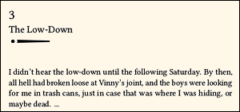Most of the \decoglyph decorations look best when the optional scale is near 4. Example:
\begin{ChapterStart}[8]
\vspace{2\nbs}
\ChapterTitle[l]{3}
\ChapterSubtitle[l]{The Low-Down}
\ChapterDeco[l4]{\decoglyph{n9591}\decoglyph{r9656}}
\end{ChapterStart}
I didn't hear the low-down until the following Saturday. By then, all hell had broken loose at Vinny's joint, and the boys were looking for me in trash cans, just in case that was where I was hiding, or maybe dead. ...\par
5.1.3.4. Chapter Epigraph
If you would like to place an Epigraph within ChapterStart, there is no special command for that purpose. You do it the same way you would do it anywhere else: Use the adjustwidth environment to limit the text width. You may use the parascale environment to scale the block of text, without disturbing the following line grid, as long as you are within ChapterStart. Example:
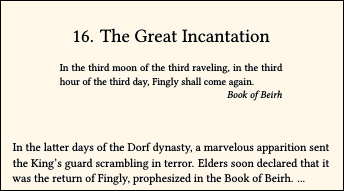
\begin{ChapterStart}
\vspace{2\nbs}
\ChapterTitle{16. The Great Incantation}
\vspace{\nbs}
\begin{adjustwidth}{4em}{4em}
\begin{parascale}[0.88]
In the third moon of the third raveling, in the third hour of the third day, Fingly shall come again.\par
\stake\hfill \textit{Book of Beirh}\par
\end{parascale}
\end{adjustwidth}
\end{ChapterStart}
In the latter days of the Dorf dynasty, a marvelous apparition sent the King's guard scrambling in terror. Elders soon declared that it was the return of Fingly, prophesized in the Book of Beirh. ...\par
5.1.4. ChapterStart With Image
You can use an image in chapter titles. If you place an image, use one of the image commands defined by novel elsewhere in the documentation. Any other method is likely to push the following text off-grid.
Be sure that you are licensed to use the image. Many clipart catalogs "for personal use only," prohibit usage in commercial books. One possible source is openclipart.org (note the .org).
5.1.4.1. Text Over Image
You may position text over an image. It is best to use black text, or grayscale text that is much darker than the underlying image. Results are uncertain if you try to place light text over a dark image, because it depends on the print technology, which is not within your control.
Example, where the command \unifrac calls for the font UnifrakturMaguntia.ttf. Note that the font command is outside \charscale:
\begin{ChapterStart}
\BlockImage{sword.png} % centered by default
{\unifrak\centering\charscale[3,0pt,4\nbs]{35}\par}
\end{ChapterStart}
5.1.4.2. Text Built Into Image
If the text is not ordinary black, or not much darker than the background image, then it is better to include the text as part of the raster image. The reason is that "white ink" will not be used for your book. Also, you cannot use image transparency.
Although light text over a dark image may appear as expected in PDF, and print that way on some printers, there are many exceptions. If in doubt, ask your print service. In this example, the number is built into the image itself:

\begin{ChapterStart}
\BlockImage[l]{smfingerprint8.png}
\end{ChapterStart}
5.2. Continuously Running Chapters
Standard book design calls for each chapter to begin on a new page. However, some books are designed with numerous short chapters that run continously, so that chapters may start anywhere on a page. There are two ways to handle this in novel, or you can simply design your own method.
5.2.1. Reduced-Height ChapterStart
A. Since the ChapterStart environment does not automatically begin a new page, you can use it for continuously running chapters. In Preamble, set a short height, such as \SetChapterStartHeight{4}. Also use \SetChapterStartStyle{fancy} so that headers don't disappear.
B. Throughout the book, you can make local adjustments to the ChapterStart height, so that they don't fall at an inconvenient location (such as at the bottom of a page). Yes, I have seen this done in published works. If a particular chapter is sufficiently important that it deserves a page break, or a lot more space, you can do that easily.
5.2.2. \QuickChapter[linelength]{chapter title}
A. The \QuickChapter command inserts two blank lines. In the gap, the chapter title is left-justified using subch font (not chapter font). It is slightly raised from the normal baseline, because this looks better; but the following text is back on-grid. By default, the start of the following text will be un-indented.
B. If the optional linelength is provided, then a dash will be written after the title, at the position and thickness typical of the em dash in subch font. If linelength is specified in units of length, then that will be the length of the line. But if linelength is an asterisk, then the line will fill to the right margin.
C. This command is probably too obtrusive for mere scene changes within a chapter.
Example:
Then he looked at me with a sneer, and barked, “You better haul your can over to Vinny's joint, before the Boss finds out.”\par
\QuickChapter[3em]{16. At Vinny’s}
So I took his advice, and hauled my can over to Vinny’s. It was everything I had expected, and worse.\par
The bouncer wasn't the biggest one I’d ever seen, but he was the ugliest. ...

5.3. Scene Breaks
There are several commands dedicated to the purpose of scene breaks.
\scenebreak inserts a one-line blank skip. The following line of text is not indented.
\sceneline inserts a one-line skip, containing a short centered line. The following line of text is not indented.
\scenestars inserts a one-line skip, containing three spaced, centered asterisks. The following line of text is not indented.
Examples:

\noindent It was a dark and stormy night.\par
Lord Withens, the last of his line, hurried through the gloom to Castle McWhistle, where Lady McWhistle awaited.\par
\scenebreak
Well, maybe it was not very dark.\par
But to Lord Withens, it seemed dark enough. Or rather, he hoped it was dark enough. Lord McWhistle was suspicious.\par
\sceneline
Actually, it was not all that stormy, either. But the Withens clan never tolerated drizzle, much less a storm.\par
Who could blame them? It's not like they lived in Italy.\par
\scenestars
Ah, such ill fortune haunted the Withens!\par
Unfortunately, novelists of that era had so little to write about, or they would have chosen another family to pursue.\par
If you are using \scenebreak and the gap occurs at the very bottom or top of a page, then manually substitute \sceneline or \scenestars there. This is a standard way to indicate that the gap is intentional. The substitution is not automatic.
5.3.1. \SetScenebreakIndent{true or false}
This global command may only be used in the Preamble. Default is false.
Normally, text begins without a paragraph indent, after each scene break. This is standard in fiction. If you prefer that each new scene begins indented, use this command. It works only with \scenebreak, \sceneline, and \scenestars.
5.4. Automatic Chapter Numbering
By popular demand, here is how to add automatic chapter numbering:
A. Counter novelcn is pre-defined, and initialized to 1 (not zero). If you simply wish to print its value as a number, then increment the count, do something like this:
\ChapterTitle{Chapter \the\value{novelcn}\stepcounter{novelcn}}
That will print Chapter 1, Chapter 2, and so forth. Of course, only do this for real, numbered chapters, not for "chapter-like" sections. If your book has several parts, and each part re-sets its own chapter count, use \setcounter{novelcn}{1} prior to the first chapter in each part.
B. If you would like the number to be spelled out, as in Chapter One, Chapter Two, and so forth, then try the fmtcount package. It can also do ordinals such as First Chapter, Second Chapter. See the fmtcount package documentation for details.
C. If your document's language is other than English, use \setdefaultlanguage before you load the fmtcount package. If you do it later, then positioning will be incorrect.
D. Caution: At the time I write this, fmtcount does not detect luatex. Without some hacking, it incorrectly positions its text, when used with novel. The maintainer has been informed. Until such time as fmtcount is fixed, here is the hack. In Preamble:
% if necessary, use \setdefaultlanguage first.
\xetextrue % remove this command when fmtcount is fixed
\RequirePackage{fmtcount}
\xetexfalse % remove this command when fmtcount is fixed
Example usage in chapter titles:
\ChapterTitle{\Ordinalstring{novelcn}\stepcounter{novelcn} Robbery} %1
\ChapterTitle{\Ordinalstring{novelcn}\stepcounter{novelcn} Robbery} %2
\ChapterTitle{\Ordinalstring{novelcn}\stepcounter{novelcn} Robbery} %3
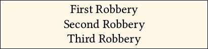
5.5. First Lines and Drop Caps
The first line of chapter text is often treated with a style of its own. Often, all or part of the first line is in small caps. The first letter may be larger than the rest. Or, the first letter may occupy several lines (sometimes using an image). This last effect is known as drop cap (French lettrine).
5.5.1. First Character Special
Use the \charscale command to size the first letter (or more than one letter) so that it stands above the remainder of the line. Remember that you will see a capital letter standing next to lowercase letters, so it will appear taller. You may also use a font command. Example, where \NewFontFace\alexbrush{AlexBrush-Regular.ttf} appears in Preamble:
\noindent\charscale[1.6]{\alexbrush I}\hspace{0.2em}t was a dark and stormy night. Well, it really wasn't all that dark, seeing as how this story is set in Las Vegas.
5.5.2. First Line Small Caps
A. If you want to place a portion of the first line in small caps, then simply do it using \textsc{text}. This effect can also continue to additional lines. That is, it does not automatically stop at the end of the first line.
B. The magaz package is pre-loaded in novel. It provides the \FirstLine command, which takes the entire first paragraph as its argument. Place \noindent inside. You may also style the first letter (or more than one) as described above; the styled letter appears inside the \FirstLine command. Example:
\FirstLine{\noindent\charscale[1.6]{\alexbrush I}\hspace{0.2em}t was a dark and stormy night. Well, it really wasn't all that dark, seeing as how this story is set in Las Vegas.}
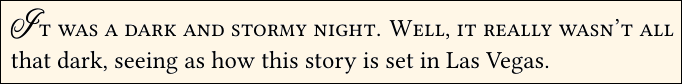
5.5.3. Drop Caps
A. The drop cap is an enlarged letter (or image) at the beginning of chapter text, with the first few lines of text wrapped around it:
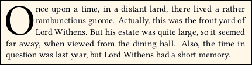
B. Works of popular fiction rarely use drop caps. Instead, having a special first character (section 5.5.1) is more common, as it presents fewer layout problems, and is less distracting.
C. The \dropcap command is native to novel. You may also load and use lettrine. An extensive discussion of drop caps is in Appendix F.
D. If you expect to use the \Rework commands, be aware that you may need to manually adjust drop caps, because the rework algorithm is not fully effective there.
6. Text Sizes and Styling
This section describes how to change the size of text, how to style text (such as italics), and how to move it around. It also describes some miscellaneous commands that are intended to modify text.
A. Information about how to choose the global, main text point size is described in section 4.2.1.2. General information about choosing fonts and font features is in Appendix C and Appendix E. Styles particularly used at chapter openings are described in section 5.
B. There is no direct setting for normal baselineskip; it is automatically calculated from the size of the textblock (using Trim Size, Margins, and header/footer layouts) and lines per page.
C. The included microtype package is pre-configured, using these settings:
\microtypesetup{config=novel-microtype,final,stretch=20,shrink=20}
File novel-microtype.cfg uses settings typical of the kind of book-weight font that you are likely to use. The stretch and shrink factors are moderate. Calculation is always final, so that you see the same effect whether or not you use the draft class option. If you wish to change any of these, see the microtype package documentation. Note that since you are compiling with LuaLaTeX, some features of microtype may not be available.
6.1. Text Sizes
Be sure to read through this. In novel, standard TeX font size commands are disabled. There are new commands that address the limited needs for font sizing, in the context of fiction. These new commands are primarily for local adjustments of a few characters, or for display pages that are outside the main flow of text.
6.1.1. Surprise! Traditional TeX Font Size Commands Are Disabled.
A. Standard LaTeX font size commands, such as \small and \LARGE, are disabled in novel. If you use them, they will be ignored, and the affected text will be printed without modification. This is by intent, for the purpose of maintaining the baseline grid.
B. The one exception is that footnotes will appear with smaller than normal size and skip. But this is done automatically. You cannot manipulate it with a size command.
C. Use novel's own commands for manipulating font size. The correct command depends on the quantity of text involved.
6.1.2. \charscale[scale,hoffset,voffset]{text, but not image} and starred
A. The contents of \charscale{} occupy no vertical space. Thus, scaled text does not push baselines apart. Excessive scale may cause characters to overlap; in some cases this is a desirable special effect.
B. The optional argument has up to three comma-separated components. The first is a number, which scales the text relative to its natural size. If the text was already scaled by some other operation (such as using fontspec to define the font with Scale feature), then the effect is cumulative.
Do not use a scale close to zero, or negative. The result is unpredictable.
C. \charscale may be used for a short amount of text, where there is no line break, and no wrap. The command will throw an error if the included text has \\ or \par or any other method that breaks the line.
Excessive text will not wrap. It will overflow into the right margin.
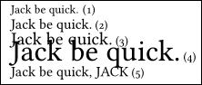
Jack be quick. (1)\par
\charscale[1.2]{Jack be quick.} (2)\par
\charscale[1.5]{Jack be quick.} (3)\par
\charscale[2.5]{Jack be quick.} (4)\par
\charscale[1.2]{Jack be quick, JACK} (5)\par
In the above example, \par is not contained within \charscale. Line 4 is so enarged that its ascenders and descenders overlap other text.
D. The second optional component, if use, is horizontal offset. The third optional component, if used, is vertical offset. Offsets are lengths, measured in units such as em or \nbs.
E. In its starred form, the contents of \charscale*{} occupy neither vertical nor horizontal space.
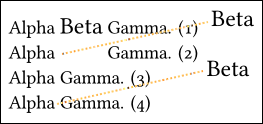
Alpha \charscale[1.25]{Beta} Gamma. (1)\par
Alpha \charscale[1.25,8em,1.3\nbs]{Beta} Gamma. (2)\par
Alpha Gamma. (3)\par
Alpha\charscale*[1.25,8em,1.3\nbs]{Beta} Gamma. (4)\par
In line 1, Beta is enlarged, but not offset. It occupies slightly more width than it would have occupied unscaled. In line 2, Beta has been offset. Since the unstarred \charscale was used, the horizontal space is still there.
Line 3 has no Beta. Line 4 uses the starred \charscale* to offset Beta, but no width is left behind. Note that the space between Alpha and Gamma is an ordinary inter-word space, because there is a space following the command.
F. \charscale is very effective on display pages, where you can scale and move text however you wish. The starred version is especially useful, since back-to-back \charscale* will place text from a single vantage point.
G. In main text, the most practical application of \charscale is to enlarge the first character of chapter text. See section 5.5.1. Otherwise, the command is rarely used, mostly for local correction of characters that need some size adjustment.
H. \charscale does not commute with some other TeX commands. That is, the results of \charscale{\othercommand{text}} and \othercommand{\charscale{text}} may differ.
6.1.3. \begin{parascale}[scale] ... \end{parascale}
A. The parascale environment is used on a paragraph basis. More than one paragraph may be included. The scale is applied to the font size and to the baselineskip within.
B. Note that the scale is an optional argument.
C. Since the text within parascale generally will not occupy an integral number of normal baseline skips, the following text will be off-grid. This may not be a problem, if parascale is used on a display page. It may not be a problem, if parascale is used inside ChapterStart. But it is certainly a problem if parascale is used within main text.
D. To restore the main line grid, when parascale is used within main text, wrap parascale in the linegap environment.
The line gap is not automatic; you must compile, look at the result of parascale, then adjust the gap and re-compile. If your text is on more than one page, then you will need to use more than one linegap.
Lord Withens sneaked out the door of the veranda, and hastily opened the letter. In it was a message that curled his jodphurs:\par
\begin{linegap}{2} % Not always the same as the parascale line count.
\begin{parascale}[0.87]
\vspace{0.18\nbs}
We know where youse been goin them dark and stormy nights. We knows what you been doin out there. We got yer number, Jack.\par
\end{parascale}
\end{linegap}
Even after his jodphurs had finally uncurled, Lord Withens could not master his rage. ``My name's not Jack,'' he mumbled.\par
6.1.4. Open Type Scale (fontspec)
A. If you will be using a font in a way that it will always be at a size different from the normal font size, you may use the Scale feature when you first define the font. This is defined by the fontspec package, which is automatically loaded with novel. Example:
\NewFontFamily\minifont[Scale=0.75,Numbers=Lining]{\parentfont}
B. The scaled font can be used anywhere. It is not limited to a single line, and it will maintain the line grid at scales not exceeding 1.
C. Scaled text may disturb the line grid, if its scale is more than 1.
6.2. General Styling
Many of these commands are directly from LaTeX, and are mentioned here because they are frequently used. Other commands are specific to novel.
6.2.1. Italics and Emphasis
A. \itshape{text, may cross paragraphs} is a general-purpose command for italics.
B. \textit{text} will not cross paragraphs.
C. \emph{text} changes regular text to italics, and italic text to regular. You may nest \emph commands. Many writers opine that this is the preferred way to specify italics. It cannot cross paragraphs.
D. If the italicized text leans too far into the following space, try adding \/ (back and forward slashes) just before closing the braces.
E. Italics are not faked (such as by slanting). If the font does not have an italic font file, then regular text will appear. You may use fontspec syntax to substitute a different italic font, if necessary. See Appendix E.1.1 file name combinations.
6.2.2. Bold, Semibold, etc.
A. \bfshape{text, may cross paragraphs} is a general-purpose command for bold.
B. \textbf{text} will not cross paragraphs.
C. The default main font in novel is Libertinus Serif, which has both bold and semibold weights. The semicold weight is pre-configured to substitute for bold.
D. If you use a different font, and it has an alternative to bold weight, see Appendix E.1.1 file name combinations for how to configure the choice. Bold is not faked by thickening.
E. Bold is rare in fiction. It might be the case that this weight is useful for titles, but you ought to consider a fancy-looking font for that purpose, rather than mere Bold. Or, make the letters big and bold, but balance the effect by using gray.
6.2.3. Underlining
Underlining is inappropriate for fiction. Don't do it. Besides, there are some issues regarding line grid and appearance, which are not a problem in academic works, but are noticeable in fiction.
If you are using a line for its graphic effect, the \bigemdash command might be helpful.
6.2.4. Small Caps and Acronyms
A. \scshape{text, may cross paragraphs} is a general-purpose command for converting lowercase to small caps.
B. \textsc{text} does not cross paragraphs. Alias: \smcp{text}.
C. \allsmcp{text} places both uppercase and lowercase letters in small caps. It does not cross paragraphs.
D. Small caps are taken from the font's smcp Open Type feature. If the font is not Open Type, or does not have this feature, then small caps will not be faked. Command \allsmcp also uses feature c2sc if it is available; otherwise it converts letters to lowercase, then applies smcp.
E. If you require small caps, but your font does not have them, you can fake them by scaling uppercase. But this is usually unattractive. A better method is described in the fontspec package documentation: You may appoint a different font that will provide small caps.
F. If you insist on using old-fashioned TeX fonts, which do not have the smcp Open Type feature, then you may need to write this code in the Preamble:
\let\smcp\oldscshape\relax
\let\textsc\oldscshape\relax
\let\scshape\oldscshape\relax
The above code sends you in a time machine back to the Twentieth Century.
G. \acronym{text} is special to novel. If the NovelDeco font is installed, uppercase letters in the text will be converted to "mid-size capitals," and lowercase will remain lowercase, but with ascenders slightly reduced. The purpose of this command is so that acronyms such as NASA and NATO blend well with surrounding text. I have found that whereas ordinary uppercase is too conspicuous, small caps also looks wrong. Example:

The NATO alliance...\par
The \acronym{NATO} alliance...\par
The \allsmcp{NATO} alliance...\par
Whether or not to use the \acronym command, is up to you. Since its letters are drawn from the NovelDeco font, rather than your main font, there may be some stylistic differences if your parent font is not Libertinus Serif.
6.2.5. Local Tracking Adjustment
A. Tracking refers to how tight or loose is the space between adjacent letters. This is a property of the font itself, and is automatically tweaked by the included microtype package. Do not confuse tracking with inter-word spacing, which is more widely adjusted during paragraph layout calculations.
B. If only two adjacent letters are involved, use the \kern or \hspace command. The following examples have the same effect. Note that there is no added space character, and that the units of length are em:
I\kern-.05emt was a dark and stormy night.
I\hspace{-.05em}t was a dark and stormy night.
C. Loose tracking is often used in page header text. In novel, this is addressed by a special command. See section 4.3.4.3.
D. Do not use the \textls command. It will be ignored, and its contents will be rendered with ordinary tracking.
E. The included fontspec package allows you to globally set the tracking of an Open Type font, or locally change its tracking, using the LetterSpace feature. It is unlikely that you will need this capability. If you do, see fontspec package documentation 6.8.
F. There are two novel-specific commands that are "for emergency use only." \squeeze{text} narrows the text by one percent. \crush{text} narrows the text by two percent.
These commands use microtype to temporarily apply a horizontal scale to the letters. Inter-word spacing is not necessarily changed (it can even grow larger), because spacing is calculated during paragraph layout. The enclosed text may span paragraphs.
The commands do not compound. That is, placing one crush inside another will not narrow the text by four percent.
The only application for these commands is when a paragraph does not quite fit where you would like it to be. For example: Perhaps one short word, or part of a word, dangles to an extra line. Try \squeeze first, then \crush, for all or most of the paragraph. These do not always produce a useful effect, since the actual paragraph layout depends on other factors. But if you are lucky, then the paragraph re-flows to a better layout.
If the commands do not help, then be sure to remove them, or the typography will be worse than it was before!
6.2.6. Local Font Selection
A. The following font commands are pre-defined in novel: \rmfamily (alias \mainfont) \sffamily \ttfamily \chapterfont \subchfont \headfont \decofont \decodropcapfont.
B. Although most of the pre-defined font commands are automatically applied in specific situations, you may apply any of them yourself, in any location, using this syntax:
{\subchfont This text will be in the subch font.}
C. If you wish, use fontspec syntax to create additional font selection commands. See section 4.2.5 and Appendix E for the essentials. For example, if you have the licensed font, this code would define the font selection command \agarp in Preamble:
\NewFontFamily\agarp[Numbers=OldStyle,Ligatures=Common]{Adobe Garamond Pro}
Then you would apply it to text:
{\agarp Text to appear in that font.}
6.2.7. Local Feature Changes
{\addfontfeature{feature} text} for changing Open Type features.
If a font is already defined, you can locally add one or more features. For example, suppose that you defined \mynewfont without using its Open Type feature ss03 (we will assume that the font actually has this feature). In a particular place, you wish to activate ss03. The code looks like this:
{\mynewfont\addfontfeature{RawFeature=+ss03} text} % Note + sign. Braces outside.
That limits the scope of the feature to the included group, in TeX terminology.
You can modify features used by any defined font, whether you defined it yourself or it is one of the novel built-in font commands. You can add more than one feature. If the requested feature does not exist in the font, then your request will be ignored.
What about removing a feature that is already present in the font definition? Suppose you defined \mynewfont so that Numbers=OldStyle is used. On a local basis, can you change the style of numbers? Usually, yes. You could use Numbers=Lining to over-ride the feature. Sometimes it depends on how you chose the features, as a matter of syntax. See the fontspec documentation.
6.2.8. Color Text (actually, grayscale)
For this effect, the graytext class option must be used, or any color command will be ignored, and its included text will be rendered in black (even if the requested color is white). Images are unaffected.
\color{name} or \color[gray]{scale} is used within a group. All text will be in grayscale, from where the command is placed, until the group ends. If the command is not at the beginning of the group, it does not affect prior text. Example:
\begingroup
This text is unaffected by the following command.
\color{lightgray} % Alternative: \color[gray]{number 0 to 1}
This text is in lightgray, until the group ends.
\endgroup
\textcolor{text} or \textcolor[gray]{scale}{text} affects only the included text.
\textcolor{gray7}{This text is in color gray7, a medium-light gray.}
\textcolor[gray]{0.32}{This text is in 32 percent gray.}
Whether you use \color or \textcolor, there are two ways to specify the color: by name, or by scale, using package xcolor syntax.
• The following color names are accepted, and will be converted to some shade of gray (from dark to light): black, blue, violet, darkgray, purple, red, teal, olive, magenta, gray, brown, green, orange, cyan, lightgray, lime, pink, yellow, white.
The above names are often not helpful, so novel also allows you to use these: black, gray1, gray2, gray3, gray4, gray5, gray6, gray7, gray8, gray9, white. The scale is not uniform (gray5 is not 50 percent gray), but the values are usefully spaced.
Other names "known to dvips," such as Apricot, do not work. An error will result.
• To specify color by scale, follow the color command with [gray]{scale}, where the scale is a number between 0 (black) and 1 (white). Example: \color[gray]{0.63}.
• If you use xcolor syntax to request an rgb color, it will be converted to 1-channel grayscale.
• Absolutely no transparency!
6.3. Positioning and Alignment
By now, you already know: In novel there are new ways to position or align text, and some of the standard TeX methods are discouraged or disabled.
6.3.1. What to Avoid
• The \raisebox command does not play well with novel. It can be used, but there is the great risk of disturbing the line grid. Use \charscale instead.
• If you must use the \vspace command (or its relative, \vskip) be sure to measure the space in units of \nbs (normal baseline skip).
• Avoid the minipage and parbox environments. These are likely to disrupt the line grid. When that happens, restoring the grid is your own responsibility. You may find the adjustwidth and linegap environments to be useful, as described in the next section.
• In most cases, do not use the center environment. You may use {\centering ... \par} instead, for a single paragraph. The center environment may cause the text to go off-grid. That's not a problem on some stand-alone pages where you don't care about the grid, but it is ugly in the middle of running text.
• Avoid positioning via the textblock or textblock* environments (package textpos). Actually, novel uses that code internally. But if not handled with more care than usual, positioned text can disrupt the baseline and position of surrounding text. You may use \charscale to position small amounts of text safely, but not on a paragraph basis. Images have built-in positioning arguments, which may also be useful for positioned text.
• Do not use floats. If you try, then novel may intercept them with a nasty message.
• Do not use tables. Nasty message will result. But novel has its own provision for a Table of Contents, and the code may be used for other purposes as well.
• If you use images, then use only the image commands provided by novel: \InlineImage and \BlockImage.
• There is no built-in provision for a two-column environment. However, you can place text alongside an image.
6.3.2. Some Useful Commands
This is not a complete list. It merely addresses a few situations that you are likely to encounter, without the need for elaborate code, and without loading additional packages.
\begin{adjustwidth}{left}{right} ... \end{adjustwidth}
This environment, from the included changepage package, is the most useful way to create block indents. The included text may have multiple paragraphs and span pages. The left and right arguments are lengths, being the amount to increase the respective margins from their normal values.
\begin{linegap}{integer} ... \end{linegap}
This environment creates a gap of integer lines. Then, the following text will be on-grid, regardless of what you place inside the environment. If the contents are small relative to the gap, there will be a lot of white space. If the contents are too large, then they will overflow the gap and overlap the following text, rather than push it down.
This environment is particularly useful when it contains highly styled text, because you don't have to calculate a \vspace to restore the following line grid. Pick a likely gap, then make it larger or smaller as desired.
The environment fails if it crosses a page boundary. There will be no error, merely an undesired result. Be sure to plan your writing so that the linegap remains on a single page.
If you use a non-integer linegap, it will be processed that way, but there will be a warning in the log file. The only reason it is not an error, is that a non-integer linegap might be useful on some display pages.
\rotatebox{text}
This command is from the included graphicx package. It rotates the text, about an axis at the lower left of the text. If you wish to rotate the text about its center, use \rotatebox[origin=c]{text}.
This command plays nicely with \charscale, so you can size, rotate, and displace a string of text (single line). It makes a difference which command goes inside the other. More likely than not, the effect you want is obtained by using \charscale on the outside, with \rotatebox inside.
To avoid disturbing the line grid, \rotatebox is best used inside the linegap environment.
\phantom{text}
Does not print the text, but leaves a horizontal gap as if the text were there.
\mbox{text}
Prevents a specific word from being hyphenated, or to ensure that two consecitive words always appear on the same line. The box will not be broken across lines. However, it may overhang the margin, which is undesirable.
\makebox[width][alignment]{text}
Puts the text in a box of fixed width (usually much larger than the text's own width) and aligns it left, center, or right in the box. If using this across the full textwidth, be sure to precede it with \noindent to prevent offset.
\hspace{length}
Creates a horizontal space.
\strut
Places an invisible box with no width, which has the height and depth of the font. Sometimes used as a placeholder.
\stake
Placeholder like \strut, but does not occupy the height or depth of the font.
\indent, \noindent, \forceindent, \backindent
Commands \indent and \noindent have their ordinary TeX meaning. Sometimes, the action of other macros will remove an indent that should be there, or add an indent that should not be there. If writing \indent and \noindent do not fix the problems, use \forceindent and \backindent as more forceful solutions.
\hfill
Pushes the following text to the right end of the line. Actual effect depends on what precedes and follows. Sometimes a \strut is needed at the beginning of a line.
\vfill, \vfill*
Pushes the following text to the bottom of the page. Actual effect depends on paragraph organization. Use the asterisk if there is nothing printed above this command, on the same page.
\kern
Tweaks the spacing between consecutive letters. A tricky command, as it is always used without braces, and makes the surrounding text illegible in your source code. If you use it, the units of length should always be em, rather than pt. Example:
It wa\kern-.02ems a da\kern.03emrk and stormy ni\kern-.004emght.
The \kern command is not useful for globally changing kern values.
\bigemdash[yoffset,thickness]
Simulates a "big emdash" of variable length. Horizontal width is from command to end of line marked by \par, or limited by a fixed width such as created by \makebox. If placed in other situations, the line may be missing or too long.
The line's normal position is at the typical height of an emdash, which is slightly above half the height of lowercase x. Its normal width is typical of an emdash width. Thus, the line is like an extended emdash.
You can tweak the line using its optional argument. The first value tweaks the vertical position by a scale factor, where 1 equals its normal position (so that 0.9 places it a little lower). The second argument, if used, is separated from the first by a comma. It tweaks the line thickness by a scale factor (so that 0.9 makes it a little thinner).
Since \bigemdash allows an optional argument, but no mandatory argument, you may not immediately follow it with text. If it is boxed, then first close the box; otherwise, end the paragraph.
\straightquote, \straightdblquote
These insert the single quote (apostrophe), and double quote, as ASCII straight characters. Prevents TeX (or your software) from automatically substituting the curly characters.
6.4 Superscripts, Subscripts
In novel, superscripts and subscripts are called "markers." Most book-quality Open Type fonts have markers in style sets (sups, sinf, subs).
In professional fonts, marker glyph weights are adjusted for consistent appearance compared to ordinary glyphs. However, many free fonts do not adjust marker glyph weights, so the markers may appear too small, or too light. You may choose whether to use a font's own markers, or allow novel to generate markers, depending on whichever you think looks better.
• real markers attempt to use the Open Type feature sups for superscripts, and the feature sinf (preferred) or subs (alternate) for subscripts. If the requested feature is not available for the font, then it will be automatically faked, by scaling/raising/lowering ordinary characters from the basefont (lining numerals will be used).
• fake markers ignore whether the Open Type features are available, and simply fakes them.
6.4.1 \SetMarkerStyle[real,fake]{asterisk, dagger, number}
This command may only be used in the Preamble. It globally sets the kind of marker to be used. Default is real and asterisk.
The optional argument applies real or fake markers, as described above.
The required argument applies only to markers created by the \footnote command. It does not apply to endnotes, or to manually placed superscripts and subscripts.
• asterisk (default) uses symbolic footnote markers. The symbols rotate in order * â ⡠§ ** â â â¡â¡ §§ until reset.
• dagger uses symbolic footnote markers, but without asterisks. The symbols rotate in order â ⡠§ â â â¡â¡ §§ until reset.
• number uses numerical footnote markers. Due to possible conflict, the log file will have a "Big Bad Warning" if you use a numerical footnote marker in a document that also has endnotes, since endnotes always have numerical markers.
6.4.2 \realmarker, \fakemarker
Within the body of the document, you may use \realmarker and \fakemarker to change your preference. The choice remains in effect until you change it again.
The option real/fake applies wherever superscripts or subscripts are used, not just for footnotes or endnotes.
6.5. Footnotes and Endnotes
The novel class has limited support for footnotes, because they are rarely used in fiction. Nevertheless, I have seen them. The notes may be factual or imaginary.
If there are more than a handful of notes, then use endnotes to avoid a constant disruption of the text flow. You may use both footnotes and endnotes.
Footnotes and endnotes insert superscripts (markers) at the appropriate point in the main text. The actual footnote or endnote begins with the marker in ordinary text, not as a superscript.
6.5.1 Footnotes
Footnotes appear at the bottom of the page where they are placed. There is no option to accumulate them to another location. Very long footnotes might straddle pages, but that situation is uncommon in fiction (and not within your control).
\footnote[option]{text}
The \footnote command places a superscript "marker" at the place where the command is written. The included text is written at the bottom of the page, beneath a short line that separates it from the main text. The footnote text is at smaller size and line skip, and has the same marker placed before it (but not as superscript). All of this is automatic.
You may, if necessary, apply some style to the footnote text. For example, if you are referring to another work, its title might be in italics.
Normally, no option is used. If you use option 0 (zero) then no marker will appear in the main text, and the footnote text will also appear without a marker. The count of markers is not incremented. This applies whether the markers are numbers or symbols.
• Trick: If you are using footnote numbers, but wish to place a special footnote using a symbol, you can do it manually. For example:
He blinked.*\footnote[0]{* No, he didn't.}
• Avoid use of underlining, as it is considered bad style, due to visual distraction. If necessary, use italics.
6.5.2 Endnotes
Endnotes are sometimes used in fiction. In general, the endnotes are also fictional.
You may use both footnotes and endnotes, if you wish. However, if endnotes are used, then footnotes must be marked by symbols, rather than by numbers, to avoid confusion. The counts for endnotes and footnotes are independent.
6.5.2.1 \endnote, \ResetEndnote, \memo{}
The \endnote command inserts a numerical superscript in the text. A running count of the numbers is automatically updated. This command does nothing else.
The endnote numbers normally run continuously through the text, without reset. If you wish to reset the count (perhaps at new chapters), you have to do it manually, using \ResetEndnote at the appropriate location.
Since \endnote gobbles any following space, use \endnote{} to preserve the space.
When you use \endnote, there is no provision for the actual note, at that place in the text. The novel class does not know, and does not care, whether or not you actually write the endnote later.
If you wish to write an in-place reminder to yourself, about why you put an endnote marker there, use \memo{text}. The argument of \memo will not be printed, and will not be remembered for later use. Note that \memo is not like the percent % comment, because anything following \memo will be honored. Also, don't use space both before and after \memo{}, because both spaces will appear when typeset:
Wrong: ... in the sacred book.\endnote \memo{Dorf, VI} Afterward, Shange left for ...
Correct: ... in the sacred book.\endnote\memo{Dorf, VI} Afterward, Shange left for ...
6.5.2.2 \endnotetext{number}{text}
The \endnotetext command is a simple way of styling endnotes. You do not have to use it, if you have your own method. These may be placed per-chapter, or at the final end. The novel class does not keep track of them.
The first argument is usually the endnote number. A period and following space will automatically be added, so that the text of the note is block-indented. You may use \emph{number} if you prefer the number to be in italics.
The text must be one paragraph. Be sure to end with \par or equivalent.
If the note needs more than one paragraph, then continue like this, with an empty note number:
\endnotetext{}{\indent text}
• In novel, you must create and style the page(s) with endnotes yourself! There is no provision for bibliography, and no provision for any other kind of automated styling. This is because the endnotes, being fictional, are more like the main text than any academic style. Think of the endnotes as just another chapter, but starting with something that identifies them as being endnotes. Pagination continues as main matter, with Arabic page numbers. This is recommended by CMoS, for both fiction and nonfiction.
• There is no track of which endnote number was placed where. You will have to keep track of them yourself. In the following example, the author knows that the endnote numbers are 9 and 10, only after an initial typesetting run showed the numbers. Then, the endnote texts were added.
Example of an endnote:
\endnotetext{9}{Yang Sho-Nuff was the twelfth son of the elder god of the ancient Who-Zit Clan, with power over the forces of rust.\par}
\endnotetext{}{\indent However, since this was not yet the Iron Age, the terrible might of Yang Sho-Nuff was largely unrecognized.\par}
\endnotetext{10}{As Professor Withens notes in his treatise, \emph{When Sho-Nuff Was Not Enough}, the ceremony of daily human sacrifice had a devastating effect on the tribal population.\par}
7. Interior B/W or Gray Images, and Color Cover Artwork
If you intend to place a lot of images in your document, or if you need to have text wrap around floating images, then the novel document class is not well-suited to your purpose. This is because the methods of formatting, and the emphasis on maintaining a constant baseline skip, sometimes interfere with the behavior you expect from other document classes.
Yet you can place the occasional image. Most fiction does use imagery on the title page, and sometimes at chapter starts. Some stories include a map, or an image of ancient writing. In a detective novel, we might get a glimpse at handwritten evidence. The novel class has its own commands for easily dealing with these situations.
7.1. Raster Images Only
You may place only raster images in your document. No vector artwork. No included eps or pdf. Forget about pgf and TikZ. Although you can "cheat" the novel commands, and circumvent these restrictions, don't do it. These restrictions are intentional.
You may think that the above paragraph is a mistake. Haven't you been told that vector artwork is always preferable to rasterized artwork, because vector artwork is scalable? The part about being scalable is true. But if you do not need scalability, vector artwork is worse.
How so? A PDF file can incorporate vector artwork, and if properly done it will meet commercial printing standards. Sadly, it is often not properly done. When vector artwork has technical errors, as it often does, then the appearance will depend on which software is used to view the image. The fact that it is within a PDF does not always help.
Also, commercial standards don't like vector artwork where bleed is emulated using control points beyond the MediaBox. You don't know what that statement means, do you? That's another reason to avoid vector artwork.
When you design a vector image, or perhaps acquire one, you approve its appearance based on what you see on your computer. The odds are good that a friend or editor, on a different computer, will be using the same software and thus see the same result. However, that is not true of the software built into commercial printing machines. That software may interpret erroneous or ambiguous vector instructions in a different way than you expected.
A good example is on pages 232-234 of the Adobe PDF 1.7 Reference. That's an enormous file, full of technical information. You don't need to read it. But Adobe provides an example of a vector drawing in the form of a five-pointed star, made with one continuous line that crosses itself. There are two possible rules for deciding whether the central pentagon should be filled or not. They produce different results. Adobe chooses a particular rule, and so should all compliant software. But is all software compliant? Without reading the Adobe spec, there is no particular reason to prefer one rule over the other. And, that's a simple example. Many vector drawings are very convoluted, in ways that make the artist's intent difficult to interpret.
You normally do not need to scale images. Your finished work will be viewed at fixed size on the printed page, not at variable size in a PDF reader. So, scalability is not an advantage. Your image is placed on paper at its exact size and resolution. You are in complete control. If it is purely black/white line art, its detail will be about the same whether it was placed as vector or raster. If it is grayscale, it is subject to halftoning, which reduces the resolution in any case.
• Do not attempt to place an image by including a PDF within your TeX file. The reason is that the included PDF may carry its own File Data, which will differ from the File Data of the main PDF. There's nothing you can do about that, and commercial printers don't like it. So, don't do it. Indeed, novel may ban it!
7.1.1. Use Flattened png or jpg Image Format
The novel image-handling commands require the png or jpg formats, exclusively. If you already have a raster image in another format, such as tif, you must convert it. If you have a vector image, such as eps or svg format, you must rasterize it. This must all be done in an external graphics program, such as GIMP or Inkscape. It cannot be done from within TeX.
Both jpg and png images can store their resolution internally. When you export images from a graphics program, be sure that the resolution is stored. This may or may not be an option that you need to check, in an export dialog box.
Be sure to flatten the image before you export it to png. With jpg, the exported image is always flattened.
When using grayscale, be sure to convert the image to only grayscale, which has only one color channel. In GIMP, this is achieved with the Image>Mode menu. Note that an RGB or CMYK image "that only uses grays" is not the same thing, since these have three or four color channels!
When using pure black/white (png only), you can get there with GIMP's Image>Mode>Indexed menu.
Note that within the finished PDF file, images are stored in an internal format which differs from your input. If your image is in the wrong format, or contains transparency, it will not be detected by TeX.
7.1.2. Saving the Resolution
Image resolution is measured in dots per inch (dpi). In a graphics program, it may be called pixels per inch (ppi). And, if the software was written in Europe or Asia, it may be measured in pixels per centimetre!
When you prepare an image in a graphics program, you must first ensure that it is at the correct resolution. Most U.S. print services require 300dpi for grayscale images (or color covers), 600dpi for black/white line art. Then, it is a simple matter of multiplying the image dimensions (in inches) by the resolution, to get the image dimensions in pixels.
Example: A grayscale image that will print at 1.25" wide by 1.5" high, must be 375 pixels wide by 450 pixels high, at 300dpi. If the original image is at different dimensions, it must be cropped and scaled to the correct size. However, it is not enough to finish the image at 375x450 pixels. You must specifically set the resolution to 300dpi. If you fail to set the resolution correctly, then the image will not appear at its correct size in your PDF.
In GIMP, you can use the Image>Scale Image dialog box to ensure that the image is at the proper size and resolution. When you change any of the settings, others may change in response. Be sure that all settings are satisfactory.
When you export your image, you may be asked whether or not to save the resolution. Be sure to save it.
Example dialog boxes for grayscale png exported from GIMP:

7.1.3. Removing Private Metadata
Your image may contain "private metadata" that records how the image was created, especially if it was converted from a digital photograph. For example, EXIF and IPTC may contain a lot of private metadata. The image may also contain color profile data that is inappropriate for a grayscale or black/white image.
Many commercial printing standards require that such private metadata be removed from images. The PDF File Data should speak for everything, not the individual images.
The simplest way to remove private metadata is via a command-line program: Use either ImageMagick, or GraphicsMagick. These programs work on Windows, Linux, and (so I am told) OS/X. Specific code is shown in the workflow examples, below. If you ever re-work an image, you must once again remove its private metadata.
7.2. Workflows for Interior Line Art and Grayscale
Two kinds of images may appear in a black-and-white book: line art, and grayscale.
Line art contains only black and white. Moreover, there cannot be any places where the black or white areas are very tiny, so you cannot emulate gray by dithering black/white.
Most print services request that line art be rasterized at 600dpi (dots per inch), and that grayscale images be rasterized at 300dpi. Grayscale images may be printed using halftone technology. Text that sits atop a halftoned image may itself be halftoned.
7.2.1. Workflow: Line Art in GIMP
To create a suitable line art image in GIMP, with post-processing in ImageMagick or GraphicsMagick, follow these instructions:
(1) Open the image file in GIMP. If it is a vector format (such as svg or pdf), ensure that it is resolved to 600 pixels/in with anti-aliasing, and that its size is the same as your intended dimensions (measured in inches or mm). You can also use a larger size, if you intend to crop some of the periphery; or you can use a smaller size, if you intend to make it larger by adding white space.
(2) If you need to crop to a smaller size, or add to a larger size, do it now. Image>Canvas Size, with Resize Layers:All.
(3) If you need to edit the image, by adding or removing anything, do it now.
(4) Image>Flatten Image.
(5) Image>Mode>Grayscale.
(6) View>Zoom to an appropriate amount that shows the image at approximately its print size. That depends on your monitor's resolution. On my own computer, 25% is about right. Does not need to be exact.
(7) Colors>Threshold. If necessary, adjust the slider until the image looks best. It might be that the default 50% works for you. If you move it to the left, then black areas will become a little narrower. If to the right, black areas will become a little thicker.
(8) Image>Mode>Indexed>(black and white, 1-bit palette). Remove unused colors from colormap. No dithering.
(9) File>Export. Use png (Portable Network Graphics) extension. When the dialog box appears, ensure that "save resolution" is checked. Use the highest level of compression offered. The exported image may look poor in some image viewers, because those viewers do not read the full resolution. Not a problem. The image will look good when seen in better viewers.
(10) Command-Line Terminal, using GraphicsMagick or ImageMagick:
GraphicsMagick, Windows or Linux: gm mogrify -strip nameofimage.png
ImageMagick, Windows: magick mogrify -strip nameofimage.png
ImageMagick, Linux: mogrify -strip nameofimage.png
(11) Sanity check:
GraphicsMagick, Windows or Linux: gm identify -verbose nameofimage.png
ImageMagick, Windows: magick identify -verbose nameofimage.png
ImageMagick, Linux: identify -verbose nameofimage.png
After a few moments, the Terminal will show some information. It should say that the depth is 1-bits per pixel, that the only color is gray (1 bits), that the resolution is 236.22 pixels per centimeter (which is 600dpi). The page geometry, divided by 600, will give you the image size in inches (thus, a page geometry of 900+1200+0+0 represents an image 1.5" wide x 2" high).
7.2.2. Workflow: Grayscale in GIMP
To produce a suitable grayscale image in GIMP, with post-processing in ImageMagick or GraphicsMagick, follow these instructions:
(1) Open the image file in GIMP. If it is a vector format (such as svg or pdf), ensure that it is resolved to 300 pixels/in with anti-aliasing, and that its size is the same as your intended dimensions (measured in inches or mm). You can also use a larger size, if you intend to crop some of the periphery; or you can use a smaller size, if you intend to make it larger by adding white space.
(2) If you need to crop to a smaller size, or add to a larger size, do it now. Image>Canvas Size, with Resize Layers:All.
(3) If you need to edit the image, by adding or removing anything, do it now.
(4) Image>Flatten Image.
(5) Image>Mode>Grayscale.
(6) View>Zoom to an appropriate amount that shows the image at approximately its print size. That depends on your monitor's resolution. On my own computer, 50% is about right. Does not need to be exact.
(7) Very dark grays are hard to produce accurately, and so are very light grays. If your image relies on areas that are nearly black and nearly white, then consider adjusting lightness and contrast so that they are not so close to black and white. GIMP's Colors>Levels might be more useful than Colors>Brightness/Contrast.
(8) Ensure that white areas are truly white, not light gray. Use GIMP's Select By Color Tool, with a very low threshold, to choose areas that should be exactly white, then clear them.
(9) File>Export. Use png (Portable Network Graphics) extension. When the dialog box appears, ensure that "save resolution" is checked. Use the highest level of compression offered. The exported image may look poor in some image viewers, because those viewers do not read the full resolution. Not a problem. The image will look good when seen in better viewers.
(10) Command-Line Terminal, using GraphicsMagick or ImageMagick:
GraphicsMagick, Windows or Linux: gm mogrify -strip nameofimage.png
ImageMagick, Windows: magick mogrify -strip nameofimage.png
ImageMagick, Linux: mogrify -strip nameofimage.png
(11) Sanity check:
GraphicsMagick, Windows or Linux: gm identify -verbose nameofimage.png
ImageMagick, Windows: magick identify -verbose nameofimage.png
ImageMagick, Linux: identify -verbose nameofimage.png
After a few moments, the Terminal will show some information. It should say that the type is grayscale, at 8 bits per pixel. The resolution is 118.11 pixels per centimeter (which is 300dpi). The page geometry, divided by 300, will give you the image size in inches (thus, a page geometry of 900+1200+0+0 represents an image 3" wide x 4" high).

Most important of all: Scroll through the information. Near its end, you should see a line like this. The exact wording will depend on your software:
For png images: png: IHDR.color_type: 0 (grayscale)
For jpg images: JPEG-Colorspace: 1 and JPEG-Colorspace-Name: GRAYSCALE
The above codes are the only ones that matter. Even if other information claims that the image is grayscale, or lists the colors and they are all shades of gray, that is not good enough. When automated software reviews your PDF for compliance, it will look at the png IHDR.color_type, which must be 0, or the JPEG-Colorspace, which must be 1. Anything else fails. If the information is different, it means that you forget to change the mode from RGB to grayscale before you exported the image.
You may ask: If the image was not really grayscale, can it be converted to grayscale using a simple command line, with ImageMagick or GraphicsMagick? The answer is yes, but don't do it that way. The reason is that there are many ways to map colors (even "gray colors") to true grayscale, and an automated conversion may produce unexpectedly light or dark results. It is better to do the conversion in a graphics program, where you can see what you are doing.
7.2.3. Scaling Images after \Rework.
When you use one or both of the \Rework commands (Appendix A), the font size and/or the baselineskip will change. However, it does not scale images. In many cases, there is no problem. But in some cases, an un-scaled image will disrupt the previous flow of text or pagination. The same Appendix shows you how to scale images when you use \Rework.
7.3. Placing Images In Your Document
An image may be placed as an inline element, using the \InlineImage or \InlineImage* command. This allows the image to mingle with text, and even have text as an overlay.
\BlockImage places the image as a block element. It may be accompanied by text, within the same block. IMPORTANT: Beginning with version 1.46, the behavior of this command has changed. See its description, below.
If your book has a lot of images mingled with text, then you should consider using a page layout program (such as Scribus) instead of TeX. That's because the best strategies for an image-intensive picture book are very different from the strategies adoped by novel.
• Beware of image overlap. Images are not allowed to overlap each other, in the kind of commercial printing that is likely to be used for your book. However, since overlap is generally legal in PDF, TeX will not issue an error.
• Do not use the ordinary TeX commands, or environments, for floats or figures.
• Do not rotate an image in TeX. Prepare the rotated image in a graphics program, flatten it at correct size and dpi, then insert the pre-rotated image.
• Do not scale or crop an image in TeX. Do it in a graphics program. Be sure that the finished image is flattened, at correct size and dpi.
7.3.1. Image-Like Effects in Text
You may scale, rotate, and displace text. This is done using text commands, and the result is still text. When cleverly done, it provides an image-like effect. See section 6 for the possibilities.
7.3.2 \InlineImage[hoffset,voffset]{imageFile.png or .jpg} and starred version
This command places the image as an inline element, at 100% scale. The use of png or jpg images, with file extension, is required.
You may offset the image horizontally or vertically. Positive direction is to the right and up. If you use one offset, then you must use both (if necessary, 0em). Any units of length may be used, but the preferred units are em or \textwidth for horizontal, and em or \nbs for vertical, because these are most compatible with the \Rework commands.
By default, the top of the image is at the text baseline. If you prefer that the bottom of the image be at the text baseline, use voffset b. Example:
\InlineImage[0em,b]{imageFile.png}
Thanks to the included calc package, offsets may use \widthof{text}, \heightof{text}, or \depthof{text} as lengths. The most useful of these is when you wish to align the top of an image at the X-height of surrounding text:
\InlineImage[0em,\heightof{X}]{imageFile.png}
You may also use \heightof{\Aring} for the tallest accented letter normally found in Latin-1.
Another possibility is to align the bottom of an image with the lowercase descender:
\InlineImage[0em,b-\depthof{gjpqy}]{imageFile.png}
Lengths \imagewidth and \imageheight may also be used for offsets. These lengths remain set, and can be used for other purposes (such as displacing text) until another image is placed.
Offsets may be written as combinations of lengths. If you use the baseline b as above, it must be the first character of voffset. If you use \widthof or \heightof, then its backslash must be the first character unless it is preceded by another length. Thus, an offset of -\heightof{X} is prohibited, but you can use 0pt-\heightof{X}.
Here are some examples of allowable code:
\InlineImage[2.3em, -0.4em]{imageFile.png}
\InlineImage[0pt-\widthof{eee}, b+\heightof{X}-0.2em]{imageFile.jpg}
The image occupies zero vertical space. So, it will not push apart baselines. The next line(s) of text may overlie the image. In some cases, this is desirable. If you do not want that effect, then you can either insert a suitable number of \null lines after the image, or use the \BlockImage command instead.
With the un-starred \InlineImage command, the image occupies its natural horizontal width. That is, text following the image will (if it fits) continue from the right edge of the image. But with the starred \InlineImage* command, the image occupies zero width. In this case, text following the image will continue from the left of the image, and overlie the image.
Having text overlie the image is allowable, and can create some interesting special effects. But when your print service sees what you have done, they may think that it is a mistake. Be sure that you discuss this with them.
If you do allow text to overlie an image, be sure that the image is very light. Repeat: very light. Depending on the printing technology, an image may print darker than you see on your computer screen, and that would make text hard to read. At low print volume, your print service will probably use a technology that is like an industrial-strength home inkjet printer, which can make very sharp text over images. However, if your book goes to volume production, then the technology will be different. Volume printing will use halftoned images, and the text overlay may also become halftoned, which will reduce its sharpness considerably.
Note that an image may be placed in a way that prints some of the image in the margin. That's allowable if your margin is wider than the minimum required for printing clearance. But even if it is not allowable, there will be no complaint or warning from TeX. Use the shademargins class option to ascertain position.
Do not place an image so that it approaches or goes beyond the page edge. That requires a "bleed box" which is not part of novel capabilities. If your book needs that kind of image handling, use a page layout program instead.
Do not place images so that they overlap. Although that is allowed in the PDF, it is likely to be flagged as an error by your print service.
7.3.3. Text Over \InlineImage
As noted above, an \InlineImage (or its starred version) can be used as the background to any subsequent text. Just as with any other text, whatever sits atop an image must be pure black. If you need text in gray, then you must integrate the rasterized text with the image in an external graphics program, instead of typing the text in your document.
When text overlies an image, it retains its identity as vector paths, as far as the PDF is concerned. In some printing processes, particularly those for very low volume production, the result will be as sharp and dark as ordinary text. However, if your book sells well (or is being prepared to sell well), the image will be converted to halftone, and the text that lies above it may also be converted to halftone. This will reduce the sharpness of the text. It is not necessarily a problem, unless your text is very small or has fine details.
If the text-over-image is part of a title, then the text is naturally large and dark, and will easily withstand halftoning.
Be aware that not all print services will accept text over images. It's not that they cannot do it; after all, your home and office printers can easily do it. The reason they object is because the pages of your book will be handled in small volume by persons who are unfamiliar with the book. Text over an image may be flagged as a printing error or a bug in the PDF. In the advertising world, text over image is routine. But in the world of fictional novels, it is unusual. Don't imagine that they will decide what you meant to do, by reading your book. Also, very sharp image/text, at low printing volume, will not appear as sharp when the technology changes for higher volume production. They know that, but are not sure if you know that.
An inline image occupies zero vertical space. If you place its top near the bottom of the textblock, then the image will happily flow into the lower margin and perhaps off the bottom of the page, without an error (but the print service will reject it). The reason that TeX does not provide an error message is quite simple: Technically, it is not an error! It is just not what you meant to do. The software cannot read your mind. This is where the shademargins class option helps.
Example:
\noindent\InlineImage*[0pt,1.2\nbs]{gavel.png} Lord Withens took a seat at the rear of the courtroom, attempting to be inconspicuous. Yet his effort was in vain, as he was the only person there with a riding crop and spurs.\par
He would have taken the car, had it not been stolen. But that was why he was here, at the arraignment of the person charged with the theft. It was most unfortunate that the accused was his own elderly father; but then, theft ran in the family line.\par

7.3.4. \BlockImage[alignment,hoffset,voffset]{imageFile.png or .jpg}[accompanying text]
The \BlockImage command places its image as a block element, distinct from the preceding or following text. Be sure to close the preceding paragraph before writing \BlockImage.
The command takes an optional argument with up to three comma-separated values. The first is alignment: l, c, or r for left, center, or right. The second and third values are lengths, hoffset and voffset for the image. Positive offsets are up and right.
Unlike the \InlineImage command, you may not use "b" in the vertical offset. By default, the top of the image is aligned to the baseline of where text would be, if you did not place an image. You may find that \normalXheight is a useful vertical offset, at it aligns the top of the image to where the X-height would be.
Following the mandatory image filename, an optional argument allows text to appear in the same block as the image. See the next section.
An automatic calculation ensures that text after \BlockImage will comfortably clear the bottom of the image (taking its voffset into account). The text will be on-grid.
Remember that TeX does not care if the image overflows into the margins. Thus, you must review the PDF to ensure that an image does not appear in an unsuitable location. You can visualize margins using the draft,shademargins document class options.
7.3.5. \BlockImage with Accompanying Text
Attention: Changed behavior of \BlockImage in v. 1.46. See Issue NI.3
The second optional argument of \BlockImage, following the image filename, may contain text that will accompany the image in the same block of vertical space. The text may be more than one paragraph.
This feature is of limited usefulness in the main body of text. Its primary purpose is to assist with layout of things such as title page and chapter starts, where there might be an image mingled with text.
If the image is aligned at left or right, then the accompanying text block will be separated from the image by the length of the normal paragraph indent. Within this block, the text will be justified. The usual indentation rules apply.
If the image is aligned at center, then the accompanying text will also be centered (and usually will overlie the image). If you wish to confine the width of this text block to less than the full page text width, then wrap the accompanying text (inside the brackets) in an adjustwidth environment.
Whatever the alignment of image offset, the first line of accompanying text will be vertically located on-grid, where the first line of text would ordinarily sit. If you wish to displace it vertically, then begin the accompanying text with \pushtextdown{length}. It is best to measure the length in terms of the normal baselineskip, \nbs.
Note that you cannot automatically "flow" text around an image in novel class. Although there is a LaTeX package that will do that, parts of it are incompatible with the grid structure of novel, so the package is disallowed. If you cleverly place just the right amount of accompanying text, then you can fill the area next to the image; but this is not automated.
If you write too much accompanying text, it will overflow into the text that follows. There is no automatic increase in the vertical space reserved for the image.
Example:
It was a dark and stormy night. Lord Withens mounted his horse and rode through the darkness, accidentally trampling some petunias in Her Ladyship's garden.\par
\BlockImage[r]{gnome.png}[\pushtextdown{2\nbs}Suddenly he was confronted by an irate gnome, who expressed an opinion in the crudest of language, even for a gnome.\par]
Lord Withens shrugged, and rode on. There was nothing to do but remain silent, this time taking more care. He would speak with his wife about the gnome situation when he returned.\par
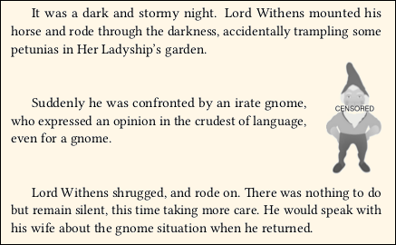
• In general, avoid using accompanying text with an image, with the possible exception of titles and other special layouts. There is little need for it in the flowing text of a novel. If you find that you need to use it frequently, then perhaps your book would benefit from a page layout program such as Scribus, instead of TeX.
7.4. Color Cover Artwork
This portion serves a limited purpose. It is for the benefit of those who need to submit color print cover artwork in the form of a PDF/X-1a:2001 file, with the artwork as CMYK and 240% ink limit. This is the format required by some American print-on-demand services. It is also generally acceptable to others, whose requirements are less restrictive.
Example cover artwork can be found at the GitHub project page, in the "other" folder.
Before you begin: Do you really need to do this? Many print-on-demand services are perfectly happy to accept something such as an ordinary RGB jpeg image, as long as it has the correct size (with bleed area). They can easily process it for print production in a few moments, using professional software. If they do it, then whether or not you are surprised by the resulting colors, will depend on whether or not your original image is within the printer gamut. In other cases, the print service prefers (or insists) that you do the image print production processing yourself. Then, you get to see an emulation of the print colors before you submit the file, and can change your artwork if the resulting colors are disappointing.
The novel document class does not provide any support for creating the original artwork, either image or text. In fact, TeX is not the best way to do that. Use a graphics program (such as the free GIMP) to do your artwork, including text. In the end, your text will be rasterized, just like any background image. For this reason, avoid using small text, or consider using a sans-serif typeface on the cover (even though there is no sans-serif in the book itself).
DO NOT PLACE A BARCODE. If your print service requests a white rectangle where the barcode will go, then include it in your image. Almost every print service is willing to create the barcode from your ISBN, and place the barcode image into your PDF during post-processing. Most of them even demand that they do it themselves. Do-it-yourself barcodes are incompatible with the following instructions.
DISCLAIMER: This documentation, and its accompanying software, is offered AS-IS, WITHOUT WARRANTY EXPRESS OR IMPLIED. USE ONLY AT YOUR OWN RISK. The author is an amateur who does not profess expertise in these matters. The best I can say is, "It works for me."
7.4.1. Begin With PNG
Create your artwork, including all text (but not barcode or barcode text) using whatever means you have. How you do it is not relevant. To follow these instructions, you must provide the artwork as a flattened (no transparency) PNG format image, at correct size (including bleed area) and resolution (dpi).
Example: Suppose your book is 5.5" x 8.5" softcover, a typical size for American fiction. Based on its page count and paper, you are told that the spine width must be 0.62". The required bleed width, on all four sides, must be 0.125".
Then, the image is 0.125 + 5.5 + 0.62 + 5.5 + 0.125 = 11.87in wide.
The image is 0.125 + 8.5 + 0.125 = 8.75in high.
At 300dpi resolution (a typical value) the image must be 11.87 x 300 = 3561 pixels wide, and 8.75 x 300 = 2625 pixels high. In case of fractional pixels, round upward. The exact pixel count is important.
It is best to use the AdobeRGB1998 color workspace, or equivalent. But you can also use sRGB, or equivalent, and in many cases you will not notice much difference. It is helpful to attach (embed) the workspace color profile in your PNG image, especially if it is something other than AdobeRGB1998 or sRGB. Note that the workspace is NOT the color profile of your monitor (if you have it). If you do not attach (embed) the workspace color profile, then remember whether you were using AdobeRGB1998 or sRGB. If you make a mistake here, it is not fatal. It merely means that some colors (particularly bright greens and blue-greens) will print somewhat brighter or duller than you were expecting.
When done, export it as a flattened PNG.
If you are provided with an image other than PNG, you have to convert it to PNG. No alternative. It is easy enough to use GIMP to convert most image formats. If you have a PDF (which is not already in the required format), GIMP can probably open it as an image. Be sure you import it with the correct resolution. Again, the pixel width and height are important.
Cover Text: These instructions assume that your cover text is rasterized, and is part of the image rather than vector text. In many cases your graphics program has enough text capability to do what you need.
If you wish to use TeX to typeset the cover text, do it this way: Use TeX to create one or more PDFs of the cover text, without images. You can create several blocks of text at different pages sizes, if you wish. Open your background artwork in GIMP. Add a new transparent layer above it. Open a text PDF in GIMP. Choose resolution 300dpi, full antialiasing, grayscale or color. The opened text is now a raster image. Copy it, and paste it atop the transparent layer. Anchor it. Use Color: Color to Alpha: white to alpha filter. That removes the white area from the PDF image. Finally, move the text to where it should go. You can rotate the text 90 degrees, but do not resize it! If you would rather the text be at a different size, then either change it in TeX, or use a different resolution when you open the PDF in GIMP. Note that even when you open the PDF at a different resolution, it will still be at 300dpi when you place it over the 300dpi background image; but its size will change.
7.4.2. Get Some Software
Get the 238% total ink limit color profile from Aaron Shepard. Direct link to zipped profile. This does the magic of ensuring that you comply with the 240% ink limit (the profile provides a little headroom, which seems useful). It can also be used for softproofing, if you know how to do that. That's not the only possible profile, but it seems to me that it is the best of several available. A good alternative is from David Blatner. Direct link to icc profile.
Included in the novel documentation extras folder is an open-source color profile for sRGB (file srgb.icc). There is also an open-source Equivalent to AdobeRGB (file crgb.icc). You will be using these when you convert your PNG image to a JPG in CMYK color space. These are re-named, cross-platform files obtained from Elle Stone. I can think of no technical need to use the "real" profiles that may be lurking somewhere in your computer.
Get GraphicsMagick or ImageMagick. On Linux, you can install it via your system package manager. On Windows, get GraphicsMagick Q16 binaries for your system (32 or 64 bit) from SourceForge. I am told that versions for Mac are available via homebrew and macports, but again, I do not have a Mac, so I cannot check that. Or, get ImageMagick Q16 for various platforms from here.
7.4.3. Convert Your Image to CMYK at 240% (or less) Ink Limit
The effect of conversion is explained in Appendix D.
Get ready: Make a copy of the above 238% (or 240%) ink limit color profile, and re-name the copy as 240.icc. I will call your original PNG image yourimage.png. Put this image, the 240.icc file, and files srgb.icc and crgb.icc in a single working folder.
I will also assume that the image resolution is 300dpi. If it is something else, then modify 300 to the other number, when you see it below.
Note: Each of the following boxed commands is a single command line. You may need to scroll the box to the right, or the text may wrap, depending on how you view this file.
Step 1: Open a Terminal (Command Prompt) and navigate to that folder.
In the following commands, the initial "gm" calls GraphicsMagick (same code Linux and Windows). If you prefer ImageMagick, then eliminate the initial "gm" on Linux, or change the "gm" to "magick" on Windows.
gm convert yourimage.png embedded.icc
The above command may return the message "No color profile available" and generate a zero-byte embedded.icc file. Not a problem. Discard the zero-byte file. But if it generates a non-zero embedded.icc file, keep it.
Step 2: Next (note the file extensions):
gm convert -strip yourimage.png yourimage-stripped.tif
Step 3: At this point, there are three possibilities:
(a) You have a non-zero embedded.icc file. In this case:
gm convert -profile embedded.icc -profile 240.icc yourimage-stripped.tif yourimage-temp.tif
(b) No embedded.icc, but you know that the artwork was create using AdobeRGB1998 workspace, or equivalent. Then:
gm convert -profile crgb.icc -profile 240.icc yourimage-stripped.tif yourimage-temp.tif
(c) Neither of the above. The image is probably sRGB (default). Then:
gm convert -profile srgb.icc -profile 240.icc yourimage-stripped.tif yourimage-temp.tif
Step 4: Now, regardless of which possibility you used above:
gm mogrify -strip yourimage-temp.tif
Step 5: And finally:
gm convert -units PixelsPerInch -density 300 -quality 100 yourimage-temp.tif yourimage-cmyk240.jpg
Step 6: Now verify your work:
gm identify -verbose yourimage-cmyk240.jpg
The report should show that the image is CMYK, that it is at 300 pixels/inch, and that there is NO entry for "Profile-color". It will not have anything to say about ink limit, or SWOP.
7.4.4. Convert your CMYK Image to PDF/X.
Up to now, you did not need TeX. Now you do. Be sure that you have a working TeX installation, with the novel document class package.
In folder (your TeX root)/doc/lualatex/novel/extras you will find file "novel-cover-template.tex". Place a copy in the same working folder as your image, and modify it as needed.
\SetMediaSize refers to the full size of the image, with units (usually in). This includes the bleed box. For example, \SetMediaSize{11.87in}{8.75in}.
\SetTrimSize refers to the trimmed image, without bleed. For example, \SetTrimSize{11.62in}{8.5in}.
\SetPDFX[CGATSTR001]{X-1a:2001} will get you "US Web Coated SWOP v2" output intent (most common the USA), and PDF/X-1a:2001 compliance. The Output Intent *.icc color profile will NOT be embedded, because this is almost always the way that print services want it. The PDF contains a code identifying the intent, so there is no need to embed the color profile (and disadvantages to embedding it). In the unlikely event that they demand the Output Intent color profile embedded, put an asterisk on the command.
For compliance you need to use \SetTitle. The title for this file might not be the title of your book, because this file isn't your book. Ask you print service what they want. Same with \SetAuthor.
You can use \SetApplication and \SetProducer to change internal identifiers. Don't use these unless you have a reason.
\SetCoverImage is self-explanatory. Must have file extension jpg, jpeg, JPG, or JPEG. Must be CMYK. Note that TeX cannot verify whether the image is in correct color space. It will compile, even if the image is wrong. Beware!
Do not attempt to write anything between \begin{document} and \end{document}. If you erroneously put some text there, the document will probably compile, and it may even be a valid PDF/X file. However, the resulting text color will almost surely be wrong. If so, the problem will be detected when you submit your file (wrong ink limit or color space).
Compiling may take a little longer than expected. If your TeX system opens a PDF viewer automatically, the image might be missing (or partial) until a few seconds after the viewer opens. Be patient. The file size is large.
7.4.5. Final Check
Open the PDF in Adobe Reader, which does a trick that no other free software will do, to my knowledge. If your platform does not have Adobe Reader, then find a friend who has it. May be a different platform.
In Adobe Reader, go to Edit, Preferences, Documents. Check "Save As optimizes for fast web view." Then go to Edit, Preferences, Page Display. Check "Show art, trim, and bleed boxes." Then OK.
Open your PDF. You should see a light green box, just inside the image boundary. This shows the Trim Area. This box does not print; it is only for visualization. Go to File, Properties, Fonts. There should be no fonts listed.
Then, "Save As" the same file name (or another one, if you prefer). This will optimize the file. You probably do not need to do that, but it does not hurt, and a few services expect it.
There will always be some difference between color as viewed on your monitor, and color as printed. This is due to the difference between emitted light (your monitor) and reflected light (print). In professional use, the monitor will be calibrated, and operated at a specific screen brightness. The print will be viewed under lighting with a specific color temperature and illumination. Your own colors are not that critical, are they? If you have a calibrated monitor, and view the PDF and images in color-managed software, then what you see on your computer will be reasonably close to what prints. If your monitor is not calibrated, or you are not using color-managed software, then the printed cover may have its greens a bit more colorful than you were expecting. That doesn't mean there will be a greenish cast. It merely means that things such as spring leaves and shamrocks will be a bit greener (in print) than you expected.
Remember the Disclaimer! Your PDF file should now be ready for submission. Only "should," not "is," because this documentation and its accompanying software comes without warranty. Submit at your own risk!
All I can say is that it "worked for me." Screenshots:
8. Book Design
Most authors in P.O.D. use an ordinary word processor, particularly MS Word. For that reason, many print services, and most online user forums, refer to the terminology and settings of MS Word, rather than to the meanings in traditional book publishing. In the case of images, Photoshop settings are often described.
Since you are neither using MS Word nor Photoshop, you must understand the terminology of printed book design. Then, you can apply that knowledge to the physical layout and internal design of your book, using novel document class.
8.1. Terminology
You must understand these terms, as used in printing.
8.1.1. Sheet, Page, Leaf
A sheet of paper is a single, physical piece of paper, regardless of whether anything is printed on it, or where. Often, paper starts out as a large sheet that will subsequently be cut into smaller sheets. The size doesn't matter. A sheet of paper is, in ordinary understanding, a piece of paper.
 In a finished book, a page is one side of a leaf. Thus, there are always exactly twice as many pages are there are leaves. From the manufacturer's point of view, a 240-page (double-sided printing) book has 120 leaves, regardless of whether or not anything is printed on the pages, or how they are numbered.
In a finished book, a page is one side of a leaf. Thus, there are always exactly twice as many pages are there are leaves. From the manufacturer's point of view, a 240-page (double-sided printing) book has 120 leaves, regardless of whether or not anything is printed on the pages, or how they are numbered.
8.1.2. Folio, Spine
Imagine a single sheet of US Letter 8.5"Wx11"H paper. It has two pages, since you can print on both sides (even if one is empty).
If you fold that sheet in half across its width, it is still one sheet. But now you have a folio, consisting of two leaves of size 5.5"Wx8.5"H. Each leaf has two pages, so you now have four pages. The fold is at the spine.
Caution: The term "folio" has several different meanings, even in the narrow field of book publishing. It may refer to folded paper, as mentioned above. Or it may refer to a particular sheet size of paper ("foolscap"). Or, it may simply refer to the number printed on a page. This last use of "folio" is discussed in the context of headers and footers.
8.1.3. Signature, Imposition
 When a book is commercially manufactured, folios are nested to form signatures. The number of folios in a signature is typically 6 to 16 (that would be 24 to 64 pages). If you were hand-making a single book at home, you might use only one folio per signature.
When a book is commercially manufactured, folios are nested to form signatures. The number of folios in a signature is typically 6 to 16 (that would be 24 to 64 pages). If you were hand-making a single book at home, you might use only one folio per signature.
Now, think about how those pages must be ordered. Suppose a book contains a single signature of 4 folios. The outermost folio is printed with pages 1 and 16 on one side (before folding), and pages 2 and 15 on its other side. The next nested folio has pages 3/14 and 4/13. Nested inside is 5/12 and 6/11. Innermost is 7/10 and 8/9.
Re-arranging the page order is part of the imposition process. The process may involve tweaking the position of each page slightly, to account for offset due to paper thickness when the folios are grouped into signatures. If numerous folios are printed on a larger sheet of paper before cutting, the process may involve rotating folios so that they waste less paper.
Your home printer software can probably do imposition for a single-folio design (four pages). Anything beyond that is left to professional software. You don't need to do it. The print service does it for you, automatically.
8.2. Book Manufacture
In many cases, when you choose how your book will be manufactured, you will have at most these choices: Trim Size, interior b/w or color, paper, binding, cover finish. The novel class does not address the particular requirements of color interiors (grayscale is OK, since it is emulated by black and white). When you choose the Trim Size, other options may be limited.
8.2.1 Perfect Binding
Most modern softcover books (and some inexpensive hardcovers) are manufactured using a process named Perfect Binding.
In Perfect Binding, the signatures are clamped together, and the folded area is removed by a cutting machine. Then there are no longer any folios, just individual leaves.
The leaves are glued together at the spine, possibly with reinforcement. Note that the glue is not merely at the edge of the leaves; it penetrates the paper slightly, for better strength. Finally, the cover is attached.
The Perfect Binding method is inexpensive, and is more than adequate for a book that will not receive rough handling. Whether using P.O.D. or a major mass-quantity publisher, most softcover books have been made this way for a long time. Unless you know that your book will be acquired by libraries for addition to their long-term literary collection, there is little reason to have your book manufactured by any other process. The possible exception would be books for small children, which receive rough handling under all circumstances.
8.2.2 Library Binding
Libraries rarely purchase Perfect Binding books (regardless of soft or hard cover) due to lack of durability in a library environment. The exceptions are popular books of no lasting literary value, and how-to books for evolving technologies. These may be obtained by libraries in the cheapest softcover version, because such books will be discarded long before they wear out.
Unless you are sure that your book will be acquired by numerous libraries for long-term addition to their collections, there is little reason to produce a quality hardcover version. Not all P.O.D. services offer hardcover. If you do need a hardcover version, then be sure to carefully inquire regarding its manufacture, and preferably obtain a copy of someone else's book manufactured that way.
 The best hardcovers, suitable for library use, are made using the Smyth Sewing process. A Smyth Sewn book has signatures of (typically) 12 or 16 folios. But instead of removing the creases after folding, each signature is sewn through its crease using strong thread, onto a durable spine material. The pages will remain attached, even with hard usage. If the spine material is sufficiently flexible, then the book will lie flat when opened.
The best hardcovers, suitable for library use, are made using the Smyth Sewing process. A Smyth Sewn book has signatures of (typically) 12 or 16 folios. But instead of removing the creases after folding, each signature is sewn through its crease using strong thread, onto a durable spine material. The pages will remain attached, even with hard usage. If the spine material is sufficiently flexible, then the book will lie flat when opened.
Be sure to ask about spine flexibility. The most flexible methods have a soft, curved spine, and are best suited to thick novels. There is also a variety that has a square (flat) spine, which will not quite lie flat when opened. Square-spine Smyth Sewn books seem to be the fashion for documenting intellectual property.
If a major publisher is producing a book that is sure to be ordered by many libraries, due to its author's popularity or maybe a movie tie-in, then it is likely to be released as a Smyth Sewn hardcover. That's because the production method is affordable in quantity. But on a P.O.D. basis, it is a significant expense.
Different bindings must have different ISBNs, because they are different products. If you need to change the dimensions of Trim Size or Margins, the \Rework commands are your friends.
8.2.3 Other Bindings
If the print service offers to provide a hardcover version, you must carefully inquire as to the production method. The cheapest hardcover uses the same basic technology as Perfect-Bound softcover, except that the cover is harder. That can be done in production, or retroactively. But such a book is unlikely to be of much value, except as a personal memento.
The side-sewn method involves stitching the pages sideways, near the spine. The resulting book is very inflexible and will not open flat, but this is the strongest method for retaining pages. Side-sewn books often are used for archival purposes (patent applications, living trusts, dissertations, etc.). This may be done in production, or retroactively. The result is of high quality, but very inappropriate for a novel. Do not do this, except as a peronal memento.
In general: For general fiction where you hope for a wide audience, do not request hardcover unless you are certain that it is Smyth-Sewn, preferably with flexible binding.
When you change the binding, you must also get a different ISBN. Only exception is for a private copy that will not be marketed.
A Perfect Bound softcover cannot be retroactively converted to a Smyth Sewn, Library Bound hardcover. However, it is possible to convert a softcover book to some other kinds of hardcover.
If your book is converted, remove the ISBN, as it is inapplicable.
In the simplest method, the soft cover is removed, and a hard cover is glued on. The pages may be shaved in size, so that they don't edge beyond the new cover; or the new cover may be slightly over-sized. Part of the soft cover may be pasted onto the hard cover. That won't look the same as original manufacture, but it avoids creating a dust jacket. Such a hard cover book is no more durable than the softcover, no more flexible at the spine, and perhaps no more resistant to losing pages. But it has a harder cover. The only reason for doing this is to provide souvenir copies for yourself and your family.
A more advanced method involves adding strength to the glued spine, by side-sewing the pages, before adding the hard cover. This results in a book that is much less flexible at the spine, and much less likely to lose pages. Papers of legal signficance (patent applications, real estate trusts, dissertations, etc.) are often done this way. Beware of services that offer to convert your softcover to hardcover by this method, since it is inappropriate for something such as a novel.
8.2.4. Paper and Cover Materials
The interior paper may be white or "creme" (off-white). White paper is generally used for nonfiction, and must be used if there are interior color images. Creme paper is generally used for fiction. The idea is that white paper creates an air of authority, whereas creme paper is more comfortable for lengthy reading. I agree. I recently read a novel that was (mis-) printed on white paper, and it was hard to read in a bright area. So, for your novel, choose creme paper.
The cover of a Perfect-Binding softcover book may be produced with a glossy or a matte finish. The fashion is to use glossy for nonfiction, matte for fiction. Again, the idea is authority versus comfort. But you may choose what you wish. "Instant Best-Seller" mass-market paperbacks often have an embossed texture, and maybe even metal foil. In the print-on-demand market, forget it. Don't even think about it.
If you do request a hardcover edition, then it may or may not have a dust jacket (costs extra). The general rule is that books for libraries have a dust jacket, which will be encased in plastic by the library. Books for documentation generally have no dust jacket, with the title and other info embossed in the cover material, for permanance.
8.3. Interior Structure
This section discusses how a book is designed, in terms of its component pages, where they are placed, and how they are styled. The emphasis is on popular fiction. Some sections that would be required in a dissertation or other nonfiction, are much rarer in popular fiction, or are entirely missing. There is also considerable "wiggle room" in terms of structure, particularly for genres that pretend to be a truthful report of someone else's writing.
The advice you are about to receive is not authoritative. It is combined from CMoS (which focuses on nonfiction) and on actual practice, as I have seen by looking through numerous professionally-published works of popular fiction at the local public library. There is a certain amount of variation.
8.3.1. Display Pages vs. Chapter-Like Sections
8.3.1.1. Display Pages
A Display Page has its own design, and stands by itself. Examples are Half-Title, Title, Copyright, Dedication, Epigraph, Table of Contents, Map, Part Separator, and of course Blank.
Half-Title, Title, Dedication, and Part Separators are always single-page recto. A Table of Contents begins recto, but may continue verso. An Epigraph is single-page, and may be recto or verso.
Maps are one per page, and may be recto or verso. If you intend to create a large map that spreads verso-recto, be aware that the technology you will be using does not allow continuous image through the spine area. Instead, you must create two separate maps, one per page. There will be the usual inner margins.
A Blank page is almost always verso; the only exception is when multiple blanks appear at the very end of the book.
Each kind of display page has its own style, and position. What they have in common is that all of them lack a header or footer (and thus, lack a printed page number). Use \thispagestyle{empty}.
If a display page extends to a second page (such as Table of Contents), then use \thispagestyle{empty} at its begining and end, to ensure that both pages omit header and footer.
8.3.1.2. Chapter-Like Sections
A Chapter-Like Section includes things that are styled like a chapter. This includes Foreword, Preface, Introduction, Author's Note, Acknowledgements, Prologue, Chapters, Epilogue, Conclusion, Endnotes.
A Chapter-Like Section begins recto. However, chapters after Chapter One may begin recto or verso. If there is subsequent material (Epilogue, Conclusion, Endnotes, etc.) then the begin-recto rule applies.
The first page of a Chapter-Like Section section has no header, but may have a footer with page number. See the available choices for \thispagestyle.
Remaining pages in the section will have such header/footer style as pertains to ordinary chapters in the book. Exception: If a Chapter-Like Section in front matter is only two pages long, then you may optionally omit the header, or footer, on both pages. Then, use \thispagestyle at the end of the section, with choice that matches its beginning.
When a Chapter-Like Section appears in front matter, its page headers (if any) do not show the author and title of the book, the way they would appear in main matter. Instead, they show the name of the section (such as Author's Note) both verso and recto. Commands \SetVersoHeadText and \SetRectoheadText are your friends, as they permit you to dynamically change header text as you move through the book.
8.3.2. Front Matter
The \frontmatter command must be written immediately after \begin{document}. This sets page numbering to lowercase roman, and performs some other actions.
A book's front matter is about the book. It is not part of the story. The only mandatory front matter is the Title Page and its verso, the Copyright Page. On a practical basis, six pages of front matter are the minimum, and this minimum is often used, even by major publishers. See Appendix B for how to construct basic six-page front matter.
8.3.2.1. Half-Title, page i
Some book manufacturers (particulary in hardcover) place a blank or decorative flyleaf before any part of the book interior. A flyleaf (if present) is added at the bookbinding factory, and is not part of your book's interior PDF file.
Your book's first interior recto page is a Half-Title. It is a Display Page. Historically it was a protective page for the full title page, in the era when a printed interior was not immediately bound. That tradition lives on.
The Half-Title contains nothing but the book's title. No subtitle. It should be styled in the same manner as is used on the full Title Page, but typically smaller. You can place the title anywhere it looks good. It is almost never placed upper left.
8.3.2.2. Blank, page ii
Verso page ii is a Display Page. In most cases, it will be blank. This is achieved by using \cleartorecto at the end of the Half-Title page. But if you wish to manually create a blank page, verso or recto:
\clearpage\thispagestyle{empty}\null\clearpage
Instead of blank, prolific authors may show a list of their books. However, even if you wrote other books, many print services won't allow you to list them, unless the same service exclusively carries all of them.
Major publishers may provide an advertisement for the related movie. In the good old days (looong ago) an expensive book might have a high-quality illustration, known as Frontispiece. Unless you truly know what you are doing, avoid these, and just use a blank page.
8.3.2.3. Title Page, iii
The Title Page is a recto Display Page It shows the title, subtitle (if any), and author. These elements are often very decorative, and may involve imagery. They must exactly match the information you provided when you obtained the book's ISBN. Exception: Some services allow the author's name to use initials.
If there is a publisher's imprint, it goes at the base. This is achieved by using \vfill just above it.
Remember that a self-publishing service is not the publisher; you are. That's why it is called self-publishing. If you don't have anything else to put there, and don't like leaving the base of the page empty, you might use "Independently Published in Your City, YourState" or something similar.
• Note: Others have written (and I agree) that the surest sign that a book was written by an amateur, is when the Title Page simply uses the book's main text font (perhaps bold and larger). That has "term paper" written all over it. Instead, be creative.
8.3.2.4. Copyright Page, iv
The Copyright Page is a verso Display Page. It is primarily legalistic in nature, providing essential details about the book, as an item in commerce.
Some nations require specific information to appear on a Copyright Page. That is your responsibility to know, and is beyond the scope of this documentation.
At least in the U.S.A., the nation where the book is printed must be indicated, either on the Copyright Page or some other allowed location (such as the final verso). Many print-on-demand services use multiple printers, which may be in various nations, depending on who purchases your book. With the services I have used, this is solved by omitting "Printed in the United States of America" on the Copyright page, because it may not be true. At the printing factory, the necessary information is added by them, as a Colophon on the final verso page. This is one reason why that final verso page must be blank (in your PDF). Ask your P.O.D. service.
A Copyright Page is in ordinary text, perhaps using minimal styling such as italics or small caps. In all cases, its overall page style must differ from the page style of main text. Almost always, the content of the Copyright Page is forced downward, so that excess white space is on top, and the final line appears at the base of the textblock. This is achieved using \null\vfill at the beginning of the page.
The legalese environment prevents hyphenation, aligns paragraphs ragged-right (instead of justified), and omits paragraph indents. This style is widely used for a Copyright Page. Be sure to use \null, or a similar vertical spacing command, to separate paragraphs. If you nest the center environment within legalese, it will over-ride the ragged-right alignment.
The adjustwidth environment can be used to set the width of the lines at less than the full width. This is especially helpful if you have little to say, and choose to center the content.
Always review where lines break, if necessary insrting manual line breaks, to ensure that the meaning is sensible.
If you use them, certain words or phrases such as FIRST EDITION are traditionally set in all small caps. Use \allsmcp{FIRST EDITION}.
Numbers, such as date and ISBN, may be Old Style or Lining. The text default is probably Old Style. If you prefer Lining (looks more legalistic), then use \lnum{numbers}. Anything other than digits (and related characters) will remain unchanged by the \lnum command.
The Copyright Symbol © is pasted from a Unicode character map. Avoid using TeX code.
I have never seen a Copyright Page extend to a second page. Never. If you have that much to say, it may be that some of the information may be moved to an Author's Note or Acknowledgements section. Or, if necessary, you may use the parascale environment to slightly shrink the text and baseline skip.
If you have a Cataloging-in-Publication data block (probably you do not), then be aware that its content may be provided to you in MS Word format. Pay attention to indents, as they are part of how the data is presented. Use \forceindent or \backindent to over-ride the normal indentation (or lack thereof). Use the adjustwidth environment for block indents, but be aware that nesting one adjustwidth inside another may cause problems. It is better to end one adjustwidth before beginning a new one.
Also, CIP data uses emdash in places. MS Word may represent an emdash with two hyphens, whereas TeX uses three hyphens. Better to simply paste the emdash from a Unicode character map, which will appear the same in both MS Word and TeX.
If you need straight apostrophe or straight quotes, use \straightquote and \straightdblquote to insert a character that won't be converted to curly. These commands gobble the following space, in usual TeX fashion.
8.3.2.5. Dedication
If you use a Dedication, it is a recto Display Page, and must be placed immediately facing the Copyright Page.
A Dedication is not required. But sadly, nowadays many authors write a frivolous Dedication, which detracts from the book. If you feel that you need a Dedication, why not put it on your web site? Then you can always edit or remove it, if the subject of your affection runs off with someone else (or, you do). Keep it simple.
A Dedication is centered. If it is more than a few words, use the adjustwidth environment to keep it bounded, as you would for an Epigraph.
8.3.2.6. Epigraph
If you use an Epigraph, it is a Display Page, which may be placed verso or recto.
An Epigraph is optional. It is a short quotation, traditionally from a work by someone else. Its purpose is to set the tone of your own book, or shamelessly imply that your own talents resemble that of the person quoted. However, even though it is short, do not place copyrighted material there, unless you have the necessary legal permission. You probably don't, so forget about quoting a famous contemporary author or performer. Quotations from the Bible, Shakespeare, and Nineteenth-Century authors are popular; but even then, a more recent translation may be still under copyright.
Alternatively, you can quote from your own book, or make up something entirely new. One famous Epigraph is used in J.R.R. Tolkien's Lord of the Rings trilogy, in which each book uses the long form of the Ring's incantation as its Epigraph.
One possible use of an Epigraph is on recto page v, in books that lack a Dedication, a Table of Contents, or other important front matter beyond the Copyright Page. Alternatively, if a book has both Dedication and Table of Contents, an Epigraph may be placed on the otherwise-blank verso page vi between them. Or, an Epigraph may appear in some later convenient place in front matter.
In general, an Epigraph is set as a centered block, not occupying the full page width. The adjustwidth environment serves this purpose. You will have to manually adjust the widths at left and right, for best visual effect.
The source of the quotation should be right-justified within the block, and may be preceded by an emdash. Typically, names of people are not italicized, but titles of books are. It is not necessary to give elaborate details; this is not a bibliography.
Example Epigraph: Real Quotation
This might be used for an action adventure:
\clearpage
\thispagestyle{empty}
\vspace*{10\nbs}
\begin{adjustwidth}{7em}{7em}
Cowards die many times before their deaths;\\
The valiant never taste of death but once.\par
\stake\hfill---Shakespeare\par
\end{adjustwidth}
\clearpage
Example Epigraph: Imaginary Quotation
This might be used for contemporary fiction with a humorous style. The fictional speaker will appear as a character in the book:
\clearpage
\thispagestyle{empty}
\vspace*{10\nbs}
\begin{adjustwidth}{7em}{7em}
Let me tell you, there's nothing more exciting than the brouhaha at Mickey's Pub each Saturday night in April.\par
\stake\hfill---Dorf McNorf\par
\end{adjustwidth}
\clearpage
8.3.2.7. Table of Contents
If you use a Table of Contents, it is a Display Page, beginning recto. If a second page is needed, add \thispagestyle{empty} after the table completes, but before you clear that page.
Most fiction does not have, and does not need, a Table of Contents. It is more useful when the story consists of discrete episodes with distinctive names, not just numbers. Or, if the book is a collection of short stories, a table of contents is suggested. If your book is a critical edition, or has sections by different authors, then a Table of Contents is mandatory.
Avoid any of the table environments that come with TeX or its packages. These do not provide the most attractive presentation for fiction, without a lot of work on your part.
A Table of Contents has no header or footer, and no printed page number. Use \thispagestyle{empty}. If it continues to a second page, add \thispagestyle{empty} at the end, if you don't know where the page breaks.
Anything preceding a Table of Contents is not listed in the table. Neither is the table itself. An Epigraph is normally not listed, even if it follows the table.
You may or may not list maps or other illustrations in the table. Fiction rarely has more than a map or two, easily located in front matter by the reader, so there's no need to mention them. Use your judgement. That's different from the practice in nonfiction, especially academic works, where the illustrations convey factual data rather than artistry.
A basic Table of Contents uses the center environment, so that the Table's title and each entry appear centered on the page, without any fancy layout. So simple. So effective. However, if you prefer a more rectangular table, novel has commands for this purpose.
8.3.2.7.1. The toc Environment
Unlike some other TeX document classes, novel will not automatically build a Table of Contents. Also, LaTeX commands related to tables are generally disabled; adding other packages does not help (and may hurt).
You may create a Table of Contents in your own style, or use the toc environment for novel's own style. The choice is yours.
\begin{toc}[extra entry separation]{extra margins} ... \end{toc}
The table is not indented, and text within it is not indented.
The optional argument is a number. It is the portion of normal baselineskip that will be added beneath each \tocitem entry. Default is 0, meaning that there is no extra skip between items, and normal baselineskip is maintained. A value greater than 0 spreads the entries, which could be attractive if there are only a few chapters and you'd like to use more space on the page. For example, a value of 0.25 means that a gap of 0.25 normal baselineskip will be added beneath each entry. A small negative value will crowd the lines together, but there is a limit (approximately -0.1) before the lines cannot be squeezed any tighter.
Note that the optional argument only applies to \tocitem entries, not to any other text within the environment.
The required argument is a length, which will be the amount of extra margin added at left and right of the table (using adjustwidth). A value of 0em allows the table to occupy the full width of the textblock. A value of 2em adds 2em to the margin on each side, so that the width of the table is 4em less than the width of the textblock.
It is best to specify horizontal lengths in units of em or the proportional \parindent or \textwidth.
Place at least one empty line above the Table's title, using \null or \vspace*. This will prevent the title (which is normally enlarged using \charscale) from encroaching into the top margin.
\tocitem[chapter number]{description}{page number} and starred
Use this command for entries in the Table. Do not use it for non-Table text on the page.
The optional argument is the chapter number, at most two digits. The number will be left-aligned, with a period automatically added. Following the period will be whatever amount of space is needed to keep the following description aligned.
If the optional argument is omitted (or empty), then the description will align to the left of the table.
If the optional argument is the tilde character ~ then no number or period is printed, but the space for chapter number is occupied, so that the following description aligns as if you had entered a chapter number.
The description is usually the chapter title. If it cannot easily fit on one line, then use an additional \tocitem, because the text cannot be wrapped. The following example shows how this can be done.
Without the asterisk, \tocitem fills the area between the description and the page number with empty space. The more popular, starred \tocitem* command fills with a dotted line, and is very attractive.
You may use ordinary style commands, such as \textit, in the entries.
8.3.2.7.2. Example Table of Contents
This content of this table is a spoiler, in that you can figure out where the story is going. Sometimes that's desirable, but usually not:

\cleartorecto % because ToC must start recto
\thispagestyle{empty}
\vspace*{4\nbs}
\begin{toc}[0.25]{5.5em}
{\centering\charscale[1.25]{Contents}\par}
\null\null
\tocitem*{Prologue}{1}
\tocitem*[1]{The Evil Weeds}{5}
\tocitem*[2]{A Plan of Attack}{18}
\tocitem*[3]{Lady Withens Objects}{35}
\tocitem*[4]{Back-Hoe to the Rescue}{48}
\tocitem*[5]{Invasion of the Dandelions}{63}
\tocitem*[~]{\emph{Interlude}}{90}
\tocitem*[6]{Army of the Gardeners}{94}
\tocitem*[7]{Too Much Rain}{113}
\tocitem*[8]{To Nuke, or Not to Nuke?}{145}
\tocitem*[9]{Revenge of the Zucchini}{162}
\tocitem*[10]{Lady Withens Sneezes}{180}
\tocitem*[11]{The Concrete Lawn}{206}
\tocitem*{Epilogue}{228}
\end{toc}
\clearpage
8.3.2.8. Foreword, Preface, Introduction
A Foreword, Preface, or Introduction is a Chapter-Like Section, beginning recto.
A Foreword is written by someone other than the author. It is essentially a marketing tool, by which the publisher addes credence to the work, or mere publicity, by having an expert or celebrity write something in front matter. Introductions are common in nonfiction, but extremely rare (I have never seen one) in fiction, except for critical editions of older works (where the new, original material is essentially nonfiction).
A Preface is written by the author, speaking as author, and may include a general discussion of this and that about how the author came to write the book. It may also include acknowledgements, if they are not in a separate section. A Preface is rather formal, and very rare in popular fiction. If you wish to address the reader, the less-formal Author's Note is better for your purpose.
An Introduction, when used in front matter, is written by the author. Its purpose is to provide sufficient background for understanding the material that is to follow. Thus, an Introduction is sometimes seen in the front matter of historical or technical nonfiction.
An Introduction in front matter is inappropriate for popular fiction, but I suppose it might be used for the purpose of world-building in that genre, where the main story assumes that the reader is familiar with the setting. In such a case, the setup is described by the author (as author), but not by a character in the story. Also see Author's Note.
A Foreword, Preface, or Introduction is a "chapter-like" section. That is, its style is the same as if it were a chapter, in terms of how it is titled, and the use of page header/footer. But there is a significant exception: If your book design uses header text, you do not write the author and title in headers. Instead, you use \SetVersoHeadText and \SetRectoHeadText to write Foreword, Preface, or Introduction in both. See the example Author's Note, below, for how this is done.
A Foreword or Preface is often signed at the end by its writer, with place and date. A lengthy Foreword might instead place its writer's name and credentials under the Foreword title.
8.3.2.9. Acknowledgements
If you use Acknowledgements, it begins recto. If very short, style it as a Display Page, possibly even using limited text width (as with an Epigraph, above). Otherwise, it is a Chapter-Like Section.
Most fiction doesn't need acknowledgements. Don't write Acknowledgements just because you can. Acknowledgements are for those who provided real assistance. If you want to provide a shout-out to your friends for their encouragement, consider doing it on a web page.
If you have a Preface or Author's Note, you can often include acknowledgements there (if you wish), rather than in separate Acknowledgements.
If styled like a chapter, in a book that has page headers, the verso and recto head text is set to Acknowledgements, not the author and title. See the Author's Note, below, for how this is done.
8.3.2.10. Author's Note
If you use an Author's Note, it begins recto. If very short, style it as a Display Page, possibly even using limited text width (as with an Epigraph, above). Otherwise, it is a Chapter-Like Section.
An Author's Note directly addresses the reader, from the author. It is often signed with name, place, and date at the end. There is no particular content. Some authors point out that a particular element of the story, which seems fictional, is actually based on a real historical event. Others babble their life stories, and how they came to write the book. Others use it as a catch-all, including acknowledgements and whatever else fits.
There is some wiggle room regarding whether the Author's note is fact or fancy. For example, in the "lost manuscript" genre, authors may (fictionally) tell how the manuscript came into their hands; but a lengthy tale of discovery is better placed in main matter, as a fictional Introduction.
If an Author's Note is two pages long, then on the second page use the same page style that you would ordinary use to start a chapter. Normally, this is \thispagestyle{footer}.
If an Author's Note is three or more pages long, then a header is permitted (if the book's main style has header). You may allow author and title to appear in header text, but it is better to indicate that this is not the main story, using \SetVersoHeadText{Author's Note} and \SetRectoHeadText{Author's Note}.
Example Author's Note
In a book of historical fiction, based on the author's own travels and expertise:
\cleartorecto % begins recto
\SetVersoHeadText{Author's Note}
\SetRectoHeadText{Author's Note}
\begin{ChapterStart} % because chapter-like
\null\null
\ChapterTitle{Author's Note}
\end{ChapterStart}
After many years of studying the late Roman Empire... \lipsum[1]
The Third-Century burial practices of the Alemanni... \lipsum[1-2]
I have taken great liberty with the likely behavior... \lipsum[1]
The battles with Roman forces are entirely imaginary... \lipsum[1-2]
Finally, I would like to thank... \lipsum[1]
\null
\stake\hfill \textsc{Dirk Hardcase}\par
\stake\hfill Springfield, September 22, 2016\par
\clearpage
% Be sure to re-set the verso and recto head texts!
8.2.1.11. Map
A Map is a Display Page, which may be verso or recto. You may use more than one Map, but be aware that in the printing technology available to you via novel class, a single Map cannot be continued as a spread across the spine; you must break it into two independent Maps, allowing for the inner margins.
Many works of fiction have a map or other diagram. It might be the map of a real or fictional geographic area. It might be the map of a crime scene. It might be an inheritance chart. Even though fictional, it is usually placed in front matter, presumably because a map does not actually tell any part of the story.
I have seen maps placed very early, or very late, in front matter. The general rule seems to be, "put it where it fits." However, do not place a map where some other item must be located, and do not place a map on the final verso that faces the beginning of main matter, due to its visual distraction.
A single map, or maybe two, need not be mentioned in a table of contents or illustrations. If you have a lot of them strewn around the book, then they should be listed in such a table; but this is very rare in fiction.
As with all images, a map must be placed using novel's own image placement methods.
Example Map
Typically, there will be nothing but the single image on a Map page, with all text self-contained. But in this example, the image only occupies part of the page. It is followed by ordinary text for the numbered locations:

\clearpage
\thispagestyle{empty}
\BlockImage{areamap.png} % 600dpi b/w
\vspace{2\nbs}
\begin{center}
1. Alice Springs\\
2. Tuktoyaktuk\\
3. Pflugerville\\
4. Pucallpa\\
5. Kolwezi\\
6. Dushanbe\\
7. Mittenwald\\
8. Sanya\\
9. Ice Station 414\par
\end{center}
\clearpage
8.3.2.12. Second Half-Title
In many cases, front matter has very little content. After the Copyright Page, there is nothing else to say. But it is visually bad practice to go directly from verso Copyright Page to the start of the story on recto page 1. This can be solved by repeating the Half-Title as recto page v, with blank verso page vi. I've seen it with major writers and major publishers.
You can do the same thing with longer front matter, if it would otherwise end on a verso page.
When there is a lot of front matter (no particular amount), it is customary to use a second Half-Title to mark the boundary where front matter finally ends.
CMoS recommends that a second Half-Title be the first page of main matter. Thus, it would be page 1, with the actual story beginning on page 3. But it acknowledges that a common practice is for a second Half-Title and its verso to remain part of front matter, so that main matter begins with the story on page 1. Although I have seen a few books that follow the CMoS recommendation, it appears that the great majority of them follow the common practice.
If your book has Part Separators in main matter, then you can do without a second Half-Title.
8.3.2.13. Final Page of Front Matter
The final page of front matter is always verso. It is almost always blank. The easiest way to insert a blank page is to write \cleartorecto at the end of the preceding recto page.
Why is the final page of front matter almost always blank? It is because it faces the opening page of the main story, and you don't want to show anything that detracts from the scene or mood. But there are exceptions. For example, an Epigraph might usefully contribute to the setting. Or, in the case of an old-style English murder mystery (where you already know that the murderer did it with arsenic to inherit the family estate), a map of the estate, or a family tree, would not detract from the setting. The choice is yours.
8.3.3. Main Matter
Main matter begins with the \mainmatter command. It forces its page to recto, changes the page numbering to Arabic, and sets the count to 1.
Main matter is the story itself. In some cases, this also includes a fictional setup (Introduction or Prologue) that leads to the longer story line. It also includes material in the aftermath of the story, such as Epilogue, Conclusion, and end notes.
8.3.3.1. Half-Title in Main Matter ?
The CMoS prefers that a second Half-Title page (if used) mark the beginning of main matter. Thus, it would be page 1 (number not printed). Then, the story begins on page 3.
However, CMoS also notes that this is not the regular practice, especially with fiction. In fact, among the many popular fiction books I have inspected, when a second Half-Title is used, it is almost always the last recto page of front matter, followed by a blank verso; then main matter begins with page 1 of the story.
The choice is yours. I suggest agreeing with regular practice: If you use a second Half-Title, keep it in front matter.
8.3.3.2. Part Separator in Main Matter
If used, a Part Separator is a recto Display Page.
Some books are partitioned into distinct sub-books. A sub-book is of substantial length, not individual chapters or short stories.
If your book has distinct sub-books, then each of them has its own recto cover page, known as a Part Separator. Its verso is blank or an Epigraph. Then the accompanying story begins recto.
A Part Separator is always main matter. So, the first Part Separator is always page 1 (number not printed). Then its text begins on page 3. Do not re-initialize the page count when you get to the next Part Separator.
Part separators could be simply Part I, Part II, and so forth. They could be Book I, Book II. Or, they could have distinctive titles, such as The Northern Front and The Southern Front. If your book is two novelettes in one, then the Part Separators would be the title (and subtitle, if any) of the individual novelettes. Sometimes a Part Separator has a brief description of its purpose, as in Book I. On Earth followed by Book II. On Mars.
Unless your book has a very complex structure, do not use both a second Half-Title (whether in front matter or main matter) and a Part Separator. Combine them as the recto main matter page 1: The Withens Chronicles. Part I, or simply Part I. Then the next Part Separator would be Part II.
In one book I recently noticed, there were five parts, each of which corresponded to one calendar day. The Part Separator showed the day, as in Monday, September 25. Then within each part there were several chapters, each of which took us to some different event in a different setting, all on that same day. I also note that this book had no Table of Contents; the progress of the novel was therefore a surprise, by its author's intent.
8.3.3.3. Introduction in Main Matter
An Introduction is a Chapter-Like Section. If the book is nonfiction and the Introduction is factual, it belongs in front matter, as described above. But in fiction, where an Introduction is a fictional lead-in to the larger story, it belongs in main matter.
A main matter Introduction is typically used in the "lost manuscript" genre, where some fictional adventurer or archaeologist describes how the manuscript was found and translated. Often, the narration is a moderately lengthy adventure tale, told in the first person, by some adventurer or achaeologist. Following such an Introduction, the various chapters will reveal the contents of the manuscript. If the voice of the Introduction returns at the end, it is called a Conclusion, and is in main matter.
If an Introduction is in main matter, its header text (if any) is whatever is used throughout the main story. Typically that's author verso, title recto. The reason is that such an Introduction is actually part of the overall story.
8.3.3.4. Prologue in Main Matter
A Prologue, even if one page, is a Chapter-Like Section. It belongs in main matter.
The purpose of a Prologue is to provide a quick lead-in or setting for the story, and get the reader's attention. It is confined in place and time (one scene, one perspective). The narrator may be first-person or third-person.
Do not use a Prologue for the voice of the author speaking about the book, as author; that goes in front matter, as an Author's Note.
If a book has a Prologue, then it is likely to have an Epilogue after the main story ends. An Epilogue also belongs in main matter.
I do not know of any fiction with both a fictional Introduction and a Prologue. If so, Introduction precedes Prologue.
Note: I have seen some web pages advising that a Prologue should go in front matter, and be narrated by a character who appears in the following story. Based on CMoS and actual books, I do not think that is correct.
8.3.3.5. Chapters
Finally, you have arrived at Chapter One! Not surprisingly, it is a Chapter-Like Section. Chapter One is always recto, whether or not preceded by an Introduction or Prologue.
Subsequent chapters may begin recto or verso. Or, the book may be designed so that each chapter always begins recto. In the majority of novels I have seen, recto/verso is used. The \clearpage command starts a new page (recto or verso), and the \cleartorecto command will (if necessary) insert a blank verso, so that the following material is always recto.
In the case of short stories, especially if they are by different authors, it is customary to begin each one as recto.
8.3.3.6. Epilogue, Conclusion
If your book has an Epilogue or Conclusion, it begins recto as a Chapter-Like Section in main matter.
An Epilogue is structurally like a Prologue, but tells the aftermath of the story. A Conclusion is like an Introduction, in which we step outside the main story. I am not aware of any book that has both; but if so, Epilogue precedes Conclusion.
8.3.3.7. End Notes, Appendix, etc.
If used, End Notes begin recto, as a Chapter-Like Section in main matter. The same applies to an Appendix and like material.
Page numbering continues Arabic. It may surprise you to learn that this is still main matter, but CMoS says so, and that's what was done in the few fictional books that have them, among those I have seen.
The reason is that this kind of material, which is fictional, is actually the original author's writing, entwined with the main story. It was always intended to be part of the book. Never mind that it "looks like" academic material added later.
8.3.4. At Very End
In novel, you must always end your document this way:
\cleartoend
\end{document}
The final page of your book is necessarily verso. P.O.D. printers (and many others) require that it be completely blank, because they will add some manufacturing information to that page. So, if the text of your book finishes on a recto page, \cleartoend adds one blank page. But if the text finishes on a verso page, then \cleartoend adds two blank pages, so that the final page is blank verso.
8.3.4.1. Backmatter? Not!
Once upon a time, when printing was not so electronically automated, it was difficult to add material to the end of a previously-typeset section of front matter. So, if there was a subsequent printing of the book, with new material that ought to go in front matter, the problem was solved by placing the new material in "back matter." Then, the original pagination did not have to be altered. To stress that the added material was not part of the original, it would have non-Arabic page numbering, which might be a continuation of lowercase roman numerals from where the front matter left off, or might begin with uppercase Roman numerals.
A similar situation applied to critical editions of earlier works, which added material from different authors. The added material was never part of the original book.
That is a situation you are never likely to address. When most authors speak about "back matter," what they mean is explanatory material that follows the end of the story. That is, anything after the final Chapter, Epilogue, or Conclusion. A good example can be found in J.R.R. Tolkien's The Return of the King, which has quite a bit of material following the end of the story. That material discusses the language and history of the Elves, and a variety of other things. But its page numbering continues Arabic. It looks like critical commentary, but it is part of Tolkien's original, fictional structure for the book. Thus, it is main matter.
So, your book is unlikely to have true back matter. If you use the \backmatter command, it does nothing. If you really wish to change page numbering, then you must code it manually. This is not advised for P.O.D. books, as it may confuse someone performing quality inspection; true back matter is so rare.
8.3.4.2. About the Author
A hardcover book often has "About the Author" on the inside flap of its dust jacket. Softcover doesn't have a dust jacket, so one strategy is to add a leaf after the story finishes (but before \cleartoend) and place "About the Author" on its recto. That avoids repagination of the original. It is still treated as main matter, with continued (non-printing) Arabic page number. Thus:
.. and they rode off into the sunset. % end of story
\cleartorecto
\thispagestyle{empty}
\begin{ChapterStart}
\ChapterTitle{About the Author}
\end{ChapterStart}
Dirk Hardcase is a former... etc.\par
\cleartoend
\end{document}
• I suggest that if you wish to tell about yourself, you can put it on a web site instead, where you can easily edit or delete it.
Appendix A.  Emergency Clinic: Rework Layout
Emergency Clinic: Rework Layout
Situation: Your book is designed for Trim Size 5.25x8, one of several widely-used American sizes. You have put many hours of work into getting just the right line breaks within paragraphs, and just the right pagination. It looks beautiful. But then you get an e-mail from a British distributor. Could you change to British size B novel format, essentially 5.06x7.81 Trim Size?
Sure, you say. Just needs a little math. Knock 0.095" off each margin. What could be easier? So you try that, but the printer rejects your file. It seems that your original margins were as narrow as they could be, per the printer's specifications. You cannot make them any narrower.
But if you re-size the book and don't knock the margins down, then the text width and height won't be the same. Your text doesn't fit the way it used to. All your lines re-flow, the page breaks are different, and all that work you put into getting just the right appearance must be re-done.
Oh, nooooo ...
Relax. Here is all you need to do: add \ReworkTrimSize{5.06in}{7.81in}. That's it. Your existing margins will be preserved. The font size, and line skip, will be cleverly re-scaled to fit the new dimensions. Paragraphs and pagination are the same as before.
There are two Rework commands available. One changes the Trim Size without changing the margins. The other changes the margins without changing the Trim Size. If you wish to change both Trim Size and margins, you may use both commands.
A.1. \ReworkTrimSize{width}{height}
This command changes the existing Trim Size. If you do not use the \SetTrimSize command, then the existing Trim Size is the default. But if you do use \SetTrimSize, then you must leave that command as-is, and place \ReworkTrimSize later in the Preamble.
If you used \SetMediaSize, you may leave that command as-is, or change it if you wish; the Trim Size does not care.
A.2. \ReworkMargins{top}{outside}{bottom}{inside}
This command changes the existing margins. If you do not use the \SetMargins command, then the existing margins are the defaults. But if you do use \SetMargins, then you must leave that command as-is, and place \ReworkMargins later in the Preamble.
A.3. Example of Rework
Here is an example of the Rework commands in use. When the layout is reworked, the font size and (if necessary) baseline skip is scaled to fit the new dimensions, in a way that preserves the original paragraphs and pagination. This is done in a single pass: The method simultaneously works and re-works the layout.
In the following example, the original font size is 11pt, and the baselineskip (calculated based on other factors) is 14.377pt. After rework, the font size is automatically re-calculated to 10.468pt, with lineskip 13.883pt.
\documentclass{novel}
\SetTrimSize{5.25in}{8in} % Original. American.
\SetMargins{0.36in}{0.4in}{0.38in}{0.65in} % Original. American
\ReworkTrimSize{5.06in}{7.81in} % New. Equivalent to British 129mmW x 198mmH.
\ReworkMargins{12mm}{12mm}{12mm}{15mm} % New. British.
Result with original layout (above Rework commands commented out):

Result after Rework:

A.4. Limitations of Rework
• The technique has been tested, but it might not always work. Be sure to inspect the result carefully.
• If you use Rework to make a radical size change, then the resulting font size or line skip might be unattractive.
• If the reworked pages have one less line than expected (or one more), this is due to roundoff in the calculations. It can usually be fixed by adding or subtracting as little as 0.001\nbs from the top or bottom rework margin.
• The biggest obstacle occurs when you specify some internal length in terms of absolute units (such as pt). It is always best to use relative units (such as em, or sometimes \nbs), so that they can be scaled along with the text:
Bad: \hspace{6pt} Good: \hspace{0.5em}
Bad: \kern1pt Good: \kern.08em
Bad: \vspace{0.5in} Good: \vspace{2.4\nbs}
• When you use Rework, images are not scaled. Thus, they will have a different relationship to the surrounding text than they did before. In many cases, this is not a problem. However, an un-scaled image may disrupt the flow of text, or the number of lines in a page, or overlap text that was previously cleared. Look in the log file for an Alert message, which suggests an appropriate image scale, depending on how an image was placed. Problem areas can often be fixed be scaling the related image(s) in an external graphics program (see below, and also section 7) then re-compiling with the scaled image(s).
• Note that you may see the Alert whether or not there are problem images, so scaling images will not make the Alert go away. It is a friendly message.
• Drop Caps are somewhat problematic, because they are enlarged using both baseline skip and font size. You will still have drop caps after rework, but the location of line breaks may change. In worst case, the paragraph will have an extra line (or one elss), and that will affect subsequent pagination.
There are two ways to fix that issue: (1) If you created the drop caps using \dropcap command, try using its bloat key to stretch or shrink the letter horizontally. This does not affect images. (2) Locally change the height of the ChapterStart environment, using its optional argument.
A.5. Scaling Images after \Rework.
When you use one or both of the Rework commands, the font size and/or the baselineskip will change. However, it does not scale images. In many cases, there is no problem. But in some cases, an un-scaled image will disrupt the previous flow of text or pagination. If you look in the log file, you will see an Alert message, which suggests (only suggests) appropriate values for scaling problem images, depending on whether they are placed inline or block. Then, you should re-work the image in an external image editor. When you scale the image, be sure that the revised version is at the correct resolution of 300dpi or 600dpi, or whatever is necessary.
It is best to go back to your copy of the original artwork, before you exported it to png or jpg. But what if you do not have anything but the 1-bit or grayscale images that you created earlier? Then do this (in GIMP):
(1) If the image is 1-bit, change to Color>Mode grayscale.
(2) Use Image>Scale Image to get new dimensions, at 600 or 300 pixels per inch. Careful: Sometimes when you change size, it auto-changes resolution, or vice-versa. Click back and forth in the dialog box, to ensure that both the dimensions and resolution are correct. Use Cubic interpolation or better.
(3) Change View to something that puts the image at its approximate print size.
(4) If desired, play with Filters>Enhance>Sharpen.
(5) Image>Flatten.
(6) If the image is to be 1-bit line art, then use GraphicsMagick or ImageMagick as described in section 7.2.1.
(7) If the image is to be grayscale, export as png, then use GraphicsMagick or Image Magick as described in section 7.2.2.
The above does not take too much time, and will provide superior results. Note that when an image is placed within text, the calculation for text positioning is different than the calculation for image positioning. It is possible (although unlikely) that a \Rework situation will cause an unexpected page break, due to roundoff error in the placement of the final line on a page. This can be fixed by subtracting (or, in some cases, adding) as little as \vspace{-0.001\nbs} before or after the re-scaled image.
Appendix B. Basic Six-Page Front Matter

In many instances, six pages of front matter are all you need for fiction. This is often true for major publishers, not just self-published P.O.D. authors.
You can use six pages, provided that:
• Your front matter does not contain material written by someone else (such as a Foreword), no matter how short. Exception: You may use an Epigraph.
• Your front matter contains at most one of the following, limited to a single page: Dedication, Epigraph, Table of Contents, Acknowledgements, Author's Note, Map.
If both of the above points apply, then your front matter is organized as follows. Be sure that your document begins with the \frontmatter command, and that each page begins with \thispagestyle{empty} and ends with \clearpage.
B.1 Half-Title to Copyright
The first four pages (i - iv) are the same for nearly every book.
Page i. Half-Title.
Page ii. Blank. Alternatively, if you wrote numerous books, you can provide a list of them. However, many print/distribution services will not allow such a list, unless they carry everyhing on the list.
Page iii. Title Page.
Page iv. Copyright Page.
B.2 Post-Copyright
After the copyright page, there may be some variation.
Page v. Varies. One of: Dedication, Epigraph, Table of Contents, Acknowledgements, Author's Note, Map. If you have none of them, then repeat the Half-Title.
Don't be afraid to simply repeat the Half-Title. Even major publishers do it, when they have nothing else to say in front matter.
Page vi. Blank. Exception: If Page v does not have an Epigraph or Half-Title, you may place an Epigraph here, provided that it does not visually detract from the story that begins on the facing page.
The TeX code looks like this:
\begin{document}
\frontmatter % Sets page number to i.
\thispagestyle{empty}
% Half-Title Page.
\clearpage
\thispagestyle{empty}
\null % Necessary for blank page.
% Alternatively, List of Books.
\clearpage
\thispagestyle{empty}
% Title Page.
\clearpage
\thispagestyle{empty}
% Copyright Page.
\clearpage
\thispagestyle{empty}
% Dedication or Epigraph or TOC or Acknowledgements or Author's Note or Map.
% Alternatively, repeat the Half-Title.
\clearpage
\thispagestyle{empty}
\null % Necessary for blank page.
% Alternatively, Epigraph if it does not detract from facing page.
\clearpage
\mainmatter % Sets page number to 1 for following material.
Appendix C. Shopping for Fonts
Since the novel class uses only LuaLaTeX and fontspec with utf-8 encoding, you may use any Open Type or TrueType font, subject to licensing. You are not limited to TeX fonts.
Many TeX fonts are only available in older Type 1 format (PostScript). Use of such fonts is strongly discouraged, due to possible issues in novel class (which will not be fixed, if they appear).
In some other cases, a TeX font package provides both the older format, and a newer Open Type or TrueType format. The different formats will have different font names. Sometimes the difference is very slight. Carefully look at the font name for the Open Type format, using TrueType only as a second choice. Remember that most on-line discussions will refer to the older Type 1 PostScript fonts, simply because they have been around longer. For example: Linux Biolinum is a sans-serif font available via TeX as a PostScript font. But Linux Biolinum O (note the O) is an Open Type font. If you need this font, then call for Linux Biolinum O, not simply Linux Biolinum.
Important: Do not attempt to load a font by the \RequirePackage or \usepackage commands. Instead, if you choose to use fonts other than the defaults, load them via the font setting commands described in this documentation. If you attempt to load a font the wrong way, you may get an error message, or the font may quietly fail to load.
C.1 Licensing Issues
Presumably, you are writing your novel for commercial value, and do not intend to give anything away for free. For that reason, avoid any font licensed under the GPL (GNU Public License) unless it has the font exception clause. Many TeX fonts, and many non-TeX free fonts, are licensed under GPL, but without the relatively-recent font exception clause. Be careful!
Beware of fonts "free for personal use" from download sites. Your commercial application is not "personal use." Of course, if you like the font, you may purchase its commercial license.
Also beware of fonts generically labeled as "freeware" with no particular designer name. If you don't know who created the font, then how do you know that it can be given away for free? Even if there is a designer name, some of them had second thoughts about "freeware." They intended the fonts to be free only if you give your own work away for free. But they didn't mention it. Maybe they have no legal recourse, but you don't want them making anonymous negative reviews of your book.
You have numerous fonts already installed in your operating system, and perhaps others that came bundled with a particular application. If you intend to use those fonts, carefully read their licenses. It is often the case that fonts bundled with an application may only be used for documents created within, or processed by, that application. Or, the fonts may be OK to use for printing directly by your own home printer, but not for embedding in a PDF that will go to a commercial printer.
Although it does not pertain to TeX, another issue can arise if you later publish an ebook version. Fonts licensed for printing are often not licensed for an ebook. Indeed, the ebook distributor may ban them.
Always look for a Copyright notice, which can be identified with a particular person or organization. Copyright is good! It means that someone is claiming authorship of the font software. Only the Copyright owner has the right to give the font away for free, or license it to you after payment (often through an intermediary).
If you prefer free fonts, the most widely accepted license is the SIL Open Font License. This allows you to use the font for commercial purposes, embed it in PDF, modify it to suit your needs (if you change the font name), and even re-distribute the modifications. The recommended default Libertinus Serif bears this font license. So does the included font NovelDeco.
C.2 Technical Issues
Many fonts have technical errors, even among professional fonts. Some of the errors are so minor that they are not worth fixing.
However, beware of fonts based on traced artwork. The late 1990s had an explosion of amateur dingbat and decorative fonts produced this way, by scanning images from old books and digitizing the scan. The resulting vector glyphs rarely meet standards, and often are quite awful. The problem is that when a commercial printer renders your PDF to print, the printer's software is very different from what you have on your home computer. A technically erroneous glyph might look OK at home, but be rejected commercially.
If you have the knowledge, you can open a font in font editor software (such as FontForge) and ask it for validation. Missing extrema are rarely a problem, even if a lot of them are missing. Self-intersecting glyphs are not a problem if the the glyph is composed of two elements stuck together, such as à composed of C with separate cedilla. However, a self-intersecting glyph may be a problem if its lines criss-cross each other. Open paths, and outer paths drawn the wrong way, are often a problem. If the errors are confined to glyphs that you will not be using, then it can pass.
C.3 Appearance Issues
There are general expectations for book fonts, in terms of character sizes and shapes, and weights. Many of the widely-used TeX fonts, including Latin Modern, are unacceptable in fiction for this reason. Times New Roman is not quite acceptable for fiction; but it is often mis-used by amateurs with a word processor.
The best way to assess a font is to print it to paper, at actual size. Use an inkjet (not laser) printer with only-black cartridge. In the print-on-demand world, your book is likely to be printed using an industrial-strength inkjet machine. Characters may be not quite as black as you would expect from the offset press technology used for larger-quantity production runs. Also, keep in mind that the paper you use at home is not like the (higher quality) paper that will be used for your book.
Depending on whom you ask for an opinion, fiction is most easily read when there are about 60 to 66 characters (including spaces) per line. To evaluate a font for the main text, print out some paragraphs about 4" to 4.25" wide, and scale the font's point size so that you get an average number of characters per line in that range. Be sure to do that: Adobe Garamond Pro at 12pt, Libertinus Serif at 11.4pt, and Libre Caslon Text at 9.6pt (!) provide about the same number of characters per line of text. At the proper point size, some fonts will look too dark, and others will look too light.
Things to look for: (1) Are the lowercase letters too tall? If they are, then it is hard for readers in many Western languages to find where sentences start, by looking for capital letters. Also, there is less white space between lines, which makes the text appear dense and harder to read. (2) Is the shape of the characters so natural that you don't notice them? That's good! It is your writing, not the font, that is to be noticed. (3) Remember that some fonts are designed for use at large size, in posters; such fonts tend to look mechanical in fiction. Other fonts are designed for computer screens; the letters will be too widely-spaced in fiction. Nearly all modern fonts have decent kerning and important ligatures, so that's not usually a decisive factor.
The prevailing rule: If you notice the font, it's wrong.
Appendix D. The 240% Ink Limit (TAC) Color Gamut
The gamut, or range of available colors, is not the same for your computer monitor as it is for a printer. Obviously that depends on the technology of your monitor, and the technology of the printer. By and large, a good CMYK commercial printer can provide blue-greens that your monitor cannot accurately display. And, your monitor might display purple-violet colors that cannot accurately be printed. The monitor's advantage in purple-violet largely disappears for inexpensive LCD flat panels, which is what most of us have.
However, the full CMYK gamut is only realized when each ink channel can act independently. That is, each spot on the paper must be able to retain as much as a full dose of each ink. At 0%-100% ink per channel, a spot of paper would have to hold up to 400% ink. For a variety of reasons, most printing technologies cannot apply that much ink. Or rather, if they did try to apply that much, the resulting print might smear, fail to dry, lift off, or soak through to the opposite side of the paper. Subsequent lamination might fail to adhere.
Quality books and magazines, using coated paper, can typically hold 300%-360% ink (the technical name is TAC, Total Area Coverage). However, the color cover of a print-on-demand book might be produced by a method that holds less ink. The operative word is "might." Common P.O.D. printers are industrial-strength inkjet machines, capable of very high quality when used with suitable paper. The print job will be sent out on a copy-by-copy basis to any number of different print shops, who may use other technology. Therefore, P.O.D. services may require that the color gamut be limited to those printable by a "lowest common denominator" process. One widely-used "lowest common denominator" is 240% ink limit.
At 240% ink limit, brightly colored areas are generally unaffected. Deep, rich colors cannot be produced, since they would require too much ink. You will be required to provide an image with colors that fit within the ink limit, or the P.O.D. service may quietly alter your image for you.
Print simulation, or softproofing, is a method of viewing an image on your computer, "as if it were printed" to some standard. GIMP can do this, as long as you provide the necessary *.icc color profile for the printer. Then you can decide whether or not the result is acceptable. The actual CMYK image is produced by the methods described in section 7.4.
D.1. Example: Bright Colors Preserved
Below is a painting from the Middle Ages (photo by me) on display at the San Francisco Legion of Honor museum. The photo, at left, is as originally seen on a computer monitor. At right, the image is softproofed using the SWOP 238% ink limit color profile mentioned in Chapter 13. You can see that the brightest blue is about the same, The brightest reds and greens are almost the same. But the images differ in the dark areas. Especially look at the lion's leg (lower left corner) and the writer's hair and beard (right foreground).

D.2. Example: Natural Light Preserved
Below is a photograph taken on a dull day along the California coast, near Bixby Creek. Whether in monitor color or softproofed, the results are almost exactly the same. With the exception of some tiny shadowed areas in the foreground (hard to notice), just about everything in the picture can print with not more than 238% ink.

D.3. Example: Dark, Rich Colors Lost
The biggest problem occurs when the artwork is naturally dark. That might occur in night scenes, or with dark-skinned humans. For copyright reasons I cannot show you the original image of a painting by Hyacinthe Rigaud, on display in a European museum. But if it is reduced to a map of 256 colors (as with GIF images), you can see the effect. The original, at left, has many rich browns and reddish-browns. When softproofed, those become nearly gray. The original image still is attractive when softproofed, but its muted dark colors might be surprising if you were unaware of the ink limit effect.

You might wonder why the ink limit caused rich browns to appear darker. That's because a blend of yellow, magenta, and black (with too much ink) was changed to one with much less yellow and magenta, but more black (and not too much ink).
Appendix E. Overview of fontspec Syntax
Much of what follows is a digested portion of the full fontspec package documentation. There are many more features, and ways to use them, than will be described below.
E.1. Font (Family) Name vs. Font File Name
A font file is an individual file, with its own file name, including file extension. For example, libertinusserif-regular.otf and libertinusserif-italic.otf are two different font files. This much is obvious.
A font family name, often merely called font name, refers to one or more font files that are variations of the same basic font. Some fonts are so unique that the family consists of just one file. For example, the NovelDeco font family consists of the one file NovelDeco.otf. Typically, a font family has four files, consisting of Regular, Italic, Bold, and BoldItalic variants. Even though there are four font files, there is a single font family name.
Many font families have more than four files, including Semibold and Light weights, and Condensed tracking. It is up to the font designer to decide whether a Condensed variation of the "Bubble Turble" font should be treated as a member of the "Burble Turble" family, or as a separate "Burble Turble Condensed" family.
The font (family) name can be learned by opening font files in your system font viewer. Currently, the Windows 10 font viewer uses "Font name" and the Ubuntu font viewer puts the font name in more prominent type. A font (family) name may contain more than one word, with or without spaces, and may contain a general classification such as serif, sans, or mono, because those are actually different families. But it will not contain words such as regular, medium, semibold, bold, or italic; those are for individual members of the same family. Within TeX, some of the older PostScript fonts have been re-worked as newer TrueType and Open Type fonts. The family names are slightly different, so pay attention.


E.1.1. Set/New by Font Name vs. File Name
When you set an existing font, or create a new font command, you can use either the font (family) name, or the specific font file name. However, there may be a big difference in results!
By family name:
When you use the font family name, you configure all of the Regular, Italic, Bold, and BoldItalic variants. The usual TeX commands will be applied:
Preamble:
\NewFontFamily\rway{Raleway}
Document Body:
{\rway I came, \textbf{I saw}, \emph{I conquered}, \textsc{I left}.}
By file name:
 However, if you specify a single font file name, then only that font file will be used, regardless of requests for bold or italic. Small caps will be honored, if the specific file has them:
However, if you specify a single font file name, then only that font file will be used, regardless of requests for bold or italic. Small caps will be honored, if the specific file has them:
Preamble:
\NewFontFamily\rwayi{Raleway-Regular-Italic.otf}
Document Body:
{\rwayi I came, \textbf{I saw}, \emph{I conquered}, \textsc{I left}.}
File Name Combinations:
What you write is what you get. You can customize a font family by individually selecting its members. Here is the syntax.
Preamble:
\NewFontFamily\frankenfont[% note the % at linebreaks
ItalicFont=BaskervilleF-Italic.otf,%
BoldFont=libertinusserif-semibold.otf,%
BoldItalicFont=texgyrepagella-bolditalic.otf,%
]{Raleway-Medium.otf}
Document Body:
{\frankenfont I came, \textbf{I saw}, \emph{I conquered}, \textsc{I left}.}
Semibold, Light, etc.: The above syntax is especially useful when you wish to specify semibold (if available), rather than bold. It is also a way to select something such as light versions:
\NewFontFamily\rwlight[% note the % at linebreaks
ItalicFont=Raleway-Light-Italic.otf,%
BoldFont=Raleway-Medium.otf,%
BoldItalicFont=Raleway-Medium-Italic.otf,%
]{Raleway-Light.otf}
Note that the font file in braces is the one used as the "regular" font, in this definition.
E.2. Open Type Features
Features are variations, contained within a single font file. In the bad old days, when you wanted true small caps, you had to load a separate font file that had them (and did not have ordinary lowercase letters). Now, if an Open Type font file has the smcp feature (most do), you obtain the small caps from within the same file, by asking for them. Requests for the feature may be made on-the-fly, or pre-loaded for global use.
Here are several of the most frequently-used features, relevant to fiction writing. There are many more, and most fonts have only a few of them. Even when a font has a feature, it may be limited to some portion of the characters. For example, it is common for small caps to be available only for Latin-1 letters, even though the font also contains Greek and Cyrillic. To put this another way: The availability of a feature does not tell you its breadth of coverage. Unless the font has documentation showing coverage of its features, the only way to find out is to create and print a test page.
| Description | Open Type code | fontspec code |
|---|---|---|
kerning |
kern |
Kerning=On |
common ligatures |
liga |
Ligatures=Common |
Tex ligatures |
tlig |
Ligatures=TeX |
lowercase letters to small caps |
smcp |
Letters=SmallCaps |
uppercase letters to small caps |
c2sc |
Letters=UppercaseSmallCaps |
lining numerals |
lnum |
Numbers=Lining |
oldstyle numerals |
onum |
Numbers=OldStyle |
• Kerning is the automatic adjustment of spacing between letters, so that they fit together nicely. The values are read from tables within the font.
• Common ligatures are substitutions, such as a combined ff character for two consecutive f characters. It is up to the font designer to determine which ligatures, if any, are common.
• TeX ligatures (such as replacing `` with â and --- with —) are not actually an Open Type feature, but they are treated that way by the software. All of these are enabled by default. The fontspec manual explains how to disable them, if necessary.
• The SmallCaps feature applies only to lowercase letters; ordinary capitals remain ordinary capitals. UppercaseSmallCaps deals only with converting ordinary capitals to small caps. If you want both, use both. In most fonts that have them, small caps are slightly taller than lowercase, and slightly more widely spaced. What distinguishes real small caps from fake ones (obtained by scaling ordinary capitals) is that the weight and spacing are more compatible with surrounding text.

• Lining numerals are the ones most familiar to you, from math or accounting. They sit on the baseline and have the height of capital letters. That's just right for doing calculations, and is acceptable for things such as page numbers and chapter numbers.
• When lining numerals are mingled with flowing text, they may stand out too much. OldStyle numerals are more like flowing text: Most of the numerals are at lowercase height, with ascenders and descenders. Compare the first number as OldStyle, the second as Lining:

Most fonts use Lining numerals as their default. A few default to OldStyle numerals. Thus, you should explicitly call for the kind of numerals you wish to use.
• True OldStyle numerals have a flat top on one, and a very round zero: This may be a bit distracting. Some fonts use a transitional form, where the one has a tilted top (like big 1) and the zero is not so round: Others offer you a choice, via an Open Type "style set." See the fontspec manual for how to code style sets.
• There are many more Open Type features, most of which are not useful in ordinary fiction writing. Fonts rarely have more than a few features. Some features (such as the ones shown above) have a specific meaning. Other features, such as "style sets", have whatever meaning the font designer assigns them; Thus the ss03 feature of one font may do something very different from ss03 in a different font.
E.2.1. Scale as Pseudo-Feature
Although it is not an Open Type feature, Scale=number may be written like a feature. Scale globally adjusts the size of the font, relative to what it would otherwise be. If a local font size command is also applied, then the result is the compounded value.
If the font will be mingled with other fonts in the same place, Scale can tweak a font so that it does not stand out. If Scale does not exceed 1, then the baselineskip will not be affected. Over 1 risks spreading lines to accomodate the extra size; this should not be done for fonts that will appear in the flowing main text. But over 1 is acceptable for display fonts that do not wrap lines and do not mingle with main text.
Example: Orbitron is a special-purpose font with a mechanical or futuristic look. Its characters are much larger and heavier than would be found in book fonts. If I wish to mingle Orbitron with ordinary text, I might load the font like this:
\NewFontFace\orbitron[Scale=0.6]{Orbitron} % Preamble
Then in the document body, I could use it like this:
The message was brief: {\orbitron DIE, EARTHLING.} Captain Withens smiled as he oiled his ray-gun. But ray-guns don't use oil.\par

Scale is more often used for fonts that are pre-defined to have a special meaning and location, such as chapter titles or page headers. There, the font is not mingled with ordinary text, and it is OK to use a larger Scale. Then, it is not necessary to use local font scaling commands each time the font is used.
E.2.2. Color and Opacity
Even though the fontspec syntax allows you to set Color and Opacity as pseudo-features when you define a font, the novel class blocks these features. If you attempt to set them as features in a font definition, an error will result. The same applies if you attempt to add them, using \addfontfeature. However, you can still make use of grayscale using ordinary, local color commands.
When you use the graytext class option, you may write text in grayscale, using commands from the included xcolor package. You should only do this for text that is in special locations. For example, if you begin each chapter with a number that is very large, you might wish to make that number gray, so that it does not overpower the main text.
To avoid possible conflicts, the color specification should be chosen from a limited list of names. In order from dark to light: black, blue, violet, darkgray, purple, red, teal, olive, magenta, gray, brown, green, orange, cyan, lightgray, lime, pink, yellow, white. They will all be rendered in shades of gray (of course, black and white will be themselves). You may also choose from this more convenient list: black, gray1, gray2, gray3, gray4, gray5, gray6, gray7, gray8, gray9, white.
If graytext is not chosen as class option, then any color (even white) will be rendered as black.
• Placing light text over a dark background may produce unexpected results in print, even if it looks good in PDF. If you need this effect, it is better to build the text into the background, as a single image.
E.2.3. \CreateFontFeature{code}{substitutions}
Once in a while, a font has a glyph that you would like to use, but it is not included in any of the font's Open Type feature sets. So, how to you grab that particular glyph? For example: One well-known font has a glyph named emdash.alt, which is not as long as the font's ordinary emdash glyph, and looks better in text. Unfortunately, emdash.alt is not in any of the font's style sets. Without some trickery, only a program such as InDesign can grab that glyph.
Thanks to fontspec, novel has the necessary trickery. Command \CreateFontFeature creates a fake Open Type feature code, and assigns your list of substitutions to that code. Use comma-separated entries if there are multiple substitutions. For the case in question:
\CreateFontFeature{myem}{emdash=emdash.alt}
The code myem was randomly chosen as something that is not already defined among Open Type feature codes. Once specified, the fake feature may be used in any font definition, such as this:
\SetParentFont[RawFeature=+myem]{Adobe Garamond Pro}
Of course, the fake feature has no effect if the font does not have the substitution character.
This technique may be used for more complicated features, but that is beyond the scope of this documentation. See the fontspec manual if you need to do more.
E.3. Local Modifications to Open Type Features
If you specify a particular Open Type feature, it will be generally used for that font command. So if you define a new font command with Letters=SmallCaps as a feature (and if the font actually has them), then small caps will be used for that font, whether or not you locally request them with a command such as \textsc.
Often, you can add (or sometimes remove) features on a local basis. For example, suppose that you defined the font without using its ss03 style set. You can locally add that feature to some text, using a command that looks like this:
{\addfontfeature{which feature} applied to this text}
The above code assumes that you are already using the font in that location. You cannot apply ss03 from one font to an entirely different font!
See the fontspec documentation for details of \addfontfeature.
As an alternative to changing features locally, you can define different font commands to call the same underlying font, but with different features.
Two ways to accomplish the same thing:
\NewFontFamily\baskf{BaskervilleF}
\NewFontFamily\baskftab[Numbers=Monospaced]{BaskervilleF} % tnum feature
\begin{document}
Some text {\baskftab hello 123} is here.
Some text {\baskf\addfontfeature{Numbers=Monospaced} hello 123} is here.
F. Drop Caps
A drop cap is an enlarged letter (or image) at the beginning of chapter text, with the first few lines of text wrapped around it:
F.1 Built-In Method vs. Lettrine
A. In novel, the built-in \dropcap command is preferred to any other method for creating a drop cap. See the next section for its usage.
B. Alternatively, you may load the lettrine package, and use it as described in its own documentation. If lettrine is detected, novel will configure it so that lines remain on grid, and are not pushed down.
C. You may use both \dropcap and \lettrine in the same document, as they are independent, and use different settings.
D. In novel, the \lettrine command does not accept an image. Use \dropcap.
E. Only lettrine offers the rarely-used slope feature.
F. Both \dropcap and \lettrine are incompatible with \FirstLine. If you need to set the entire first line in small caps, you are more likely to be successful using \dropcap as described below.
F.2. \dropcap[options]{letter or image}
To ensure that this command works as described here, verify that font NovelDeco.otf is at least version 1.48. If you use your own deco font, be sure that it is based on at least that version. Also, clear luatex-cache so that the version is updated. If you do not do that, the \dropcap command still works, but the appearance of the result will differ.
A. The \dropcap command is based on lettrine technology, but has different options and behavior.
B. The \dropcap command accepts the following options as comma-separated key values:
lines=integer Number of lines indented by the drop cap. Default 3.
gap=length Distance from drop cap to indented text. Default 0.25em. (note 1)
hoffset=length Moves drop cap horizontally. Default 0em.
voffset=length Moves drop cap vertically. Default 0em.
ante={text} Precedes drop cap with normal text. Default empty. (notes 2,4)
ante*={text} Like ante={text} but auto-hangs text in left margin. (notes 3,4)
scale=number Scales drop cap letter (not image). Default 1.
bloat=number Horizontally scales drop cap letter (not image). Default 1. (note5)
depth=integer Adds blank line(s) beneath drop cap baseline. Default 0. (note 6)
• Note 1: The gap is equivalent to lettrine's findent. There is no equivalent to nindent or slope. If you wish to move the first line of text closer to the drop cap, use \kern or \hspace there.
• Note 2: ante is typically used for placing quotation mark before the drop cap. But the authoritative CMoS recommends that such an opening mark be omitted, at least in American style. If the mark is placed, it is at normal text font, size, and position (this is the style used).
• Note 3: ante begins at the margin, and thus pushes the drop cap to the right. With ante* its text hangs in the left margin, so that the drop cap is aligned with the margin. This is visually better, providing that you have enough margin to accomodate the ante text. Setting an unsafe zone may be helpful.
Example at right: \dropcap[ante*=``]{O}
• Note 4: You may use \charscale to manipulate the size and position of ante text. No other styling (such as font or color) may be applied. The ante text will always be black, in the main font. This is standard.
 • Note 5:
• Note 5: bloat multiplies scale horizontally. If you use both scale and bloat, they multiply horizontally. The primary use of bloat is to tweak where the lines break, by making the drop cap slightly narrower or thicker.
Example at right: \dropcap[scale=1.2,bloat=0.75]{O}.
• Note 6: If the drop cap character has a prominent descender, then you may need to create room underneath it using depth, or the descender wil intrude into the text beneath it. This can only be decided on a per-character basis, depending on the font.
C. An image is auto-detected by file extension png, PNG, jpg, JPG, jpeg, or JPEG. It will be aligned so that its bottom is at the lowest indented baseline. You may position the image using the hoffset and voffset option keys. The image cannot be scaled by hscale or vscale, because it must be at exact size and resolution. Thus, whether or not the image's top aligns in the desired location, depends on how you created the image.
Example at right: \dropcap[voffset=-0.15em]{I-shade.png}.
D. If lines=1, then \dropcap has no effect. This applies whether or not the command or ante is starred. That is, the following lines of code have the same result:
“It was dark and stormy,” he said.
\dropcap[any keys,lines=1,ante*=“]{I}t was dark and stormy,” he said.
E. When the drop cap is a letter (not image) without scale, or with scale=1, its top will lie at the capital X-height of main text. This is the most commonly-used style. If the letter has upper diacritical mark, then the mark will be set higher.
F.3. \dropcap*[options]{letter} starred version
A. 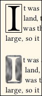In its starred form, \dropcap* will place a rectangular box around the drop cap letter (but not image).
B. If the letter is in the Latin-1 or Latin Extended A character sets, then the box will ignore any upper diacritical mark, so that the mark sits above the box.
C. The boxed letter is a convenient reference frame, in case you wish to create an image of the letter in a graphics program. If you do that, then you will probably need to apply some negative voffset to the image. You may also wish to kern the first line closer to the image.
D. Example: At right, the top section shows a drop cap I with box. This portion of the PDF was imported to a graphics program, and the boxed area was used as template for the image shown in the lower section. Then the image was substituted for the original boxed letter.
F.4. Drop Cap Font and Color
A. These settings apply to \dropcap, but not \lettrine.
B. The default drop cap font is NovelDeco.otf with its Open Type feature dcap. These glyphs are modeled after the Libertinus Serif Display font, and are specially designed to look good at the enlarged size of drop caps, as well as align with the left margin. Also, characters with prominent descenders (such as Ccedilla) are designed so that the descender, rather than the base letter, sits at the baseline. This avoids the need for depth setting.
C. To change the font used by \dropcap, you must first define one or more font commands in Preamble. For example:
\NewFontFace\mynicedc[features]{font file name}
Then, you set the font. This may be changed anywhere:
\SetDropCapFont{\mynicedc}
D. Do not use Type1 or Metafont fonts. If the desired font is only available in one of those formats, you can use a font editor such as FontForge to convert it to Open Type or TrueType format. Then, as described above, load the converted file by its exact file name. If the font has mssing extrema, that is almost never a problem. Overlapped hints are rarely a problem. But self-intersecting glyphs and open paths may be a problem, if you use those glyphs.
E. Default drop cap color is black. To change it, use xcolor syntax. Either of these:
\SetDropCapColor[color model]{color value}
\SetDropCapColor{color name}
Only grayscale may be used, and the graytext document class option must be enabled.
F.5. Drop Cap With First Line Small Caps
A. The \FirstLine command does not play well with either \dropcap or \lettrine. This is not a trivial fix.
B. If you require a drop cap to be followed by an entire first line in small caps, Then you must manually code it. You will probably get better results using \dropcap instead of \lettrine.
C. Use \dropcap{letter or image}\textsc{some text} rest of paragraph.
D. Guess at how much {some text} needs to be. Compile, look at result, then adjust and try again.
E. It is possible (although unsightly) to end {some text} at a hyphenation point in its final word.
F. Again: There is no known better way to do this.
Sample Document
If you click on a command, you will be taken to its documentation. There are many other commands available, but they are not specific to novel class.
Non-empty default values are shown like this.
% !TeX TS-program = LuaLaTeX
% !TeX encoding = UTF-8
\documentclass{novel} % See list of class options; usually none needed.
%%% METADATA (FILE DATA):
\SetTitle{IMPORTANT: Provide Book Title}
\SetSubtitle{} % Default: empty.
\SetAuthor{} % Default: empty.
\SetApplication{LuaLaTeX with novel and microtype}
\SetProducer{LuaLaTeX with novel-pdfx and hyperref}
\SetPDFX[CGATS TR 001]{X-1a:2001}
%%% DIMENSIONS:
\SetTrimSize{5.5in}{8.5in} % Sets width, height of your book.
% Default Media Size equals Trim Size (possibly after \Rework).
% Rarely-used over-ride:
% \SetMediaSize[alignment]{width}{height}
% Cropmark gap is ignored unless document class option cropmarks:
\SetCropmarkGap{0.125in}
% Default margins vary with Trim Size. Defaults for {5.5in}{8.5in}:
\SetMargins{0.5in}{0.5in}{0.5in}{0.75in} % top, outside, bottom, inside
%%% GENERAL FONTS:
% Percent at end of line is necessary, when writing font settings multi-line:
\SetParentFont[%
SmallCapsFeatures={Renderer=Basic},% Effective when small caps requested locally.
Kerning=On, %
Ligatures=TeX, %
]{Libertinus Serif}
% Main text font automatically adds Numbers=OldStyle,Ligatures=Common.
% Default main font size is based on other layout settings.
% Varies from 11pt to 12pt. With all default layouts, value is 11.4pt.
% You may manually choose a different main font size:
% \SetFontSize{length}
% Default lines per page (main textblock) is calculated from other layout settings.
% When using all defaults, the calculated value is 35.
% If used, \SetLinesPerPage manually chooses the value:
% \SetLinesPerPage{integer}
\SetDecoFont{NovelDeco.otf}
\SetSansFont{Libertinus Sans}
\SetMonoFont{Libertinus Mono}
%%% HEADERS/FOOTERS:
\SetHeadFootStyle{1} % This style has headers only.
\SetHeadJump{1.5}
\SetFootJump{1.5}
\SetLooseHead{50}
\SetEmblems{}{} % Default blanks.
\SetHeadFont[\parentfontfeatures,Letters=SmallCaps,Scale=0.92]{\parentfontname}
\SetPageNumberStyle{\thepage}
\SetVersoHeadText{\theAuthor}
\SetRectoHeadText{\theTitle}
%%% CHAPTERS:
\SetChapterStartStyle{footer} % Equivalent to empty, when style has no footer.
\SetChapterStartHeight{10}
\SetChapterFont[Numbers=Lining,Scale=1.6]{\parentfontname}
\SetSubchFont[Numbers=Lining,Scale=1.2]{\parentfontname}
\SetScenebreakIndent{false}
%%% CUSTOM FONTS:
% \NewFontFamily[]{} % Optional command.
% \NewFontFace[]{} % Optional command.
% \CreateFontFeature{}{} % Optional command.
%%% OTHER:
\setdefaultlanguage[variant=american]{english} % polyglossia
\microtypesetup{config=novel-microtype,stretch=20,shrink=20,final} % microtype
\SetDropCapFont[RawFeature=+dcap]{\decofontname} % \dropcap
\SetDropCapColor{black} % \dropcap
%%% EMERGENCY USE:
% \ReworkTrimSize{}{} % Optional command.
% \ReworkMargins{}{}{}{} % Optional command.
%%% BEGIN DOCUMENT:
\begin{document}
\frontmatter % Required.
% Typically six pages of front matter, but could be more.
\mainmatter % Required
% Chapters go here.
\cleartoend
\end{document}
Sample structure for a Chapter or Chapter-Like Section:
% New chapters do not automatically begin on a new page, so:
\clearpage % or \cleartorecto
\begin{ChapterStart}
\vspace*{2\nbs} % Space above chapter title. \nbs = normal baseline skip.
\ChapterTitle{â 1 â}
ChapterSubtitle{At the Mansion} % optional
ChapterDeco[4]{\decoglyph{n9548}} % optional
\end{ChapterStart}
It was a dark and stormy night, etc.
\clearpage % or \cleartorecto
News and Issues
As versions change, some minor modifications have been made. Whevere existing behavior has changed, it is described here. These changes will affect very few users, if any.
Also provided are known issues (and solutions, if known). Remember that "only compile with lualatex" is not an issue; it is a feature! Also remember that academic-like commands and modes are often disabled in this document class. That is a feature, not an issue.
Issues may be reported at the GitHub project page or by e-mail if you don't have a GitHub account. The e-mail address is near the top of the novel.cls file. These may change at some future time.
Before reporting an issue, attempt to compile the file novel-testsuite.tex, located in the documentation extras subfolder. Make a copy of that file, and also copy the required image novel-testimage.png. Place the copies in your home directory, or some other location where you have read/write privilege. If compile fails, see if your TeX distribution is incomplete or out-of-date.
You may ask for new features, but don't expect any. The novel class is focused on doing one thing well, not several things poorly. That's why several standard LaTeX features are disabled.
NI.1. (Solved) Incorrect string placement with package fmtcount
Solved. See section 5.4.
NI.2. (Solved) Compile fails after changing default language
Solved. If you compile a document sucessfully, then re-compile with a different \setdefaultlanguage setting, then compile may fail the second time. It may stop with error message "You can't use \relax after \the."
This depends on which languages are involved. The solution is simple: Discard the *.aux and *.synctex.gz files generated by previous compilation. Then try again.
NI.3. (News, v.1.46) Changed Behavior of \BlockImage
A. Prior to version 1.46, the \BlockImage command measured the height of the image. It also measured the height of optional text that accompanied the image within its block. Unfortunately, the text measurement was unreliable.
B. From version 1.46, \BlockImage still measures and clears the height of the image, with subsequent text (not in the same block as the image) on-grid.
C. However, the new behavior does not measure the height of optional text that accompanies \BlockImage within its block. If there is too much of it, then it will overflow down into the subsequent text. The subsequent text will not be pushed down or off-grid.
D. Very few users, if any, will be affected. But if you started a document using novel prior to v. 1.46, and you use \BlockImage, then be sure to review the results.
NI.4. (News, v.1.46.1) Printing This HTML File
A. With some browsers, you can print this HTML file in the usual fashion. The printout will not show navigation as a right column, Instead, a brief list of contents will appear at the top.
B. If your user agent has trouble printing, do this: Edit this file, In a UNIX-compatible plain text editor with utf-8. About 83 lines from the top you will see a block of style that is commented out. Remove the comments so that the block is effective. Load the edited HTML file with JavaScript turned off. Then print.
NI.5. (News, v.1.46.1) Default Title and PDF/X Changed
A. Up to, and including version 1.46, the default title was empty, and PDF/X was off:
\SetTitle{} % old default
\SetPDFX{off} % old default
B. From version 1.46.1, the default title is IMPORTANT: Provide Book Title, and PDF/X is enabled (using the most frequent American standard):
\SetTitle{IMPORTANT: Provide Book Title} % new default
\SetPDFX[CGATSTR001]{X-1a:2001} % new default
C. You may return to the old behavior by manually setting A. You may change PDF/X to something else. Definitely change the title, unless merely testing.
D. Now, PDF/X is automatically turned off when in draft mode, regardless of your setting. There is also a warning message in the log file.
NI.6. (News, v.1.46.1) Some Internal Macro Name Changes
A. Internal Macros are the kind with @ in the name. They are normally hidden from the user, and not documented here.
B. If you have "dived into" the TeX code, and directly used an internal macro: Some of the macro names have changed. You may have to change your own code.
C. The revised names have more consistent style, for the benefit of developers.
D. If you don't know what the above means, then it certainly does not apply to you.